| [五十嵐雄策] 乃木坂春香の秘密01 | |
| 五十嵐雄策 | |
| (2015) | |
|
乃木坂春香の秘密
五十嵐雄策
|
底本データ
一頁17行 一行42文字 段組１段
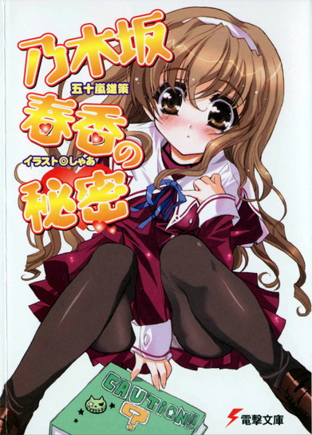
乃木坂春香の秘密
俺のクラスメイトの乃木坂春香は、容姿端麗で才色兼備で、『白銀の星屑』の二つ名を持ち、ファンクラブの会員数も三桁を超す、まさに深窓のお嬢様という言葉がぴったりの学園のアイドルだ。そんな彼女の秘密を知ってしまったあの日以来、俺の平凡な学園生活は終わりを告げ、ある意味奇妙な彼女との関係が始まった。そして、春香が周囲にひた隠しにしている秘密とは──。
第４回電撃ｈｐ短編小説賞の最優秀賞受賞者、電撃文庫でついにデビュー！
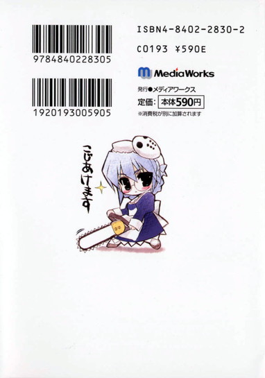
五十嵐雄策
五十嵐雄策の秘密。第４回電撃ｈｐ短編小説賞の最優秀賞受賞者。趣味はピアノ・料理・ハーブティーと、どこぞのお嬢様のような設定。シカゴに住んでいた過去を持つ帰国子女で、弁護士を目指すかたわらで執筆活動をスタート。弁護士作家の誕生が待ち遠しい？
イラスト：しゃあ
しゃあの秘密。盆と年末は有明で戦うタイプのナイスガイ。「電撃帝王」でもまったりと活躍中。座右の銘は〝チャンスの女神にバックドロップ〟。赤いヒトではないらしい。
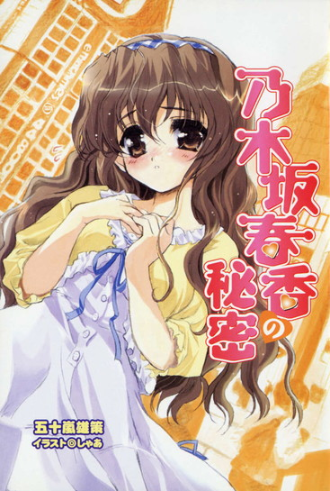
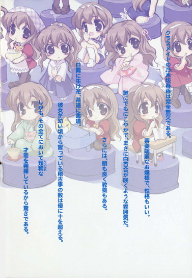
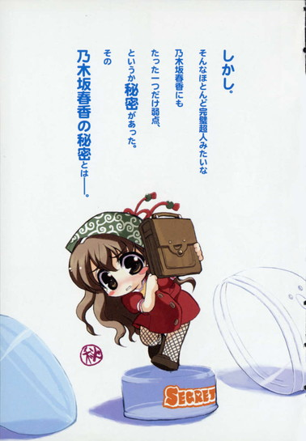
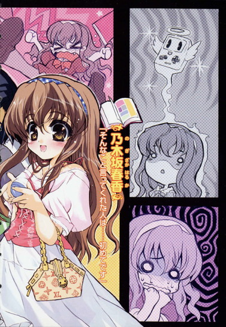
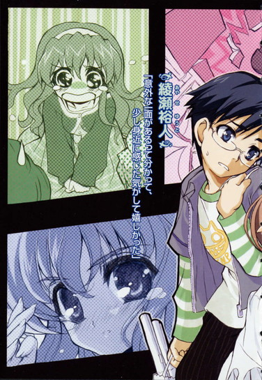
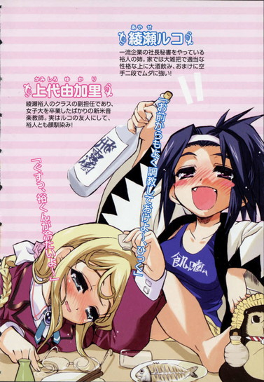
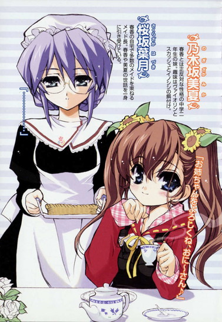
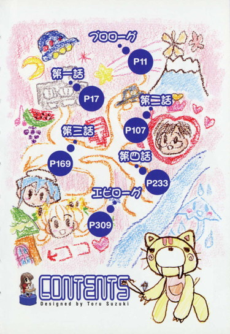
乃木坂春香の秘密
プロローグ
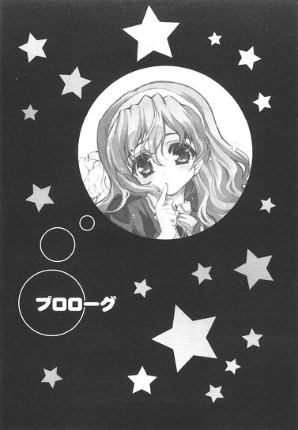
クラスメイトの乃木坂春香は完全無欠である。
いやいきなりこんな頭の悪そうな表現で始めるのもアレなのだが、それは事実なのである。もう厳然たる事実なのである。
背中まで伸ばされたサラサラの髪。ぱっちりとした二重まぶた。少し垂れ気味の目には澄んだ瞳。そのどこか凛とした雰囲気ともあいまって、町を歩けばたぶんすれ違った男の百人に百人がだらしない顔をして振り返るだろうな。かくいう俺もその一人だったり。何せ去年、一年生にしてミス白城学園にダントツのトップで選ばれ、その時以来『白銀の星屑』の二つ名で呼ばれたりしているくらいである。この一年の間に告白して玉砕した野郎の数が三桁を越すとか、学園長までもが会員の秘密ファンクラブがあるとかいうのもあながちウワサだけではないかもしれん。
とはいえ、これだけならそう珍しいものではない。どんな学校にも必ず一人はいる単なるアイドル的存在というやつである。全国を探せば同じようなヤツが何十人何百人と見付かることだろう。
だが乃木坂春香のすごいところは、その特筆すべき点が容姿のみにとどまらないことにあった。
まず性格がいい。
しっかりとした大人びた性格で、だれに対しても分け隔てなくにこやかに穏やかに接する。
まさに白百合が咲くような雰囲気とでもいうか。何にせよ、美人は性格が悪いという定説をひっくり返してくれる貴重な実例である。
続いて頭がいい。
一年前、入学してすぐに行われた実力テストでは全教科九割以上という驚異の得点をたたき出し二位以下に大差をつけての学年トップという離れ業をやってのけ、それ以来今に至るまで常にトップをキープし続けている。凡人とは根本的に頭の出来が違うっていうか......彼女と比べれば、きっと俺たちの脳ミソなんてスカスカの豆腐みたいなもんなんだろうな。
加えて教養もある。
日舞に生け花、茶道に書道。彼女が幼い頃から習っている稽古事の数は優に十を超えるというが、その全てにおいて類稀な才能を発揮しているというから驚きである。中でも最も得意とするピアノは、もはやプロ並みの腕前だとそっちの道ではもっぱらの評判だとか。今もクラスの皆の前で優雅に鍵盤の上に指を躍らせているその姿を見れば、それも納得である。
さらに彼女は手先も器用で、英検一級の資格を持っていたり、とある流派の古武術の師範代だったり、実家が代々続く貿易商であるお嬢様であったり......何というか、天は二物を与えずという言葉に真正面からケンカを売ってかつ完膚なきまでに完全勝利したみたいなヤツである。
しかし。
そんなほとんど完璧超人みたいな乃木坂春香にもたった一つだけ弱点、というか秘密があった。
ただし今のところその秘密を知っているのは俺しかおらず、それゆえに俺は彼女と個人的に関わりを持つことになり、結果今まで足を踏み入れたことのなかった世界へと半ば強制的に引きずり込まれていくことになるのだが──
などと考えていると、そこで彼女の演奏が終わった。
「はい。今のがベートーヴェンのピアノソナタ第二十三番『熱情』の第三楽章です。模範演奏は乃木坂春香ちゃんでした～。ありがとう、春香ちゃん」
音楽担当の上代由香里先生（二十三歳彼氏募集中）の声に一斉に拍手が巻き起こる。それに対して控えめに、しかし見る者全てをとろかすような微笑で乃木坂春香は応えた。うーん、何だか見ているだけで幸せな気分になってくる。そのあまりの可憐さに、普通の男子は言うに及ばず、普段はジョークを聞いてもにこりともしない最高裁判所裁判官のような生真面目クラス委員の森田までもがメガネの向こうの目をだらしなく細めてるし。さらには女子すらもが、妬みの要素のない、純粋な尊敬の眼差しを彼女に送っている。天使の笑顔ってのはああいう彼女みたいなのを言うんだろうな、きっと。
そこで、ふと彼女と目が合った。南アルプスを流れる天然水みたいに澄んだ瞳。彼女は俺を見ると、周りに気付かれないようにこっそりとこっちに向かって手を振った。他のクラスメイトたちに向けるものとは少し異なる親しみのこもった笑顔と共に。
うーん、やっぱりかわいい。
思わず頬が緩む。
こんなことは、少し前までの俺たちにはあり得ない、それこそ紅いブタが飛行機に乗って空を飛ぶくらいにあり得なかった光景である。少し前とは、すなわち俺が乃木坂春香の秘密を知るまでは。
だって彼女の秘密を知るまでは、俺と乃木坂春香はただのクラスメイト──それも向こうは学園のアイドル、かたや何の変哲もないただの一学生──でしかなく、まともに口をきいたことすらなかったのだから。
始まりを思い出す。
僅か三ヶ月くらい前のことなのだが、今となってはもう遠い昔のことのようにも感じられるな。それはたぶん、俺が乃木坂春香と知り合ってからの時間の密度があまりにも濃かったせいだろう。
そう。
始まりは放課後の図書室での出来事。
俺が、乃木坂春香の秘密を知ってしまったあの日のちょっとした事件。
あの日以来、平凡平坦な学園生活は終わりを告げ、俺たちのある意味奇妙な関係は始まったのだ。
そして。
乃木坂春香の秘密とは──
第一話
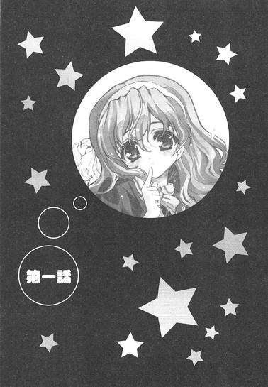
１
その日も別に、普段と同じ昼休みだった。
私立白城学園高校二年一組の教室で、俺はいつもと同じようにそれなりに仲の良いクラスメイト（永井、竹浪、小川、通称三バカ）たちといっしょに昼メシを食いながら、他人が聞いたら死ぬほどどうでもいいような内容の会話を繰り広げていた。
「──だからよ、俺は思うわけだ。女子の体育時の服装は、絶対にブルマの方いい。半ズボンなんて邪道だ。外道だ。人でなしだ。違うって言うヤツは日本国民じゃねえ」
「そうですね。ボクもそう思います」
「ああ、そうだな」
永井の主張に小川と竹浪の二人がふんふんとうなずく。
「裕人、お前はどう思うよ？」
「え、いや俺はどっちでも......」
本当に心の底からどうでも良かったので俺はそう答えた。
「どっちでもだと？ そういう曖昧な態度が今の日本をダメにしてるんだ！だいたいお前は普段からそうやって適当でいいかげんだからなあ──」
「綾瀬くんはいつも極めて対症的ですよね。その何事にも流される主体性のない性格、直さないと今に痛い目を見ることは必定ですよ」
「そうそう。そんなんだからお前はダメなんだよ。このコウモリ野郎が！」
三人揃って、んなことを言いやがる。はっきり言って余計なお世話だ。まあ確かに俺が適当で大雑把でいいかげんな性格であることは（自分で言うのも悲しいが）全くもって否定出来んのだが、真剣な顔でブルマうんぬん言ってるヤツらにだけは言われたくない。
「まあ、いい。今はとりあえず俺たちのディベートを聞いてろ。そしてそれらを踏まえた上でお前はお前の立ち位置を決めればいい。それでまずはブルマの視覚的利便性についてだが──」
まったく、揃いも揃ってアホばっかである。
心の中でため息を吐きつつ、俺は何気なく教室を見回した。そこにあるのはいつもと同じ風景。皆食事を摂るなり、友達と喋るなりして思い思いの時間を過ごしている。それはどこにでもある、ありふれた昼休みの教室のワンシーンだった。
そんな中、どうしても俺の視線は廊下側のある席に吸い寄せられてしまう。動物園のサル山が行儀良く見えるくらいに雑然とした雰囲気の教室にあって、そこだけどこかゆったりと落ち着いた空気が流れているかのような不思議な空間。
その中心には、『白銀の星屑』の名を冠された美少女がいた。
クラスメイトの乃木坂春香である。
もう食事は終わったのか、少し首を傾けて穏やかな表情で左手に持った文庫のようなものに目を落としている。時折その白くて細い指でページを繰る姿はもう何ていうか最高に絵になっていて、果てしなく頭の悪い表現で言えばめちゃくちゃかわいかった。清楚で可憐なお嬢様ってやつのこれ以上ないくらいの完璧なお手本とでも言おうか、何だか見ているだけで心が洗われるような気さえしてくる。マイナスイオンでも放出してるのかもしれん。
ヤキソバパンを頬張りながら（永井たちのディベートとやらは完全に無視して）その姿にしばし見惚れる。うーむ、癒されるね。至福の時間っていうのはこういうことを言うんだろうな、きっと。
などとのんびり考えながらちょっとだけ幸せな気分に浸ること数分。
平穏はすぐに終わりを告げた。
廊下の方から何やら聞き覚えのある声が近づいてくるのが聞こえた。この大してでかくない割にはムダによく通る声。たぶんというか間違いなく信長だな。またアホが一人来たかと、心の中で今日二度目のため息......を吐く。
「裕人、いるー？」
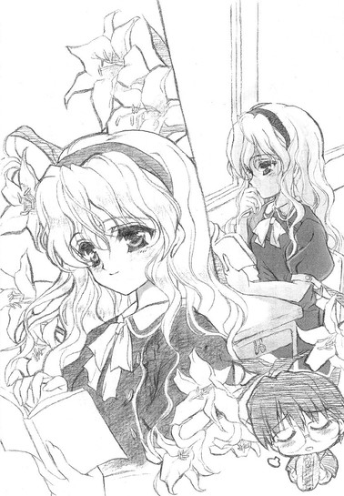
そんな俺の予想を裏切ることなく、ほどなくして見慣れた顔が教室の入り口に姿を現した。色素の薄い髪に小柄な体型、一見すると女子と間違えてしまいそうな美少年風の男子生徒。ヤツは俺の姿を目に留めるなりこう叫びやがった。
「あー、いたいた。ねー裕人、昨日の深夜にやってたアニメ、見たー？僕はねー、標準モードで録画しつつリアルタイムでも見たんだよー。やっぱりこれが正しい鑑賞方法だよねー」
その大声に教室中の視線が集中するが、その発生源が信長だと分かると皆一様に納得した表情でそれまでやっていた動作に戻った。まあ何というか、ヤツはもうそういうキャラとしてクラス内、いや学年内ですでに認知されているのである。
「ねー、見てないのー？ 昨日の『はにかみトライアングル』。来週で最終回なんだけど、クライマックスの一歩手前で主人公の親友がねー......あー、今からＤＶＤが出るのが待ち遠しくてたまんないなー。ちゃんと予約しとかないと。何たって初回限定版にはヒロインの『ドジっ娘アキちゃん』のフィギュアが──」
こちらに駆け寄ってくるやいなや、一人ベラベラと、見た目からはおよそ想像もつかない内容を心から楽しそうに喋り始めるこの男。名前を朝倉信長という。俺とは幼稚園の頃からの付き合いにしてクサレ縁の代表格。まあ......いちおう親友と言って差し支えのない存在である。性格は基本的には明朗快活。だれとでもすぐに仲良くなれる。成績は割と優秀で、得意科目は物理と数学。で、今とさっきの言動からも分かるように少しばかり偏った趣味の持ち主だったりする。いわゆるオタク趣味......昨今でいうアキバ系ってやつか。まるで戦国武将二人を掛け合わせたようないかつい名前と、それに似つかわしくない優男な外見、そしてまた名前とも外見とも似つかわしくないコアな中身という非常に複雑というかまぎらわしい特徴を持ったヤツである。
「裕人もねー、あれ見ないのはほんとに損だよ。もともとは雑誌連載されてるマンガがアニメ化されたやつなんだけど、本編の前日談っていうのかな、なぜ主人公とその親友が対立し合うに至ったかのその理由がねー......」
「あー、分かった分かった」
とりあえず黙らせる。こいつにそのまま喋らせておくとそれこそ昼休みが全部潰れかねん。実際、過去に一度そんなことがあった経験を踏まえての対応だ。
「何だよー、人がせっかく気持ち良く喋ってるのに感じ悪いなー」
「人の教室に来るなり自分の趣味を一方的に喋り続けるお前の方がよっぽど感じ悪いわ」
「そうかなー、でもみんな好きでしょ？ こういう話」
「お前個人の価値観に普遍性を持たせるのはやめてくれ」
「えー、でも裕人は好きだよね？」
「俺はどっちでもない。いつも言ってるだろ」
好きでもなければ嫌いでもない。肯定する気はないが否定する気もない。俺がこいつの趣味に、アキバ系というモノに対して抱いている印象だ。いや、それよりもよく分からないと言った方が正解か。まあ要するに、イイ歳して何でそんなに熱心にアニメとかを見る気になるんだろうな......と素直に疑問に思ってしまうのである。しかしここまで趣味が違うこいつと何で親友なんだろうな、俺。
「うーん。でも裕人には素質があると思うんだけどなー」
何の素質だ。
「僕にしては最高の褒め言葉のつもりなんだけどー。あ、それよりそうだ、裕人、大ニュースがあるんだよー」
「大ニュース？」
こいつの言うことだから、どうせロクなことじゃないような気がするが。
「んー、ほら、僕がこの前探してた雑誌あったよね？あれのバックナンバーがようやく図書室に入荷されたんだってー。図書室っていいよねー。労力を惜しまないでちょっと申請書を出すだけで、今は個人じゃ入手困難なレア本も読み放題。この学園、某所からの寄付金のおかげで資金だけは有り余ってるからさー。ブタもおだてりゃ木に登るってほんとだねー。わーい」
無邪気な笑顔でそんなことを言う信長。
雑誌って......そういえばこの前何かひどく怪しげなタイトルのやつを頼んでたな。あれでよく学園側の許可が下りたもんだ。
「......申請書偽造でもしたのか？」
と疑惑の眼差しを向けると、
「失礼だなー。そんなことしてないってー」
さも心外だって顔で信長は頭を振った。そして胸を張ってこうのたまった。
「ただちょっと、脅しただけだよー」
なお悪いわ！
しかし俺の突っ込みなんざヤツはこれっぽっちも聞いちゃいない。
「それに『イノセント・スマイル』って、その筋じゃちょっとは有名な雑誌なんだよー。昨日のアニメだってもともとはこれに連載されてるやつだしー。そんなに昔のことじゃないから裕人も覚えてると思うけどさー、創刊号が発売された時なんかちょっとした社会現象になったくらいで──」
と、再びうんちくモードに入ろうとしたその時、
ガタン、という大きな音が教室内に響いた。
聞こえてきたのは教室の中央を挟んで俺たちがいるのとは反対側から。もう少し具体的に言えば廊下際の後ろから二番目の席。それはついさっきまで俺がだらしない視線を送っていた場所であり、ある意味このクラスで最も騒音などというものとは無縁の場所である。......本来ならば。
だがその場所では今、乃木坂さんが立ち上がって俺たちの方を凝視していた。その足元にはイスが横向きで転がっている。たぶんさっきの音はそれが原因だろうな。
教室がシン、と静まり返っていた。それはいつも深い湖のように落ち着いている乃木坂さんの表情に、僅かに動揺のようなものが浮かんでいるのが見て取れたからかもしれない。
「ね、ねえ乃木坂さん、どうしたのかしら？」
「わ、分かんない。私たち、何もしてないよね？」
「何か綾瀬くんたちの方を見てるけど......」
そんな囁きも漏れる。
うーむ。
もしかして俺たち、何かやっちまったか？
身に覚えはこれっぽっちもないんだが、それでもあの乃木坂さんに満員電車で痴漢を発見した女性警察官みたいなキツイ視線でじっと見つめられると、何だかこっちが一方的に悪いことをしているように思えてくる。クラスのやつらも皆、お前ら何やったんだよ？って目でじぃっとこっちを見てるし。
「裕人ー、どうするのー？ 何か注目されてるよー」
「そ、そうだな......」
原因として考えられるのは、信長の大声がやかましくて読書の邪魔をしちまったってことくらいか。まあ俺はもう慣れたとはいえ、趣味について語ってる時のこいつの声はほんとに半端じゃなくウルサイからな......。静かに読書をしていた乃木坂さんの気に障ったとしても何ら不思議じゃない。
とすれば非はこっちにあることになる。
だったらここはちゃんと謝っておくべきだろう。
クラス中が固唾を呑んで見守る中、俺は意を決して乃木坂さんの席へと歩み寄り、
「えーと、うるさくして、ごめんなさい」
ぐっと頭を下げる。すると乃木坂さんは途端にはっとしたような表情になった。
「あ、いえ、違うんです。頭を上げてください。その、あなたたちを責めているわけじゃないんです」
「？」
でも、こっち見てたよな？
「い、いえいいんです。と、とにかく何でもなくて......ごめんなさい、お騒がせしました」
それだけ言うと礼儀正しくぺこりと一礼して、何事もなかったかのようにイスを起こし、乃木坂さんは席に着いた。
だが俺たちには何が何だかさっぱりである。
「何だったんだろうねー」
「分からん......やっぱりお前がうるさかったんじゃないのか？」
「僕はそんなにうるさくないよー」
と大声で抗議する本末転倒なやつは放っておいて、俺は何だかキツネにつままれたような気分で乃木坂さんを見た。『白銀の星屑』の端正な横顔には、まだちょっとだけ動揺が残っているようにも見えた。......ほんとに何だったんだろうな。
ちなみに余談であるが、信長の来襲から乃木坂さんの動揺に至るまでの間、永井たちはそれらに毛ほども動じることなく、熱いブルマ談義に花を咲かせていた。マイペースというか単なるバカというか......確実に後者だな。
......いや、ほんっとにどうでもいい話だが。
そして特に何の問題もなく五時間目と六時間目も終わり。
その日の放課後。
俺は図書室に向かって歩いていた。
なぜかというと信長のヤツが、
「裕人ー、悪いんだけど僕の代わりにこの本、図書室に返却しといてくれないかなー？裕人は放課後ヒマだよねー？今日は僕、ワンフェスの攻略マップを作んなきゃなんないから忙しいんだよー」
などと言いくさったからだ。......ったくワンワンフェスだか何だか知らんが（犬の祭典か何かか？でもあいつが飼ってるのはネコだったよなあ......）、それならそれで昨日のうちに返しときゃいいだろとか思いつつも、ヤツには普段から何かと世話になっているため（教科書を忘れた時に貸してもらったり、うちのパソコンが壊れた時に直してもらったり色々と）渋々ではあったが引き受けた。まあ確かに特に用事もないからいいんだけどさ。
と、そんなわけで普段はほとんど来ることがない図書室なんてところに来てみたわけだが。
さて話には聞いていたが、うちの学園の図書室の利用率の低さは見事だった。閑古鳥が五十羽くらい大声で鳴いているという表現がぴったりで、俺を含めても片手で数えられるほどしか人がいない。学園側としては一人でも多くの生徒に快適に利用してもらおうと、コンピュータ管理による貸し出しシステムの構築やゆったりとした閲覧スペースの導入、幅広いジャンルの書籍の購入などの試みを行っているそうなのだが、いかんせん活字離れが著しい現代っ子には馬の耳に念仏というか何というか、とにかく学園側の熱意が見事に空回りに終わっていることだけは間違いなかった。かくいう俺も普段は図書室なんて昼寝以外にほとんど利用したことがないため大きなことは全く言えないんだが。
ま、何にせよ人が少ないなら手続きもさっさと済ませることが出来そうだ。
管理用のパソコンがあるカウンターに向かい、ちゃちゃっとキーボードを操作して返却手続きを行う。貸し出し及び返却手続きは全てパソコンでやらなければならないため少々めんどくさい（信長曰く慣れれば人を相手にするより早いらしい）が、まあこれくらいの手間に文句なんて言っていたらこの文明社会では生きていけまい。働かざる者食うべからず。管理番号と生徒番号を打ち込んで、っと......よし完了。最後に返却ポストに信長のヤツが借りた本（ちなみにタイトルは『美少女フィギュアコレクションⅢ球体関節の歴史』。ほんと、うちの学園は寛容である）を投げ入れてミッションコンプリート。さて帰るか。
と、出口に向かおうとした時だった。
「............」
怪しい人物を発見した。
何ていうか、すげえ怪しい人物だった。
だって持っているカバンで顔を隠しながら、まるでどこぞの忍の者か暗殺者みたいに、本棚の陰から陰を隠れるように移動しているのである。しかも女子生徒。これを怪しいと言わずして何を怪しいと言おうか（反語）。......何だあれ？どうも姿を隠しているつもりらしいが、あのナリと動きじゃ逆に見てくれって言ってるようなもんだ。それともほんとは注目してほしいのだろうか。
何にせよああいうのには関わらないのが吉。キジも鳴かずば撃たれないし、余計な好奇心を持たなければネコも殺されることはないのである。何も見なかったことにして俺がその場から立ち去ろうとした瞬間。
ちらりと、本棚の陰から不審人物の顔が見え。
一瞬、自分の目を疑った。
珍しく図書室なんかに来たせいで、脳が拒絶反応を起こして幻覚でも見せたのかと思った。
「......」
なぜなら。
そこにあったのは、これ以上ないくらいに見覚えのある顔だったから。
「あれって......」
......乃木坂さんだよな？
相変わらず不審な動きをしながら辺りの様子をきょろきょろと窺っているその顔は、信じられないが確かに乃木坂春香だった。遠くからでもそのクレオパトラみたいに整った顔立ちはまず間違えようがない。だけど何だって乃木坂さん、あんな怪しげな動きを？
そんな俺の疑念にも、それどころか俺の存在にすら気付いていない様子の乃木坂さんは、まるでこれから他人様のバイクを盗んで夜の街に走り出そうとしている十五歳みたいな神妙な面持ちで俺の隣にあるもう一台の管理用パソコンまでやって来ると、何やら急いで操作を始めた。傍らに雑誌みたいなものが置かれているのが少しだけ見えるから、おそらくは貸し出し手続きをやっているんだろうが。
カタカタと、キーボードを叩く音が聞こえる。
やがて手続きも無事に済んだのか、乃木坂さんは一仕事を終えたドイツの職人みたいな晴々とした表情でモニターから顔を上げた。そして出口へと足を向けようとして。
俺と目が合ったのはその時だった。
「......」
「......」
しばし、時が止まった。
「......」
「......」
「え......ど、どうしてここに？」
どうしてって、それは俺が聞きたい。てかそんなＵＭＡでも見るみたいに驚かんでも。そりゃ確かに俺と図書室なんかで出会う確率は、ビッグフットとの遭遇率並みに低いかもしれんがさ。
「い、いつからいたんですか？」
「えーと、ちょっと前から」
「み、見ましたか？」
「？」
何を？
「その、私が何を借りたのか──」
「ああ、いやそこまでは見てないけど......」
「そ、そうですか、ほっ」
なぜか辛くもリストラ対象から外された中年管理職みたいな安堵の表情を見せる乃木坂さん。
「？」
「あ、い、いえ大したことじゃないんです。どうか気にしないでください。えっと、確か綾瀬さんですよね。そ、それじゃ私はこれで」
失礼します、と慌てつつも優雅な仕草で頭を下げて、乃木坂さんは出口へと歩き出す。だが俺の方に気を取られていたせいか、その進行方向に閲覧用のイスとテーブルがあるのに全く気付いていなかった。
「あ......乃木坂さん、そっちは──」
「え!?」
結果。
ガラガラガッシャーン。
ハデな音と共に、乃木坂さんはイスとテーブルを巻き込んで盛大に転んだ。それはもう年に一度あるかないかという、思わず拍手をしたくなるほどの、これ以上ないくらい完膚なきまでに見事な転びっぷりだった。
「い、いた......な、何でこんなところにイスが......」
何でと言われても最初からそこにあるものはどうしようもないような。てか、いつも落ち着いて冷静沈着な乃木坂さんらしくない失態である。何かあったかのかな。弘法も筆の誤り？何にせよ放っておくわけにもいかないので、とりあえず倒れている乃木坂さんに手を貸す。ある意味自業自得だろうが、さすがに目の前で転んでいる女の子（それもあの乃木坂春香である）を助けないのは礼儀に反する。これでも俺は全国紳士検定二級の取得者なのだ。知らんけど。
「あ、す、すみません」
目を丸くする乃木坂さんを立たせて、俺は床にばらばらと散らばった彼女の私物と思われるモノに目を遣った。あーあ、ハデにやったもんだな。それらを拾い集めようと手を伸ばそうとした瞬間──
「だ、だめですっ！」
信じられないような絶叫が木霊した。辺りの空気が家族団欒の食事中に突然テレビでベッドシーンが始まった時みたいに一瞬だけ凍結する。いや、ダメって何ですか？まさかあなたなんかの汚い手で私の持ち物に触れるなと？......なわけないよなあ。お嬢様だけど、乃木坂さんはそういうキャラじゃないはずだし。
「？」
乃木坂さんの制止の意味がよく分からなかったので、俺は構わずに落ちている雑誌を拾い上げようとした。
「だ、だからだめですってば！」
すると乃木坂さん、何やら必死の形相でぱたぱたと、割り込むように俺の足元にある雑誌に手を伸ばしてきた。
だが。
「えっ？」
その進路上には、彼女の所有物である数学のノートらしきものがあり──
「え、えっ!?」
見事と言っていい命中率で、彼女の足はそのノートの上に着地し──
「えっ、えっ、えっ!?」
勢いよく踏み出された足は、間にノートを挟むことによって、床との摩擦による制限から限りなく解放され──
「きゃあああっ!!」
そして、乃木坂さんの身体がきれいな円を描いて宙を舞った。一回転したその先には......本棚があった。
ガラガラガラガッシャーン！
さっきとは比べ物にならないほどの壮絶な音と共に、乃木坂さんのフライングボディアタックを食らった本棚があえなく倒れる。さらに倒れた本棚がその横にある本棚をなぎ倒し、さらにその本棚が隣の......という具合に、ドミノ倒しよろしく次々と本棚が倒れていく。
全ての本棚が倒れきるまでに、さして時間はかからなかった。
「......」
一瞬にして、図書室は見るも無惨な廃墟へと変わり果てていた。
えーと。
何が起こったんだか、理解がついてこなかった。
目の前にあるのは、全ての本がぶちまけられ果てしなく悲惨な状態になった図書室と、思いっきり本棚に激突しておきながらなぜかほとんどケガのなさそうな乃木坂さん、そして床に散らばった彼女の私物。
......俺、ここで何してたんだっけ？
一瞬ほんとに分かんなくなりかけたが、床に散乱している荷物を見て何とか思い出せた。ああ、そういや乃木坂さんの荷物を拾い集めようとしてたんだっけな。
乃木坂さんの方はとりあえず大丈夫そうだったので、俺は彼女の荷物集めを再開すべく一番手近にあった、すなわち足元に落ちたままであった雑誌を拾い上げ──
「......」
──そして何となく、乃木坂さんの絶叫及び困惑の意味を理解した。
「......」「......」
そこには、遺伝子学的にあり得ないほど蒼色の髪を風になびかせ、生物学的にあり得ないほど大きな瞳に数多の星を輝かせている女の子が、スカートの裾を指でちょんと摘んで微笑んでいるアニメ絵のイラストがあった。
その下には、過剰に装飾された黄色の太字で『イノセント・スマイル』と書かれている。
「えっと......」
言葉に詰まる。これって......確か信長が言ってたやつだよな。でも何で乃木坂さんがこんなモノを──
だがしかしそれ以上のことを考えるヒマは与えられなかった。
直後に、俺の耳に信じられない音が飛び込んできた。
「う......うっ......ぐす...み、見られた。見られちゃいました」
それが乃木坂さんの泣き声だと理解した時には、すでに状況は俺の手ではどうしようもないものになりかけていた。
騒ぎを聞きつけたのか、辺りにはもう何人かのギャラリーが集まってきている。
「も、もうオシマイです......ぐす......」
そう声を漏らす乃木坂さん。
いやむしろこの状況では、オシマイなのは果てしなく俺の方な気がするが。
周囲の視線がものすごくイタかった。放課後の図書室というロケーションということもありそこまでギャラリーは多くないのだが、それでもたまたまその場に居合わせた四、五人の生徒がまるで金を貢がせるだけ貢がせた挙句別れ話を切り出して女を泣かせているダメ男でも見るようなイヤーな視線でこちらを眺めている。
「何あれ？ 痴情のもつれ？ ごにょごにょ......」
「さあ？ でも男の方も大した顔してないのによくやるわ。ぼそぼそ......」
「本棚もあの人が暴れて倒したのかしら？こそこそ......」
「あれって一組の綾瀬くんだよね？ひそひそ......」
なーんて囁きまで聞こえてきたりして。せめてもの救いと言えば、泣いているのがあの乃木坂春香だとはまだ気付かれていないことくらいか。
「捨てないでって懇願する女の子を突き飛ばして、ついでに本棚まで倒したんだって」
「うわ、何それ。サイアク」
「女の敵よね」
「ダメ男」
ひどい言われっぷりである。
まあ客観的に見れば確かに俺が乃木坂さんを泣かしているように見えなくもない。というかそれ以外の何でもないだろう。ものすごく不本意ながら。
何にせよ一つだけ確かなことは。
これ以上この場に居続けようものなら、明日には俺の名前が（悪い意味で）学校中に轟いているだろうことは間違いないということだった。
そういうわけで。
逃げるが勝ちの先人の偉大なる教えに従って（もう遅いかもしれんが）、俺は床に散らばっている荷物を電光石火の勢いで拾い集め、そしていまだに泣いている彼女の腕を取ると、逃げるように──いや実際逃げるのだが──図書室を出た。後ろからは、
「あ、逃げた」
「誘拐？」
「愛の逃避行？」
「前者でしょ。火を見るよりも明らかに」
なんていうありがたい声が聞こえてきやがった。うう。何だって犯罪者扱いまでされないといけないんだ。何も悪いことはしてないのに。
などと俺まで泣きたい気分になってきたが、女の涙は真珠であるが男のそれはただの塩水である。ナメクジは溶かせるかもしれんが他には何の役にも立たない。
しかし......何だってこんなことになったんだか。
どこか人目につかない場所を探しながら、俺は心の中で出荷直前の食肉牛よりも重たいため息を吐いたのだった。
そんなわけで。
ダメ男や犯罪者呼ばわりされながら辛くも図書室からの脱出に成功した俺、というか俺たちは、現在屋上にいた。落ち着いて話が出来、かつ人目がないところなど、俺のキャパシティの少ない頭ではここくらいしか思いつかなかったのだ。
乃木坂さんはいちおう泣き止んでいた。泣き止んではいたのだが......ただ今にも死にそうな顔で、呆然としたまま肩をふるふるとチワワみたいに震わせている。その姿はいつもの完璧な『白銀の星屑』である乃木坂さんとはほど遠く、あまりにも弱々しいものであり、ああ乃木坂さんってこんなに小さかったんだっけなんてことを考えたりもして。
ともあれ、普段はあんなに落ち着いてしっかりしている乃木坂さんをここまで混乱の極みに陥れた原因だが、まあ一つしかないだろうな。
俺の左手に抱えられた『イノセント・スマイル』。
さっきは突然のことで俺も何が何だか分からなかったが、少し落ち着いて考えてみれば何だってあんなに乃木坂さんが取り乱したのかがよく分かる。
まあつまり。
「乃木坂さんって......アキバ系だったんだな」
俺の言葉に、塞ぎこんでいる乃木坂さんが一瞬だけぴくっと反応する。やっぱビンゴか。ふむ、なるほど。道理で昼休みに信長の発した『イノセント・スマイル』の単語に反応したわけだ。......なんて冷静に分析してる場合じゃないな。
乃木坂さん、すげえ沈んでるし。
どうも乃木坂さん、自分がアキバ系であることを知られたのが相当ショックだったみたいだ。まあ確かに意外ではあるし、世間一般においてマイノリティに属する部類の趣味ではあることは否定出来んが、普段からこのテのモノは信長の部屋で腐るほど（比喩ではなく）見ているせいもあり、実のところ俺はそんなに抵抗を感じていなかったりする。
「あのさ、乃木坂さん」
なので俺はフォローすることにした。
「......はい」
死んだシーラカンスみたいな目。
一瞬怯む。
「あー、今日見たことは、俺忘れるからさ」
「え？」
それまで萎れた花みたいだった乃木坂さんの表情に、ようやく少しだけ生気が戻る。
「なんつーか、別に俺は乃木坂さんがそうでも全然気にならないんだが......でも乃木坂さんは知られたのがショックだったんだろ？だから、今日のことは忘れる。だれにも言わないし、乃木坂さんの前で蒸し返すこともないから、心配しないでいい」
「......」
俺の台詞を、鹿が目の前でハンターに散弾銃を乱射された時みたいなぽかんとした顔で乃木坂さんは聞いていた。あれ、そんな変なこと言ったか、俺？
「......」
しばらくの間乃木坂さんはそのまま静止していた。ぴくりとも動かなかった。うーん。これはネジでも巻いてやらないとマズイかなとか思い始めた時に。
「あの......綾瀬さんは、私のことバカにしないんですか？変な目で見ないんですか？」
そう言った。
「変な目？ 何で？」
「だって......その、あの、こういう趣味に対して、大抵の人は否定的な感情を向けるものです。だから──」
何かヤな思い出でもあるのか、ちょっと辛そうに乃木坂さんはそう言った。否定的ね。まあその言葉はある程度は真理をついているかもしれんが──
「乃木坂さんの言ってることは分からないでもないけどな......でもそういった趣味を持ってても普通のやつは普通のやつだし、そうじゃなくたって変なやつは変なやつだ。少なくとも俺はそれだけで人の全てを判断しようとは思わないぞ」
信長なんかがいい例だろう。あいつは真性のアキバ系であり性格も少々......いやかなり変わってはいるが、それでもけして悪いヤツじゃない。そうでなきゃいかにクサレ縁だからって十年以上も友好関係が続くわけがないし。
「で、でも......」
納得がいかないという顔の乃木坂さん。うーん。どう言えばいいんだろ。
「だからさ、そういう趣味があったって乃木坂さんは乃木坂さんだろ？それが変わるわけじゃないんだから、別にいいじゃん」
「私は......私？」
乃木坂さんがつぶやいた。
「ああ。アキバ系だなんて言ったって結局は趣味の一つにすぎないんだし。要はそいつの性格に付いたオマケみたいなもんだと俺は思う。そのオマケが少し人と違ってたって、そんなのその人のちょっとした個性の一部にすぎないだろ。人としての肝心なモノはもっと根っこの方にあるんじゃないのか？それに......」
「......それに？」
「んー、うまく言えないけど、乃木坂さんにもそういう意外な一面があるって分かって、何か新鮮っていうか......」
「え......」
「何か乃木坂さんを少し身近に感じた気がして嬉しかったっていうか......」
乃木坂さんの顔が完熟トマトみたいに真っ赤になる。
まあ自分で言っていて果てしなくお気楽な台詞のような気もするが、でも実際これは俺の正直な気持ちなんだからしかたないだろ。
だけど乃木坂さんは、ものすごく真剣な目で聞いていた。
「そんなことを言ってくれた人は......初めてです」
そりゃあそうだろう。俺だってこんな機会じゃなきゃ『白銀の星屑』にこんなことはとても言えまい。畏れ多くて。
「ま、とにかくそういうことだから。あんまり気にしない方がいいと思うぞ」
何か乃木坂さんは固まったままだったので、俺は雑誌を渡すと、軽く彼女の肩を叩いて屋上を後にした。そのまま階段を下りて、昇降口で靴を履き替え、校門を出る頃に至ってようやく自分の行動を振り返る余裕が出てきた。
......あの乃木坂春香に説教をしてしまった。
今さらながらにとんでもないことをしちまったんじゃないかとちょっとだけ後悔。ものすごいクサイ台詞も言ってたような気がするし。てか、それまでほとんど話したこともなかったクラスメイトにいきなり偉そうに説教かますなんて俺の方がよっぽど変なヤツのような。まあ過ぎたことを今さら言っても後のカーニバルなのだが。
ともあれ、こんなカタチで乃木坂春香と関わることは、もうあるまい。
何せ彼女は学校一の美少女であり成績学年トップの才媛であり日本でも有数のお嬢様、かたや俺はこれといって特徴のないごくごく普通の一般市民である。柄にもなく慌てたり動揺したりする乃木坂さんを知って少しだけ身近に感じたりはしたんだが、しょせんは住む世界が違う人間。本来交わることのない二本の線がほんの偶然でたまたま重なり合ったにすぎない。それだけのことだ。
と、この時はそう思ってたんだが。
２
それからしばらくは、特に何事もなく平穏に過ぎていった。
乃木坂さんはいつもと変わらずお嬢様だったし、俺も俺で相変わらず適当な学園生活を送っていた。朝は遅刻ギリギリの時間に登校して、睡魔と戦いながら授業を受けて、休み時間は永井たちとだべりつつ、放課後は信長のやかましいうんちくを聞きながらつるんでゲーセンに行ったりする。特に目標とか将来の夢とかもなく、だらだらと何となく過ごす退屈かつ予定調和な日々。愛すべきルーチンワーク。
だけどそんな変わりばえのしない日々の中、一つだけ俺にとって変化があった。
それは。
何だかあの日以来、乃木坂さんの姿を目で追ってしまうことが多くなったことだ。教室とかで、ふと気付くと彼女のことを見ている自分がいる。うーん、これは何なんだろうね。
「それはねー、恋だと思うよー」
「うおっ」
横からいきなり信長のアホ顔がにゅっと飛び出してきた。
「やっほー、裕人。昼ご飯いっしょに食べようよー」
「お前......いつ来た？」
全然気配とか感じなかったぞ。
「ふふー、無音移動術は僕の四十八ある特技の一つなんだよー」
......こいつとは十年以上の付き合いになるが、いまだにその全容を把握出来ん。まあ把握したいとも思わんのだが。
それはともかく。
「恋ってどういう意味だよ、信長」
「どうもこうもそのまんまー。あ、錦とか真とかが付く方じゃなくて、もちろんラヴの方だよー」
それくらい分かるわ。そうじゃなくてだな──
「でもねー、『白銀の星屑』はやめといた方が無難だと思うよー」
相変わらず人の話なんて聞かずに、信長は隣の席からイスを持ってきて俺の正面に座り、マイペースで話を進め始める。
「何ていうか裕人には少し敷居が高すぎるっていうかー、うーん、身分違いってやつ？」
「む」
「裕人は知らないと思うけどねー、入学以来約一年間で『白銀の星屑』に告白した人の数は男子七十八人に女子十六人、計九十四人で全校生徒の約二十パーセントだよー。んで玉砕数もぴったり九十四人で撃墜率一〇〇パーセント。あれはすごいねー、ニュータイプもびっくりだしー」
いや......乃木坂さんが人気あるのは知ってたが、女子十六人って何だよ、女子って。それに何だってこいつはそんなに詳細なデータを持ってやがる？
「これくらいの情報収集は現代に生きる者として当然だよー。ちなみに『白銀の星屑』のパーソナルデータもある程度なら分かるよ。えっとー、乃木坂春香、十六歳、十月二十日生まれ、身長百五十五センチ、得意科目は全科目、苦手科目はなし、家族構成は祖父と両親、三つ年下の妹が一人──」
何やらポケットから手帳のようなモノを取り出しそんなことをつらつらと語る信長。......こいつ、ストーカーか？
「あ、その変質者を見るみたいな目、失礼だなー。僕は生身の女の子になんか興味ないんだよー。やっぱり女の子は二次元に限るしねー。その中でも最近はネコミミメイドさんが特にツボかなー」
そんなことまで訊いてねえ。それに反論するところが明らかに違うだろ。
「それにねー、今のご時世、これくらい調べようと思えばだれでも簡単に調べられるんだよー。情報化社会っていいよねー。情報保護条例だプライバシーだなんて言っても、その気になれば結局個人情報なんて筒抜けだしー。他にもだれかの情報が欲しい時にはいつでも言ってよー、うちの学園の生徒のことなら大抵分かるからー」
虫も殺さないような笑顔でそう言う信長。
......恐ろしいヤツだ。こいつだけは敵に回さないように気を付けよう。
「で、まあそんな感じだからさー、残念だけど裕人が『白銀の星屑』にアタックしても九十九・九パーセントの確立で玉砕すると思うんだよねー。聞いた話によると、ふられた人たちの中にはイケメンで有名なバスケ部キャプテンの佐々岡先輩とかもいたらしいってよー。ま、この人、実はプチ整形なんだけどさー。でもそんな人でも取り付く島もないくらいにきっぱりと断られちゃってるらしいしー。だから裕人じゃねー」
「......憐れむような目で人を見るな」
「いや裕人が悪いって言ってるんじゃないんだよー。ただ相手が悪すぎるっていうか、何しろ『白銀の星屑』はうちの学園最強だからねー。............と、まあいちお忠告はしてみたけどさー」
ちょっとだけ肩をすくめるような素振りをして、信長は笑う。
「でもでもー、裕人がどうしてもやるっていうなら僕は応援するよー。何てったって大事な幼馴染だしねー」
男で幼馴染って、何かイヤな響きだな。いやそれより、
「......って、だからそもそも俺は乃木坂さんにアタックするつもりなんてないんだっつーのに」
「そうなのー？」
そうなのも何も、最初からだれもそんなこと言ってない。
「まあ裕人がそう言うなら別にいいけどさー、でもこういう言葉知ってるー？」
にやり、と珍しく人をからかうような表情を浮かべて、信長のヤツはこんなことを言いやがった。
「〝気になり始めが恋の始まり〟って。ばーい朝倉信長」
めちゃくちゃ語呂の悪い格言だった。てか、格言ですらないし。
信長のヤツにヘンなことを言われたせいで、それ以来乃木坂さんのことを目で追ってしまう頻度がさらに高くなってしまった。授業中、休み時間、放課後、気付けば彼女の姿を探してしまっているのである。我ながら、こりゃ重症だな。
そしてそんなこんなでさらに何日かが過ぎ。
事件が起こったのは、あの日からちょうど二週間後の朝のことだった。
３
「あー、これから持ち物検査を行う。各自、カバンの中身をよく見えるところに出すように」
担任の田鍋繁夫（三十八歳♂独身）の言葉にクラス内が少しざわめいた。持ち物検査は抜き打ちで行われるのが通例だが、それでもやはり抵抗があるんだろう。
「静かにしろー。それじゃあ今から回るんで、男子は私、女子は上代先生に見せるように」
上代先生はうちのクラスの副担任であり、去年女子大を卒業したばかりのうら若き音楽教師である。先生ぶった偉そうなところがない気さくな人で生徒にも非常に人気がある。加えて美人だし、きれいだし、かわいいし、スタイルも......ご、ごほん。まあそれは余談だが。
そんなことよりも、持ち物検査と聞いて一つ頭に引っかかったことがあった。
......まさかとは思うけど、乃木坂さん、あの本を持ってるなんてことないよな？
うちの学校の図書室の貸し出し期間は二週間。乃木坂さんがギリギリまであれを借りていたとすれば、返却日はちょうど今日ということになる。いやしかしいくら何でもまさかそんな運の悪いことはあり得ないだろ──
何気なく、俺は右斜め後ろ遠くにある彼女の席を見た。
そこには、殺人事件の被害者みたいに蒼白な顔をした乃木坂さんがいた。
......うわあ、絶対持ってるよ、この人。
それはもう明日も太陽が東から昇るのと同じくらいの確信だった。
「はい、それじゃみんな。すぐに終わるから、少しだけガマンしてね～」
上代先生の指示で女子が皆カバンの中身を机に出し始める。乃木坂さんも仕方がないといった感じでそれに従う。教科書や楽譜に紛れて、二週間前に見たあの雑誌のようなものが机の上にちらりと見える。
さてどうするか。
しばし思考。いや別にこのまま放っておくっていう選択肢もある。というか助けてやらなければならない必然性は特にはない。
でもなあ。
二週間前の乃木坂さんの泣き顔が頭をよぎる。俺に見られただけであんな死にそうな顔して泣いていたのに、それをクラス全員に見られようものならどういう風になるのか。うーむ、まるで想像もつかない。だがどう考えても好ましい状況にはならないだろうってことだけは分かる。どうも乃木坂さん、いつもは完全完璧なお嬢様な反面、不測の事態ってやつに弱そうだし。
ま、仕方ないか。たとえそれが泥舟であろうとタイタニックであろうと、これも乗りかかった舟ってやつである。多少力業になるが、相手は上代先生だしまあ何とか出来ないこともなくはない。肯定の否定の否定は肯定。助ける手段があるってのにみすみす何もしないってのも目覚めが悪いしな。
俺は手を上げて言った。
「あの、急にハラが痛くなってきたんで、トイレに行ってきてもいいですか？」
「んー、何だ、朝から食いすぎか？ まあ別に構わんぞ。お前の検査はもう終わっとるし。好きなだけどんと出してこい」
無自覚に微妙にデリカシーのないことを口にする田鍋繁夫三十八歳。微苦笑があちこちから上がる。そんなんだからいまだに結婚出来ないんだと思うんだが。まあ別にいいけどな。俺はさも辛そうな風を装って前傾姿勢で教室の出口へと向かう。その途中には......乃木坂さんの席がある。
「ちょっと悪い」
「えっ？」
すでに少し泣き出しそうだった乃木坂さんにだけ聞こえるようにそう言って、俺は床に置いてあるだれかのカバンにつまずいたフリをしてそのまま彼女の机に身体ごと突っ込んだ。
「え、え、きゃっ！」
机が倒れ、勢いでその上にあった教科書や楽譜その他もろもろが床に散らばった。乃木坂さんが小さな悲鳴をあげ、一瞬だけ周囲はちょっとした混乱状態になる。
「乃木坂さん、大丈夫？」
「ちょっと綾瀬、さっさとどきなさいよ！」
「あんた、邪魔！ 乃木坂さんから離れて」
辺りからはそんな台詞が響く。......一人くらい俺の心配をしてくれてもいいのに。
「あー、もう。何をやっているの綾瀬くん」
見かねたのか上代先生が駆け寄ってきた。
「すいません。早くトイレに行こうと気が急いて、つまずいちゃって」
「気が急いて......ねえ。もう、いいから早く行ってきなさい。片付けはこちらでやっておくから」
「お願いします」
どこか含みのある笑みを浮かべる上代先生に頭を下げ、早足で教室を出た。
ハラを押さえたまま廊下を進みトイレに入る。さらに個室に入って鍵を閉めたところで周りを確認。いや男子トイレの、それも個室を覗いている物好き（というか変態）なんているはずもないんだが、念には念を入れてである。トイレ内にだれもいないことを確認して、俺は制服のハラの部分から長方形の物体を取り出した。言わずと知れた『イノセント・スマイル』である。蒼髪の女の子の微笑みがやけにまぶしい。よし、どうやら無事回収に成功したみたいだな──
「......あれ？」
と思ったら、その下から何か出てきた。やたらと高価そうな青緑色の本。これって......楽譜か？そういえば乃木坂さん、机の上にそんなもんも出してたような気も。どうも慌てていたため余計な物まで持ってきちまったみたいだな。
「フランツ＝リスト作曲、メフィストワルツ第一番Ｓ５１４......」
何やらすごいタイトルである。悪魔のワルツ？中をちらりと見てみると、何が何だか分からないほどの数のオタマジャクシが乱舞していた。うわ、すげえ。ピアノのことはアリンコ並みによく分からんのだが、それでもこれが普通の高校生に弾けるような代物じゃないことくらいは見た瞬間に理解出来た。乃木坂さん、こんなとんでもないもんをやってるのか。さすがというか何というか。
改めて乃木坂さんの才能に感心し、俺はその分厚い楽譜を閉じようとして............
............閉じようとして、視界の隅にそれを見付けてしまった。
「......」
これは、イラストなんだろうか？ 楽譜の端っこに血に飢えた人喰いグマのようなすさまじく目付きの悪いキャラクターが指揮棒のようなモノを手に立っていて、「ここは速く弾きすぎないように要注意♪」との台詞が、イラスト本体とは対照的にやたらとかわいらしいフキダシ（ピンク色）の中に書かれている。
いや〝ような〟と表現したのは、それが人喰いタヌキにも見えるし、人喰いイヌにも見えるし、出来損いのゴジラのようにも見えるからであり、さらに手にしているモノもサーベルにも見えれば特殊警棒のようにも見えるし、デッサンの狂ったライトセイバーのようにも見えるからである。
端的に言ってしまえば、ヘタクソだった。
絵心のある幼稚園児ならもうちょっとマシに描けるんじゃないかってくらい、ヘタだった。
「......見なかったことにしよう」
色んな意味でそれが正解のような気がする。きっと、世の中には知らない方がいいことってのは存在するのだ。知らぬが仏。
ちょっとだけ諦観して、俺は静かに楽譜を閉じたのだった。
その日の放課後、俺は上代先生に職員室に呼び出された。
どうも朝のあの時にやった小細工を見抜かれていたらしく、
「さて、あの時、何を隠したのかしら？」
青少年には少しばかり目に毒なすらりとした長い脚を組み替えながら、いきなりそんな質問をしてきた。まあ確かにあんな三文芝居、この人相手ならばれていても不思議じゃない。さて何と答えようかと僅かに悩み、
「えー、隠したのは認めますけど、別に校則禁止品とかじゃないんですよ。一身上の都合というか何というか、緊急避難というか乙女の危機というか」
結局、自分でも何言ってんだかよく分からないそんな返答を返すと、上代先生は契約を完了した小悪魔みたいににやりと笑った。
「ふーん、まあ裕くんがそう言うなら信じるけど。で、庇った相手は春香ちゃん？」
「いや、それは」
「違うの？」
「う......」
何か......全部お見通しみたいだな。さすが年の功、とか言うとおそらく本気で殴られるだろうから余計なことは口にしないが。
「うんうん、みなまで言わなくていいから。そっか、そういうことならこの件は不問ということにしておきましょう。う～ん、若いって、青春っていいわねえ。煌く青春、駆け抜ける十代。あ～私もあと五歳若ければな～」
妙に嬉しそうに目をキラキラとさせる上代先生。何だか確実に勘違いしてる部分がある気がするのだが、説明してもスイッチが入ったこの状態じゃあおそらく聞きゃあしないだろう。ムダな行動は控えることにする。
「やっぱりね～、若い頃ってのは色々な経験をすべきだと思うのよ。二股、三角関係、何でもありね。そういった経験がコヤシとなってやがて泥沼の六角関係くらいに──」
そのまま五分が経過。
ひとしきりあっちの世界に飛んで満足したのか、上代先生はもう一度その色っぽいおみ脚を組み替えて言った。
「うん。話はそれだけだからもう行ってもいいわよ。............て、待った。もう一個あったの思い出した。ねえ裕くん、私の携帯どこにいったか知らない？昼休みに楽譜を借りに行ったあたりから行方不明なのよ」
「そんなもん俺が知るはずないじゃないですか......」
「そう？ 実は裕くんが隠したとかない？ほら、好きな子にはついつい意地悪をしたくなっちゃうっていう思春期の男の子特有の心理で──」
「激しく否定します」
「そこまではっきり言われるとおねいさん、ちょっと傷付くわねえ」
「......」
ウソつけ、と小声で突っ込むと。
「うわ、ひどい言い草。ウソなんだけど。......それにしてもどこに忘れたのかしら。おかしいわねえ。ま、いいや。今日一日探してみて見付からなかったら対策を考えましょう」
「適当ですね......」
俺が言えた台詞じゃないかもしれんが。
「そうかしら？ う～ん、にしてもキミと春香ちゃんかあ......意外と言えば意外なカップリングよね」
「いやカップリングって......」
話を戻されてしまった。しかもやっぱり間違った認識だし。
「いいのよ、隠さなくても。おねいさんには全部分かってるって言ったでしょ？」
「だから隠す隠さないじゃなくてですね......相手はあの『白銀の星屑』ですよ？俺なんかじゃ泣きたいくらいに釣り合わないし、それにそもそもが全部誤解なんですって」
しかし。
「身分違いの恋。ステキねえ......」
ダメだこりゃ。まったく......ほんとに人の話なんて聞きやしない。
「......相変わらずですね、由香里さん」
さすが姉貴の友達だけのことはある。ま、並みの神経じゃあの女の友達なんて務まらないってことか。......しかし、俺の周りって何でこんな人ばっかなんだろうな。信長しかり、三バカしかり、由香里さんしかり、姉貴しかり。類が友を呼んでるとは......考えたくない。
「こら、学校では上代先生って呼びなさい」
自分は人のこと名前で呼ぶクセに......と一瞬思うのだが、
「私はいいのよ。セ・ン・セ・イだから」
などと茶目っ気たっぷりにウインクしながら言われようものなら、反論する気もなくなるってもんである。ま、とりあえず用事は済んだみたいだしと教室に戻ろうとした俺に、由香里さんは部下のＯＬにセクハラするオヤジ中間管理職みたいな顔で、実に楽しげにこんなことを言いやがった。
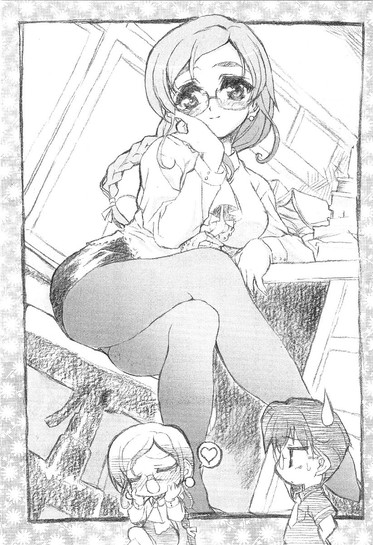
「今日は校医の斉藤先生は出張だから、保健室のベッドは空いてるわよ～。がんばれ、青少年～！」
職員室を出ると、乃木坂さんが立っていた。
例えるならチューリップの花壇に咲く一輪の白百合のように、控えめでありながらしかし他とは違う確かな存在感を持って、静かにそこに佇んでいた。
「あ......」
乃木坂さんは俺を見ると、頭の白いカチューシャをいじりながら何か言いたそうな顔で一歩前に出た。
少しの間、乃木坂さんは何かに迷う素振りを見せたまま立ち尽くしていたが、やがて決心がついたのか、
「あ、あの綾瀬さん──」
その桜色の唇を動かして何かを言おうとしたのだが、
「あれ、あそこにいるのってもしかして『白銀の星屑』じゃねえ？」
どこからか聞こえてきたそんな声にあっけなく遮られた。
「え、どこだ？」
「ほれ、あそこあそこ」
見ると廊下の向こうで数人の男子生徒たちが、こちらをあからさまに指差しながら何やら話をしている。
「ほんとだ。ん......何か男に話しかけられてるみたいだぞ」
「ナニィ！ 男だあ？」
男子生徒の一人が、殺気だった声を上げる。
そういえば色々あって少しだけ忘れかけていたが、乃木坂さんって有名人だったんだよな。それも超が付くほどの。その超有名人が職員室の前で深刻な顔をして男（俺だが）と二人きりで向かい合ってりゃあ、そりゃ目立つか。
「え、『白銀の星屑』がいるって？」
「男と？」
「なになに、何かあったの？」
男子生徒の叫びが聞こえたのか、その辺を歩いていた他の生徒まで足を止めて、興味深そうな目で俺たちをじろじろと眺め始める。中にはわざわざ近くまで寄ってくるやつらもいるし。あっという間に俺たちは野次馬に囲まれてしまっていた。
うーむ。
恐るべきは『白銀の星屑』の知名度である。公共の場で二人でゆっくり話すことも許されないってわけか。プライバシーって言葉がこれほど無意味に感じられたこともないな。まあ連中の興味は俺ではなく百二十パーセント乃木坂さんに向けられているわけであり、俺が偉そうに言える台詞じゃないんだが。
んなことを考えている間にも、野次馬の数はどんどんと増えてくる。ざっと見ただけでも......こりゃすでに二、三十人はいるな。どこから集まってきたんだか。
何にせよ、これ以上この場に留まることは百害あって一利なしだった。こんなに人がいるところで話も何もあったもんじゃない。
ならば採る手段は一つである。
「乃木坂さん、行こう」
「え？」
生まれたてのカルガモみたいにきょとんとしている乃木坂さんの手を取って、俺はこの場から離脱すべく全速力で走り出した。何か俺、乃木坂さんといっしょにいる時は逃げてばっかな気がするな。
「おい、何だあいつ、『白銀の星屑』と馴れ馴れしく手なんか繋ぎやがって！」
「何ぃ、手だと！」
人垣をかき分けながら走っていると、野次馬の一角から罵声があがる。
「ちくしょう！ 待ちやがれ！」
「許せねぇ......」
「くそ、てめぇ、顔は覚えたからな！今度見かけたら簀巻きにして屋上から吊るしてやる！」
なんて、すげえ物騒な台詞が聞こえてきたりもした。何かそいつらの額に『春香様命～星屑守護親衛隊～』とか書かれた真っ赤なハチマキが巻かれていたように見えたのは、俺の目の錯覚だと思いたい。
......というか、錯覚であることを心から願います。
で、俺たちがやって来たのは、今回もまた屋上だった。
ただしあの時とは異なり乃木坂さんは泣いておらず、むしろ俺の方が半泣き状態だったが。うう、まさかウワサだと思ってた秘密ファンクラブが実在したとは。この分じゃ後で信長に頼んで情報操作をしてもらわなきゃなるまい。ヤツにムダな借りを作るのはイヤだが、さもないとほんとに屋上から吊るされかねんからな。
殺人鬼みたいな目をしてたファンクラブ員たちを思い出し憂鬱になる。
それにしても今さらながらに乃木坂さんの人気のすごさというものを思い知らされる一件だった。あの分だとファンクラブの会員数が三桁を超えているってのもおそらく事実だろう。三桁というと学園の総生徒の四分の一に近い数。つまり（女子も含めて）四人に一人は乃木坂さんのファンということになる。これって、ものすごいことだよな？
その乃木坂さんであるが、さすがに疲れたのか今は俺の隣で息を弾ませていた。ま、あんだけ走れば当然か。
とりあえず乃木坂さんが落ち着くのを待って、俺は口を開いた。
「えっと、何か話、あるんだよな？」
まあ何となく内容の想像はついていたが。
「あ、はい。その、朝のことで......」
ようやく息を整えた乃木坂さんが顔を上げる。
やっぱりそうか。考えてみれば、乃木坂さんがわざわざ俺なんかに声をかけてくる理由なんてそれくらいしか思いつかない。......自分で言っててちょっと切ないが。
「あー、あの時はいきなり突っ込んで、悪かった」
俺がそう言うと乃木坂さんはちょっと慌てて、
「え？ あ、ええ。それは良いんです。いえ、良くないのですけれど......」
どっちだ。
すると乃木坂さん、今度は突然ヒヨコみたいに頭をぴょこっと下げた。いっしょにさらさらの髪の毛が揺れて、柔らかないい香りがふんわりと漂う。
「その......あの時はありがとうございました。私のこと、助けてくれたんですよね？」
「あー、まあ」
助けたというか単に放っておけなかったというか。俺はいちおう乃木坂さんの秘密を知ってしまっているわけだし。
乃木坂さんがクスリと笑った。
「綾瀬さんって、いい人なんですね」
「いい人......」
女が男に向かっていい人と言う場合は大抵が〝どうでもいい人〟の意味なので、何だか素直には喜べない。もちろん今の乃木坂さんの言葉にはそんな含みはないんだろうが。
「とにかくお礼が言いたかったんです。綾瀬さんのおかげで、その、私が『イノセント・スマイル』を持っていることが知られないですみました。だから、本当にありがとうございました。そして......ごめんなさい。私のせいで呼び出されちゃったりして......」
再び頭を下げられる。
「いや別にそんな気にしないでもいいって。呼び出されたっていっても上代先生なんだから」
「でも......」
「いいからいいから」
何度もそう言うとようやく納得してくれたのか、乃木坂さんはやっと頭を上げてくれた。
「綾瀬さんには、お世話になりっぱなしです、私」
はにかんだ笑顔を見せる乃木坂さん。うーん、何かそんな風に改めてお礼ばっかり言われると照れるな。
なので話題を変えることにしよう。
「そうだ、それよりこれ、返しておくから」
いちおう周りに他の生徒の姿がないことを確認して、カバンから『イノセント・スマイル』と楽譜を取り出す。
「あ、その楽譜も、綾瀬さんが持っていたんですね」
「ああ、回収する時につい勢いあまって。にしてもすごい楽譜だよな、これ。乃木坂さん、弾けるのか？」
尋ねると乃木坂さんはちょっと照れたように、
「ええ、今練習中の曲なんですけど......だいたいなら」
そううなずいた。やっぱり弾けるのか。タイトル通り、とても人間が弾くような代物には見えなかったんだが。
素直に感心していると、乃木坂さんは何かを思い出したかのように「そ、そういえば......」と、はっと顔を上げた。
「あ、あの......もしかして、見ました？」
微妙に動揺の混じった声で乃木坂さん。ええと、見た、と言うと？
「その......色々と、描いてあったでしょう？」
上目遣いでそう尋ねてくる。
「あ、あー」
あの人間を二、三人殺してエサにしてそうなクマのアレか。インパクトだけは強かったので、よーく覚えている。というか一度見たら三日くらい夢に見そうだったし。もちろん悪夢で。
「ごめん。見た......というか目に入った。ちらっとだけど」
「や、やっぱり見たんですね？」
乃木坂さんが顔を伏せる。うーむ、やっぱりあれは見てはいけないモノだったのか。禁断の果実。どうフォローをしようか頭を悩ませていると、だが次の瞬間、意外な言葉が乃木坂さんから発せられた。
「それで、あの、どうでしたか？」
「え？」
どう、と言うと？
「その......上手く描けていたでしょうか？だれかに見せるのは初めてなんです」
目をキラキラと輝かせてそう尋ねてくる乃木坂さん。その表情には少しばかり自信のようなものが感じられる。......これはひょっとして感想を求められてるのか？何か予想外の展開になってきたな。
しばし思案する。うーん、何て言うべきか。指揮棒を持った目付きがすさまじく悪いクマ。「主食が人間みたいなクマだね」......褒めてねえ。「このクマ、何だかクスリでもやってそうな目してるね」......明らかにけなしてるだろ。「クマ鍋にしたら美味しそうなクマだよね」......もはや何言ってんだか自分でも分からん。
考えに考えた末、
「でもあのクマ、目付きは悪──い、いややたらと鋭かったけど、見方によれば逆説的でなかなかかわいかったかも──」
という無難なモノに落ち着きかけた俺の社交辞令も、次の乃木坂さんの一言で全くその意味を失った。
「......えっと、クマ？ ネコですけど、あれ」
何言ってるんですか？ って顔で首を傾げる乃木坂さん。
「......」
「......」
「......そ、そうそう、ネコ」
ネコか。
それはさすがに分からなかったな。だって普通ネコってキバ生えてないだろ。
「で、でもネコが指揮棒を持ってるってのもなかなかユニークで──」
「......それ、たぶんネコジャラシだと思うんですけど」
「......」
「......」
「......あ、ああ、ネコジャラシね」
楽譜なんだからさ、それくらい統一感を持たせておこうよ。
しかしそんな俺の内心のぼやきに全く気付くことなく、
「どうでしたでしょうか？ 自分で言うのも恥ずかしいんですけれど、あれは割と自信作なんです」
乃木坂さん、さらにそんなことを言った。
「......」
あなた......それ、本気で言ってるんでしょうか？
乃木坂さんを見る。
そこには真剣な眼差しがあった。
これ以上ないってくらい真剣な眼差しだった。
「......」
まあ、人間何かしら一つくらいの欠点はあるってことで。
「......な、なかなか個性的かつインパクトの強いイラストで、いいんじゃないかと思うな。うん、どこかピカソのゲルニカを彷彿させるというか」
すごく婉曲的に感想を述べた。というか、それが限界だった。
「ほんとですか？ わあ、嬉しいです！」
素直に喜ぶ乃木坂さんを見てちょっとだけ罪悪感。いや、でもウソは言ってないわけだし。いちおう。
「本当に嬉しいです！ 思い切って聞いてみた甲斐がありました」
「そ、そう......」
でも他の人には聞かない方がいいと思います。
「あの......これからもよろしくお願いします」
「？」
何のこと？
「やっぱりですね、だれかに見てもらった方が上達も早いと思うんです。一人で描いているのも練習にはなりますが、それだけだとどうしても限界があるので......。あ、もちろんお時間のある時でいいんですけど......」
「......」
それはまさかあの悪魔召還が出来そうなナイトメアちっくイラストを、定期的に俺に見ろと言うんですか？
「どう......でしょうか？」
「そ、それは......」
「だめ......ですか？」
さすがに即答出来ずにいると、乃木坂さんは途端に捨てられた子犬みたいな沈んだ表情になった。うっ......その表情は反則だろ。あの『白銀の星屑』にそんな顔をされて断れるヤツなんていやしない。それに考えてみれば、乃木坂さんがこんなことを頼めるのは例の趣味のことを知っちまった俺しかいないんだよな。......ええい、仕方ない。気が進まんどころかむしろかなり後退してるが、これこそ本当に乗りかかったタイタニックだ。
「お、俺で良ければいつでも」
声が上ずってたのは、まあご愛嬌ってことで。
「ほんとですかっ！」
すっげえ嬉しそうに乃木坂さんが笑った。ま、まあ一回見る度に百日寿命が縮まるなんてことはたぶんない......といいな。
それから少しの間（とはいっても三十分間はみっちり）、乃木坂さんから彼女のイラストにかける意気込みを聞かされて。
「それじゃあ、今日は本当にありがとうございました。イラストは、また新しいのが出来次第お見せしますね。それでは失礼します」
これからピアノのレッスンがあるからと、乃木坂さんは去っていった。『エリーゼのために』を鼻歌で歌いながら、最高に上機嫌だった。
その後ろ姿を見つめながら、俺はぼそりとつぶやいた。
「......早まったかな」
４
さてその晩、部屋で勉強をしていると、いきなり階下からバカでかい声が響いた。
「おい裕人！ 電話だぞ！」
いい感じで進んでいた宿題の英語の和訳を邪魔された俺は少しむかっときたが、血を分けた実の姉の方がもっとキレやすかったみたいだった。
「電話だと言ってるだろうが！」
半ばドアを蹴破るようにして──いや実際留め金の一つが今の衝撃で吹っ飛んだ──部屋に入ってくる長身の人物。
「ルコ......」
冬眠を邪魔されたツキノワグマみたいに不機嫌そうな顔をした我が姉（空手二段、ムダに強い。両親が仕事でメッタに帰ってこない綾瀬家では最強の権力を誇る）が、下着にワイシャツを羽織っただけというあられもない姿でそこにいた。
「全く......人がせっかく気持ち良く寝ていたのに台無しだ。彼女だかだれだか知らんが、こんな深夜に電話をしないようにお前からもよく調教しておけ」
いや深夜って......まだ十時だろ？ そりゃ早くはないがそこまで言うほど遅い時間でもない。それにだいたい調教って何だ、調教って。それを言うなら教育だろ。
と、ムダだと分かりつつもいちおう突っ込んではみるのだが。
「そんなものはどっちでもいい。教え込むという意味では同じだ」
全然違うわ！ それこそ月とスッポンくらい。
しかしもともと大雑把である上に俺以上に適当な性格をしているルコにとっては本当にどうでもいいことだったみたいだ。心から面倒くさそうな顔で、抗議をした俺を一瞥すると、
「......ウルサイやつだな。とにかくいいからさっさと電話に出ろ。私は寝る。眠いんだ。終わったら消音にしておけ」
子機を投げつけて、留め金が外れてブラブラしているドアの横をすり抜けていってしまった。ったく。これで普段は某一流企業の社長秘書なんてやってるんだから世の中って複雑怪奇である。まあ美人はどこでも優遇されるってのが世の常ってことか。こいつも顔だけはいいからなあ......性格は最悪だけど。平等平等言いながら世間様とはかくも不平等なものなのだ。
そんなことを考えながらとりあえず電話に出る。
「はい、もしもし」
すると。
「あ、もしもし。綾瀬さんですか？あ、私、乃木坂です」
子機の向こうから、意外な声が聞こえてきた。ここ最近になってよく聞くようになった耳心地の良いソプラノボイス。しかし昼間に別れた時の上機嫌ぶりからうって変わって、何やら深刻そうな声である。む、何かあったのかな。
「夜遅くにごめんなさい。実は、その綾瀬さんにお願いがあって......」
お願い？ そのそこはかとなく心ときめく単語に何となく胸がドキリとする。
「......突然こんなことを言うのはとても心苦しいのですけど、でも、でも今言わないと後で絶対に後悔すると思ったんです」
真剣な、それでいてどこか恥らうような声。こ、これは......これはもしや？いやいやしかしあの乃木坂さんが俺にそんなことをするなんて、エリマキトカゲが逆立ち歩行をするくらいにあり得ない。
「聞いて......もらえますか？」
「え、あ、ああもちろん」
聞かないわけがありません。
「良かった......あの、綾瀬さん、これから私と会っていただけないでしょうか？」
「えっ......」
一瞬思考がスパークする。
「えっと、会うって、二人で？」
「はい」
こんな時間に二人で会いたいって......まさか深夜の逢引？人気のない公園。二人きりで座るベンチ。止まる時間。そして二人は......っていかんいかん、何か妄想入ってきた。これじゃよくある三流恋愛小説もどきだろうが。
頭をぶんぶんと振る。落ち着け、俺。
何とか心を静めようと頭の中で必死に九九を暗誦していると、乃木坂さんが続けた。
「あの......実は、私といっしょに学園まで行ってほしいんです」
「学園？」
学園って......当然俺らが通っている白城学園のことだよな。肝試し大会でもやるわけじゃあるまいし何でまたこんな時間にそんなところに──
「......本を、返し忘れてしまって」
ウスバカゲロウの羽音みたいな弱々しい声が俺の思考を遮った。
「最初は......綾瀬さんと会った後にそのまま返しに行こうと思ったんです。でも何だか一安心して気持ちが緩んでいたからつい後回しにしてしまって。そうしたら......そのまま忘れてしまったんです」
「あのさ......本ってまさか」
例の『イノセント・スマイル』ですか？
「............はい」
「......」
いやそりゃあ......かなりマズイんじゃないか。うちの学園、基本の校則はヘンに緩いクセに備品とか施設の利用管理とかにはやたらとうるさく、確か図書室の本も期限までに返却しないと翌日に放送で呼び出されるシステムになってたような。生徒の学年クラス氏名及び借りた本のタイトル付きで。
「......そうなんです。もしも呼び出されることになったりしたら私、わ、私......ぐすっ」
考えられる不吉な未来を想像してか、乃木坂さんの声に湿り気が混ざった。
「だ、だから今から返しに行こうと思って。ぐすっ、で、でもこんな時間に一人で学園に行くのは......その怖くて。それで、だれかにいっしょに行ってくれるように頼もうと思って......だ、だけど」
涙声でそう語る乃木坂さん。
ナルホド。確かにその事情だと俺以外に頼るヤツはいないわな。ヘタにだれかを頼って『イノセント・スマイル』を見られようものなら、それこそ藪を突いてヤマタノオロチを出すようなもんだし。
「あの、ぐすっ、だから......ダ、ダメですか？あ、綾瀬さんには度々迷惑をかけて、ひくっ、本当に悪いって思って、いるんですけど、でも......」
とはいえ、頼られるのは悪い気はしない。それに......そもそもこんな本泣き状態の乃木坂さんを放っておくことなんて、まともな神経を持った男なら出来ないだろうし。
だから。
「えっと、直接学園に行けばいいのか？」
「ぐすっ、えっ......」
受話器の向こうで驚いたような声。
「行って......くださるんですか？」
「ああ、どうせやることもないし」
そうすることに決めた。まあ英語の宿題はまだ残っていたが、んなもんこの際どうでもいい。乃木坂さんの涙と英語教師（♂四十二歳属性イヤミ）のねちねちとしたお説教。どちらを避けたいかなど（そりゃあ出来れば両方避けたいが）、改めて考えるまでもないってことだ。
「あ、ありがとう......ぐしゅ、本当にありがとう」
感極まったような乃木坂さんの声。よっぽど一人で行くのがイヤだったんだろうな。気持ちは分かるが。
こうして、真夜中の学園に不法侵入することが決まったのだった。
夜の校舎ってやつは、なかなか不気味だった。
築三十年以上は確実なコンクリート製の白い校舎が、真っ黒な闇の中にボウっと浮かび上がって、見る角度によってはまるで廃屋みたいに見える。何とも言えないイヤーな感じ。テレビに出て来る霊能力者とかがこの場に居合わせたら「ああ、何か非常に悪いオーラを感じます。おおう」みたいなことを言って悶え苦しみそうな、そんな雰囲気だ。隣で乃木坂さんもちょっと泣きそうな表情で校舎を見上げている。
さてどこから入ったもんか。
当然こんな時間に昇降口が開いているわけあるまい。とすれば職員用の通路か何かを探すのが確実かもしれんが、職員用というからには職員室やらの近くにあるんだろう、ヘタをすれば宿直の教師に見付かる恐れもある。うーむ。手近にある窓をちょっと損壊して鍵を開けるとか、昇降口にかけられている南京錠をペンチでぶった切るとか、もっと簡単に鉄パイプか何かで昇降口をぶち破って直接侵入するとかの方法もあるが、それだと本格的に犯罪になってくるんだよな......
何とかスマートに侵入する手段はないかと（注：スマートに侵入しても犯罪は犯罪です）思案していると、
「あの、綾瀬さん、こっちです」
腕をくいっと引っ張られた。
「裏口からなら入れるんです」
「裏口って......何でだ？」
「合鍵が、あるんです」
「合鍵？」
なぜにそんなもんを？
「ええと......父の書斎にあったものを、こっそりと拝借してきたんです。必要になると思ったから」
ああなるほどお父さんの書斎から......って、一瞬納得しそうになっちまったが、だから何でそんなところに合鍵が置いてあるんだ？
「私もよくは知らないのですが......何でも父はうちの学園に多額の出資をしているらしくて、非常時に備えて、秘密裏に学園の全ての合鍵を作っていると言っていました」
出資......そうか、そういえばそんな話をちょっとだけ小耳に挟んだこともあるな。乃木坂さんが入学して以降、白城の寄付金の実に九割は乃木坂家からのもので占められるようになったとか何とか。まあ、それなら合鍵くらいは持っててもオカシクはない......のか？
「？ どうかしましたか？」
「いや......」
どうかしたかといえば何から何までどうかしている気もしなくもないのだが。くわえて学園の合鍵を全て所有してるんなら、昇降口の鍵を持ってきた方が話は早かったのではと思ったけど、口には出さなかった。
「それでは行きましょう」
「ああ──」
図書室は二階にあるので、俺たちはまず階段に向かうことにした。
当たり前だが校舎の中には人の姿はなく、まるで真夜中の墓場みたいにシンと静まり返っている。
「不気味ですね......」
無人の廊下を見回しながら、乃木坂さんがまんまな感想を口にする。ただその手は万力のごとき強さでしっかりと俺の服の袖を掴んで離さない。
「ゲームだったら、その角の向こうからゾンビとか出て来そうです」
「あー」
そのゲームなら俺もやったことがある。ゾンビやら巨大蜘蛛やらを倒して洋館から脱出するゲーム。開始十分でゾンビ三匹に囲まれて食い殺されたような気もしたが。......忘れよう。
「綾瀬さん、うちの学校の七不思議って知ってますか？」
ようやく階段まで辿り着いた辺りで、唐突に乃木坂さんがそんなことを言い出した。七不思議ね。ベタだがうちの学校にもいくつかあったはずだ。ええと確か......
「『屋上の死の十三階段』とか......」
他には『理科室の踊る人体模型』『ひとりでに鳴る音楽室のピアノ』『ボールが弾む無人の体育館』。俺が知っているのはそれくらいか。
「ええ、そうです。あとは『トイレの花子さん』『死後の姿が映る保健室の大鏡』。そして......『読書する死者』」
乃木坂さんが後を継ぐ。
「......」
あの、今、ものすごく不吉な台詞が聞こえたような気がするんですが。
『読書する死者』。初めて聞く話だが、読書っていうからには当然図書室絡みだろう。そして俺たちが今向かっているのがどこかって言うと。
「......」
......俺、帰っていいかな？
「だ、だめです」
潤んだ瞳の乃木坂さんに腕をがっしりと捕まれた。逃亡不可能。
そんなことをしているうちに、問題の図書室に到着した。昼間見た時はただの木製のでかい扉だなあくらいにしか感じなかったが、今はまるで地獄の門みたいな威圧感を伴って俺たちの前にある。
非常にヤな感じだ。
「ちなみに......『読書する死者』って、どんな話？」
尋ねると、乃木坂さんはこう答えた。
「むかしむかし、この学校がまだ木造校舎だった頃、とても本好きだった生徒がいたそうです。その生徒は本当に本が好きで好きで、毎日のように図書室に通っていました。だけどある日、その生徒は図書室に向かう途中で事故にあって......不幸にも亡くなってしまいました。その生徒が、死んだ今でも本を読むために毎日図書室に通ってきているって話なんです。だれもいないはずの図書室から真夜中に足音が聞こえたり、本棚から本が落ちる音が聞こえたり、窓に読書する人影が映ったりするらしいです」
「詳しいね......」
「余談ですけど、この話を聞いた人が真夜中に図書室に行くと、その人の前に本当に『読書する死者』が姿を現すとか」
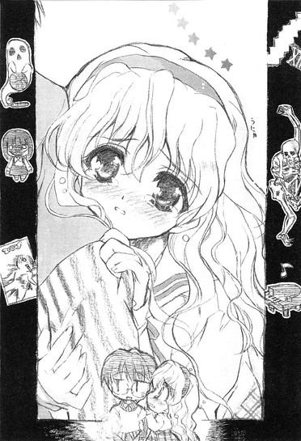
「......」
「私、一昨日たまたまその話を聞いてしまったんです。聞かなければ良かったって、今すごく後悔しているんですけど......」
乃木坂さんが顔をうつむかせる。いやでもその理屈だと──
「......その話って、知らない人に言っちゃまずいってことにならないか？」
「そう......なりますね」
「でもって、俺はその話を今の今まで知らなかったわけなんだが」
「ええと、それって......」
乃木坂さんが唇に指を当てて考え込む。
「......もしかして、今、初めて聞いたんですか？」
「まあ、そういうことに」
「......」
「......」
沈黙。
「ご、ごめんなさいっ。やっちゃいました......」
心底済まなそうな顔で、叱られた仔犬みたいにおろおろと慌てる乃木坂さん。何かそんな姿を見ていると文句を言う気もなくなってくるな。
「あー、いいさ。別に乃木坂さんも悪気があったわけじゃないんだし」
それに、そもそも詳しい内容を訊いたのは俺の方である。
「で、でも、もしも今の私の話が原因で綾瀬さんが読書する死者と遭遇して取り殺されたりしたら......」
蒼白な顔になる乃木坂さん。いや勝手に人を殺さんでくれ。
「まあ大丈夫じゃないか？ その話を聞いたからって必ず読書する死者が出て来るってわけでもないんだし。それに俺は身体が頑丈なのだけは取り柄だから、幽霊にちょっとやそっと攻撃されても何てことないと思うぞ」
ガキの頃からルコのヤツにさんざん鍛えられてるしな。
「け、けど......幽霊の攻撃って、物理的なモノじゃなくて精神的なモノじゃないですか？......呪い、とか」
「そっちもばっちり」
精神的攻撃の方は、ルコのみならず由香里さんからも叩き込まれている。むしろ物理的攻撃よりも耐性があるかもしれん。全然嬉しくないが。
だけど俺のそんな言葉を強がりと受け取ったのか、乃木坂さんはちょっと目を細めて笑った。
「......優しいんですね」
「な、そんなんじゃなくてな......」
何を突然言い出すんですか、この人は。
「ふふ」
「だ、だからなあ......」
否定しようと思うのだがうまく言葉が出て来ず、俺は赤くなった顔を見られないように図書室の方に向き直った。
「ご、ごほん。で、そんないわく付きの図書室なわけだが......当然入るんだよな？」
確認すると、乃木坂さんは真剣な表情に戻ってこくりとうなずいた。
「ええ。せっかくここまで来たんですもの、手ぶらでは引き返せません」
いや手ぶらになるためにここまで来たんだがね。
「い、行きましょう」
そうは言うものの、乃木坂さんはその場から動こうとしない。ただ目でじーっと俺に何かを訴えかけている。......つまり、怖いから俺に先に入れってことね。やれやれ。
仕方なくバカデカイ木製の扉に手をかける。ギギギという音がやけに耳に残り、扉が真っ二つに割れる。その向こうにあるのは......無人の図書室。とりあえず、扉を開いたらいきなり『読書する死者』とご対面、というホラー映画とかにありがちな最悪の事態だけは避けられたみたいだった。もっとも、無人の図書室ってのもそれはそれで十分に怖いんだが。真っ暗な本棚の陰から今にも青白い顔をした何かが出て来そうっていうか......そんな雰囲気だ。
「わ、私から離れちゃダメです。というか、むしろ離れないでください、お、お願いだから」
俺の腕にしがみつくように掴まってそう懇願する乃木坂さん。ふわり、と何やら甘い香りが鼻腔をくすぐる。いや心配しなくてもそんなに引っ付かれちゃ離れられないです。というか歩けないだろ、これじゃ。
「あ、そ、そうですね」
慌てて離れる乃木坂さん。ようやく少しだけ密着状態から解放される。あ、何かちょっとだけ残念かも。
「じゃ、じゃあこれくらいで。でも、絶対に離れないでくださいね？」
上目遣いで見上げて、俺の腕にぶら下がるようにしながら乃木坂さんが言う。それにうなずいて、俺たちは暗闇の中を並んで貸し出しカウンターに向けて歩き出した。
距離にして約五メートル。慎重に進む。
その間、ふとした拍子に何度か乃木坂さんの整った顔がこちらに接近する。琥珀色のキレイな瞳に白い肌。ピンク色の唇。その度に何やら心臓が少しどくりと動いたりして。......不整脈？
「きゃっ」
と、乃木坂さんが何か──閲覧用のイスか？──につまずいて体勢を崩した。そのまま顔面からハデに転びそうになるのを、危ないところで何とか支えることに成功する。
「な、何でこんなところにイスが......」
何でと言われても最初からそこにあるものはどうしようもない。つーかそれ、この前もつまずいたイスじゃないか？
「......や、やっちゃいました。私って、ドジですね」
苦笑して再び歩き出す乃木坂さん。すると今度は別のイスにつまずいてトテン、とコケた。
「......」
まさかとは思ったけど。
乃木坂さんって少しばかり......いやかなり抜けてる？
「......昔から、よく転んだりモノにぶつかったりはするんです」
俺の内心の疑問に答えるかのように乃木坂さんがそう言った。
「歩いていると何もないところで転んだり、電柱にぶつかったり、停まっている車にぶつかったこともありました」
「でも乃木坂さん、運動神経は悪くないよな？」
体育の時間とかも、別に普通だったと思うし。
「あの......運動神経とはあまり関係がないみたいで。注意力とか、そっちの話みたいなんです」
「それは......何ともまあ」
そういうこともあるのか。でも教室とかでは別にそんなドジっぷりを発揮したことはないと思うんだが。
「普段は気を付けているんです......。でも綾瀬さんにはもうさんざんかっこ悪いところ見られちゃっているから......油断したのかもしれないです」
照れくさそうに微笑む乃木坂さん。何か彼女は彼女なりに色々と苦労してるみたいだな。
「......あ、な、何を言っているんでしょう、私。それより早く手続きを済ませなきゃ」
頬を染めたまま思い出したように立ち上がって、今度はつまずくことなく貸し出しカウンターまで辿り着くと、乃木坂さんは手早く管理用パソコンを起動させた。ヴィン、という音とともにＯＳのロゴがディスプレイに浮かび上がる。
「あのさ、今ふと思ったんだが」
「はい。何でしょう？」
「いや、よく考えてみたら、今その雑誌を返却しても、パソコンにデータが残るんじゃないのか？」
そのための管理用パソコンである。貸し出し及び返却の日付と時間、それらは正確にパソコンに、細かく言えばそのハードディスク上に記録される。四月二十二日木曜日、二十三時八分、管理番号千二百三番「イノセント・スマイル』返却、という風に。
「......」
乃木坂さん、きっかり五秒間停止。
「......それは、全然考んていなかったです」
おいおい。
「うーん、でも何とかなるんじゃないでしょうか？ほら、普通に考えればこんな時間に本を返却しにやって来る人なんていないですし、司書の方々も何かの間違いだと思って見過ごしてくれると思います。人は細かい間違いには、もっともらしい理由をつけて正当化してしまうものですから」
まあそりゃあそうかもしれんが......でも案外適当だな、この人も。
「それでは作業を済ませてしまいます。ちょっとだけ待っていてくださいね」
そう言って乃木坂さんは作業に集中し始めた。
その間やることもないので、俺は何となくディスプレイと睨めっこをしている乃木坂さんの横顔を眺めていた。
サラサラの黒髪。雪のように真っ白な肌。整った鼻筋。窓から薄らと差し込む月光とディスプレイからの光に照らされて蒼く白く輝くその姿は、まるで神話か何かに出て来る癒しの女神のように神秘的だった。容姿端麗、頭脳明晰、品行方正、ピアノの腕はプロ級、深窓のお嬢様、『白銀の星屑』。しかしそんな完全無欠の彼女の肩書きも、今のこの光景の前ではどうでもいいものに思えてくる。
だいたい乃木坂さん、そもそもが全然イメージ通りのキャラじゃなかったし。
少し前までは、落ち着いていて大人で人間のよく出来た、見かけ通りの清楚なむ嬢様キャラなのかと思っていた。クラスのヤツらもおそらく同じ評価だろう。
しかし人間やっぱり見かけだけじゃ判断出来ないってことを、今この場にいる俺は心の底から思い知らされていた。
だってどこの世界に、アキバ系の雑誌をこっそり図書室に返却するために真夜中の学校に不法侵入をするお嬢様がいようか。おまけによく泣くし、どこか抜けてるところがあるし、かなりドジだし、絵は凶悪にヘタだし......
でも普段の完全無欠すぎる乃木坂さんより、こっちの乃木坂さんの方が身近に感じられて、俺は絶対にいいと思うんだがな。まあ俺にいいと思われて乃木坂さんが嬉しいと思うかどうかは棚上げにしておいて。
「なあ乃木坂さん」
「はい？」
俺の視線には気付かずに、作業中の乃木坂さんが返事をする。
「乃木坂さんは、何でこういった趣味......アキバ系になったんだ？」
ついそんなことを訊いてしまった。ああ、何言ってんだ俺。もう蒸し返さないって約束したのに。
けど、乃木坂さんは、
「うーん、なぜなんでしょう？」
大して気に留めた風もなく答えてくれた。
「自分でもそんなにはっきりと分かってはいないんです。気が付いたらいつの間にかこうなっていたっていうか......ただ、最初のきっかけはたぶん、アレだと思います」
口元に指を当てて小首を捻る。アレとは？
「はい。今から六年くらい前のことなんですけど......私、お稽古事のことでちょっと両親とケンカして、近所にある公園で泣いていたんです。確か......お友達と遊ぶ約束をしていたのに日本舞踊のお稽古のせいでダメになってしまったとか、そういった理由だったと思います。私、お友達に遊びに誘ってもらったのってその時が初めてで、すごく楽しみにしていたのに、それなのに突然入った特別のお稽古でダメになってしまって......すごく悲しくて悔しくて、一人でわんわんと声を上げて泣いていました。周りを憚ることなく、本当に大声で。きっとだれかに慰めてもらいたかったんだと思います。大声で泣いていればそのうちにだれかが自分に優しくしてくれる。子供心にそう思っていたんでしょうね。でもやっぱり世の中はそんなに甘いものじゃなくて......通りかかる人は何人かいましたけど、皆見て見ぬフリをして通り過ぎていきました。泣いている子供なんて、厄介なだけですものね。だけど......一人、一人だけそんな私に声をかけてくれた人がいたんです」
どこか遠くを見るような目になる。
「その方は泣いている私を、ぶっきらぼうに、でもとっても一生懸命に慰めてくれました。あの時のことは今でも忘れられません。そして......その時に見せてくれたのが、『イノセント・スマイル』の創刊号だったんです」
少し誇らしげに、乃木坂さんはそう言った。
「私、それまでマンガとかそういったモノを見たことがなかったからとっても新鮮で......一瞬でトリコになっちゃいました。見るだけで人を楽しい気分にさせてくれるその雰囲気に惹かれたというのか......。結局その方にお願いして、創刊号はもらっちゃったんです」
えへ、と苦笑する乃木坂さん。
へえ。何かいい話だな。まあ小学生の女の子を慰めるために『イノセント・スマイル』を見せたっていう、そのお方の何考えてるんだかよく分かんない選択はともかくとして。
「それが始まりと言えば始まりかもしれないです。それ以来、またあの楽しい気分を思い出したくて、こっそりとマンガとかを読むようになったから。だから......今でも『イノセント・スマイル』には特別な思い入れがあるんです」
なるほどね。だから決して小さくないリスクを冒してまでわざわざ図書室から借りるなんてことをしたわけだ。確か『イノセント・スマイル』のバックナンバーはレア物だとか信長も言ってたし。目的のためには手段を選ばず。ようやく納得がいった。
「ええと......これでお終いです」
ぽん、とエンターキーを押す音が聞こえた。どうやら作業は無事に終わったらしい。
とそこで乃木坂さん、ようやく俺の視線に気付いたみたいだ。モニターの前で伸びをしたままの姿勢で電池の切れたアイボみたいに固まった。
「な、何でしょう？ 私の顔に何かついてますか？」
少し慌てたように頬を赤らめる。やっぱりこれも教室じゃ見られない反応。とても新鮮である。
「いや......ヘンなお嬢様だな、って思って」
俺は思ったままの感想を口にした。
「えと、本人に面と向かってそういうことを言うのは失礼だと思います......」
とは言いつつも、そんなにイヤそうではない。というかどこか嬉しそうですらある。
「それにお言葉ですが......私に言わせれば、綾瀬さんの方がずっとヘンですよ？うん、すごくヘン。全日本変人王選手権があったら間違いなく上位入賞出来そうなくらい。私が保証します」
「そりゃどうも」
何の選手権だ、それは。
「......」
「......」
一瞬、辺りに柔らかい沈黙が落ちて。
「......ふふっ」
「......はは」
次の瞬間、俺たちはお互いの顔を見合わせてどちらともなく笑い出していた。真夜中の図書室に響く男女の楽しげな笑い声。だれかに聞かれたらほぼ確実に新たな七不思議が誕生しそうである。『恐怖、真夜中の図書室で笑い狂う男女の霊』。
どれくらいそうしていたかな。
しばらくしてようやく笑いの渦が収まると、乃木坂さんがちょっとだけ真面目な顔になって、
「私......もうオシマイだと思ってました」
唐突にそんなことを語り出した。
「オシマイ？」
「はい」
乃木坂さんがこくんとうなずく。
「あの時、綾瀬さんに私が『イノセント・スマイル』を借りたのを見られて、さらにとっても混乱した姿を見られてしまって......ああ、これでもう私がそういう趣味を持っていることが皆に知られてしまう、そうしたら皆は私のことをバカにするだろう、ヘンな目で見るだろう、って、そういう風に思ったんです」
まあそれは否定出来んかもしれない。俺は普段から信長を見ているためそうでもないが、世の中には妙な偏見を持ったヤツが数多くいる。『白銀の星屑』がアキバ系だなんてことを知ったら面白おかしく騒ぎ立てるヤツが絶対にいそうだしな。
ん、でもちょっと待てよ。乃木坂さんのその口ぶりからすると──
「あのさ、もしかして乃木坂さん、俺が乃木坂さんがアキバ系だってこと、周りに広めると思ってた？」
そういうことになるよな？
すると気まずそうにちょっと目を横に逸らす乃木坂さん。
「ご、ごめんなさい。あの時はまだ綾瀬さんのことどういう人なのかよく分からなかったから、そういう可能性も否定出来ないかなって......。それに私、そもそもあんまり男の人と喋ったことがなくて、綾瀬さんのことも......少しだけ怖かったの」
「喋ったことがないって......」
乃木坂さんが？ 『白銀の星屑』が？それは甚だしく意外というか何というか。
「男の人はみんな、どうしてか私に対しては余所余所しくて......。他の女の子にするみたいに、気軽に接してくれないんです。普通に話してくれるのは、綾瀬さんくらい」
それはたぶん、乃木坂さんがあまりにも可憐すぎて完璧すぎて気後れしてるだけだと思うんですが......まあ、他の男のフォローまでしてやらなきゃいかん義理はないか。
乃木坂さんが続ける。
「そんなわけだから、あの時はもう本当に何もかもオシマイだと思ったんです。いっそそのままどこか遠くへ旅に出てしまおうかと思ったくらいで......。でも、私の認識は間違っていました。綾瀬さんは約束通り黙っていてくれましたし、それに私の趣味を知ってもバカにすることもなく普通に接してくれた......それどころか助けてさえくれました。今日だって綾瀬さんがいてくれなかったらどうなっていたことか......。綾瀬さんを信じることが出来なかった自分が恥ずかしいです。あの時の自分にバカって言ってやりたいくらい。私......綾瀬さんには本当に感謝しているんです」
だから、と言って、乃木坂さんは俺の前にちょこんと立ち、
「本当に......ありがとうございました」
はにかみながらスカートの裾を指でちょんと摘んで、ぺこりと頭を下げた。それは何かつい先日どっかの雑誌の表紙で見たようなポーズなのだが......それでも乃木坂さんがやると、それはもう世紀末的にめちゃくちゃかわいくて可憐で愛らしくて──
思わず理性を失いそうになったその時だった。
ガタリ、バサバサ。
「!?」
書架の奥の方で、何やら物音がした。
「い、今の......何の音でしょう？」
乃木坂さんが光速を超える驚くべきスピードでいつの間にか俺の身体にしがみついていた。火事場のバカ力。いやこの場合はバカ脚力？どっちでもいいか。それはともかく腕に何やら柔らかいモノが当たるんですが......
「ほ、本棚の方から聞こえてきましたよね？もしかして『読書する死者』......」
「まさか、幽霊なんて......」
いない。......と、思いたいが。
「ど、どうするんですか？」
不安げに乃木坂さんが俺の顔を見上げてくる。ここでの選択肢は三つ。①好奇心にかられて見に行く。②大人しく逃げ出す。③怖がるフリをしてさりげなく乃木坂さんを抱きしめる。個人的には③を選びたいところだが......い、いや世迷言だな。ヘタすりゃ犯罪だし。
ともあれここは普通に考えれば②が妥当なとこだろう。もう用事は済んだことだし、わざわざ自分から深遠なる大霊界の一部を垣間見ようとする必要もない。ないんだが......でも、それも何か釈然としないんだよな。
「あ、綾瀬さん!?」
「ちょっと様子を見てくる。乃木坂さんはここで待ってて」
と、腰をぎゅっと掴まれた。
「わ、私も行きます」
「え、でも怖いんじゃ......」
「ここに一人で置いていかれる方がよっぽど怖いですっ」
そりゃそうかもしれんな。
「じや、行くか」
「は、はい」
というわけで二人して、怪音の発生源と思われる方へと向かう。
「たぶん、聞こえてきたのは楽譜のコーナーの方からだったと思います」
「楽譜？」
そんなものまで置いてあるのか。ま、『イノセント・スマイル』が認められるくらいだ。別に驚くべきことじゃないかもしれない。
「こ、こっちです」
勝手知ったる乃木坂さんに導かれて、奥にある本棚の一角に近づいた時、
ヴィンヴィンヴィン。
再度、さっきとは違う異音がして、
バサバサバサ。
続いて本が落ちるような音がした。
「ひっ......」
乃木坂さんが、器用にも俺の腕に掴まったまま自分の耳を塞いだ。
「い、い、今の......」
目に涙をためて、乃木坂さんが俺を見上げた。
「や、やっぱり『読書する死者』......に、逃げましょう、綾瀬さん」
「いやちょっと待て......これって」
本が落ちる音は止んだが、もう一つの異音はいまだに聞こえている。ヴィンヴィンヴィンヴィンヴィン。どこかで聞いたことがある音だな。えーと......あ、これってまさか。
「あ、綾瀬さん！」
本棚に近づいてみると、その推測が正しかったことが分かった。
「......携帯、ね」
楽譜がいくつも収められている本棚に載っかっている白い物体。周りの楽譜をなぎ倒して床に落としながら振動し続けているそれは、ただ今着信中の携帯電話だった。
「......しかも、何か見覚えがあるし」
アルファベットが集まって YUKARI と、なっているストラップ。ああ、そういやあの人、携帯失くしたとか言ってたっけなあ......。まあ大方ここで借りる楽譜を選んでいて、たまたま置き忘れたとかそんなとこだろう。まったく、人騒がせな。とりあえずこれは後で本人に届けてやるとして今はウルサイから電源オフ。
「乃木坂さん、もう大丈夫。原因、分かった」
本棚の陰で死にそうな顔で震えている乃木坂さんを呼ぶ。異音が消えたので少しは安心したのか、恐る恐るといった足取りでこちらにやって来た。
「原因分かったって......」
「ああ、人騒がせな原因はコレ」
持ち主の心とは正反対の真っ白な携帯を見せると、気が抜けたのか乃木坂さんはその場にぺたりと座り込んだ。
「あ、安心したら力が抜けちゃいました」
ほんとに腰が抜けてるみたいだった。うーむ、腰を抜かした人って初めて見た。それもあの『白銀の星屑』がねえ......。もう何だかほとんどコメディの世界だ。
「ぷっ......」
思わず笑ってしまった。すると乃木坂さん、ぷーっと頬を膨らませて、
「な、何でそこで笑うんですか。そこは笑うところじゃないです。しょ、しょうがないじゃないですか。ほんとに怖かったんですから！」
と抗議をしていたが、やがて呆れたような顔になって口元を緩ませた。
「もう......ほんとにヘンな人」
「それはお互いさまってことで」
そしてまた二人して顔を見合わせて、思いっきり笑った。近隣の住民に聞こえるくらい、盛大に笑った。
もしかしたら、明日あたりには新しい七不思議が生まれているかもしれないな。
５
さてこれにて任務は完了。
校門を出たところで、乃木坂さんがぺこりと頭を下げた。
「今日は本当にありがとう。綾瀬さんのおかげで助かったし、それに......不穏当かもしれないけれど、とっても楽しかったです」
楽しかった。うん、確かにその表現は不穏当だが、不適当ではないな。だから俺も笑顔でこう返した。
「どういたしまして。俺も楽しかった」
これは正直な気持ちだ。
「あの......春香、でいいです」
照れたような顔で、でも改まって乃木坂さんが言った。
「あ、呼び名のことなんですけど。その、乃木坂さん、っていうのは何だか他人行儀じゃないですか。いえ、確かに他人は他人なんですけど、そういう意味じゃなくて......。う～、うまく言葉に出来ないです。でも......とにかく私のことは春香って呼んでほしいんです。乃木坂さん、じゃなくて」
その表情は結構真剣だったりする。
うーむ。何を混乱していたのかはよく分からんが、その申し出自体は受け入れることに何の問題もなかった。てか、むしろ嬉しいし。
「分かった。春香......でいいんだよな？」
「うん！」
すげぇ嬉しそうな顔でうなずく乃木坂さん......いや、春香。うう、何か今さらだけど春香って、めちゃくちゃかわいいんだよな。
「......だったら、俺のことも裕人でいい。仲いいヤツは、だいたいそう呼んでるから」
何となくそれ以上春香を見ているのが照れくさくなり、半ば目を逸らし気味にそう答える。
すると「仲いいヤツ......」とつぶやいた後に、春香はもう一度笑った。教室では見せない、心からの笑顔で。
「分かりました。裕人さん、これからもよろしくお願いしますね」
これが俺と乃木坂春香との、ある意味奇妙な関係の始まりでもあった。
第二話
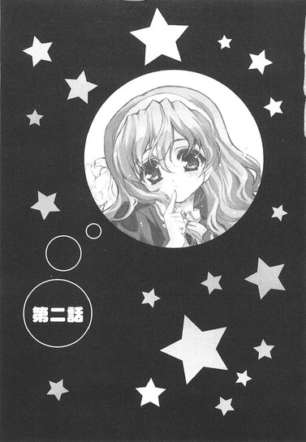
０
それは五月にしてはやけに暑い、ある日曜日のことだった。
日本一の電気街にある、とある店頭。
俺は目の前で繰り広げられている奇異な光景に、心の中で深い深いため息を吐いていた。
「......どうして出ないんでしょうか？ こんなにやっているのに──」
そうつぶやきながら、心底不思議そうに首を傾ける超美少女の姿。
いや別にそれ自体はそんなにおかしな光景じゃない。美少女だって人間なんだから（否定するヤツもいるが）、何か謎に直面し思い悩むことだってあるだろう。だからそれはいい。それはいいんだが......
問題は......その美少女の右手に握られているモノと、彼女の眼前にあるモノにあった。
「これも外れです。こっちも違います......」
白魚みたいに細くてきれいな指の先にあるのは直径六センチほどの球形の物体。硬貨と引き換えに、先ほどから直方体の販売機から吐き出され続けているソレは、俗にガチャポンと呼ばれるアレだったりする。
「おかしいです......」
ガチャポンの中身を確認することに段々と声に力がなくなってきている。それでもレバーを回す手は休めない。見かけによらず案外諦めが悪いというか何というか......
「次こそは......次こそは出ますように」
にしてもやっぱり......目が眩むばかりの生粋の美少女が、ガチャポンを前にしょんぼりと硬貨を投入し続ける姿にはめちゃくちゃ違和感を覚えるな。通りかかるやつらもちらちらとこっちを見てるし。
「なあ春香......もうそのへんにしといたらどうだ？」
彼女の傍らには、すでに十を超える数のガチャポンが転がっている。だけど春香はふるふると首を横に振った。
「......だって、まだあのアキちゃんピアノバージョンが──」
それはつまり出るまでやるってことか？ うーむ、見事にメーカーの思惑にハマっとるな......
「......」
ゴリゴリと、レバーを回す音が響く。出てきたガチャポンの中身を見て、彼女は悲しそうにその整った眉をひそめた。
「また外れです......」
もう何か、どう言葉をかけたらいいのかもよく分からん。新たに硬貨を投入する彼女を黙って見守りながら、俺は再度マリアナ海溝よりも深いため息を吐いた。
俺......何をやってんだろうね？
何だか自分で自分が分からなくなってくる。何だって俺はせっかくの春香と二人きりの買い物中にこんなところでこんなことをやってるんだろう？一ヶ月前のあの時から微妙に脇道に逸れ始めてる気がする自分の人生について、ちょっとだけ考え直してみたくなってしまう今日この頃である。
さて、実際のところ俺はどうしてこんな状況に陥っているのか。
そもそものコトの発端は......三日ほど前に遡るのである。
１
日本語に直すと黄金週間と呼ばれる大型連休も瞬く間に終わりを告げ、来るべき中間試験に向けて学園全体が少しずつ慌しくなり始めたある日の放課後。副担任である音楽教師に残業の手伝い（職員用トイレの掃除。一人でやれよ、んなもん）を半ばムリヤリに付き合わされて、くたくたになって教室に戻ってきた俺は、机の中に入っていた一枚の便箋を発見した。
『放課後お時間がありましたら、音楽室まで来ていただけないでしょうか。ご相談があります』
いつから入ってたんだろうな。間違いなく段持ちだと思われるとてつもない達筆。一見して、それだけならラブレターか何か（しかも本命用）と間違えてもおかしくはない代物である。
「............」
ただしその横に、それを全て台無しにするような、物心がついた子供が見たら確実にトラウマになるんじゃないかってくらい目付きの悪い動物（みたいなモノ）のイラストがなければの話だが。
それを見ただけで、だれからの手紙か一発で分かった。もう分かりすぎるくらいに分かった。というか、こんなある意味才能とさえいえる凶悪なイラストを描ける人物を俺は他に知らん。
「春香......だよな、やっぱり」
『乃木坂春香』
予想通り、便箋の下の方にはそう書かれていた。
クラスメイトにして、才色兼備を地で行く深窓のお嬢様。『白銀の星屑』の異名を持ち、会員数三桁を越すというファンクラブをも有する学園の超有名人。学園長の名前を知らないヤツはいても乃木坂春香の名前を知らないヤツは我が白城学園にはいない。そんな存在である。
で、そんな有名人が何だってとりたてて特徴も取り柄もない俺ごとき一般学生を放課後の音楽室なんかに呼び出すのかというと......それにはまあ彼女が周囲にひた隠しにしているとある秘密が関係してくるのだが──
と、そこまで考えて、俺は時計を見た。時刻はまもなく午後五時。放課後と呼ばれる時間帯からすでに一時間半ほど経過している状態である。不可抗力とはいえ、これではいいかげんお姫様も待ちくたびれてるかもしれん。
教室を出て早足で音楽室へと向かう。黄昏に染まった廊下には人気はなく、窓の外からは運動部が発する「だっしゃー！」やら「きえぇぇー！」やらの、やたらと元気のいい（方向性は確実に間違っている気がするが）掛け声が響いてくる。何かサルの求愛時の声を彷彿させるな。
まだ五月だというのにここのところやたらと暖かい日が続いていて、こんな時間にもかかわらず歩いているだけでじっとりと汗がにじんでくる。カバンから取り出したタオルで汗をふきふき、帰りに自販機でマンゴスチンジュース（夏季限定）でも買っていこうと決めた。あー、あちぃ。
音楽室の前に到着すると、扉の隙間からピアノの音に紛れて何やら話し声のようなものが微かに聞こえた。それも複数人。おや？ピアノはまあ春香だとして、他にだれかいるのか？
防音設備の施された分厚い扉を開ける。その向こうには......何か禁断の花園があった。
まず春香がいた。これはいい。俺をここに呼んだ張本人である。てか、いてくれないとこっちとしては逆に困るってもんだ。
だが......何だって春香の周りにあんなに大量の女子生徒がいるんだ？
ピアノを弾く春香を取り囲むように集まっている女子生徒。ざっと見積もっても十人以上いることは確実だ。学年も様々で、同学年もいれば一年生もいるし、三年生のお姉さま方もいたりする。まさか......『白銀の星屑』の人気を妬んでのいぢめ？
......なわけないな。春香は妬まれるようなキャラじゃないし、それに鍵盤に指を躍らせる春香を見つめる女子生徒たちの目に浮かんでいるモノは、明らかに憧れとかそういうもんだし。
てことは答えは一つだろう。乃木坂春香＠『白銀の星屑』は男子の間ではもう当然のごとく当然として、女子の間でもそれに勝るとも劣らない驚くべき人気を誇る。同性の目から見ても、春香の存在感ってやつは飛び抜けてるってことなんだろうな。そんな学園のアイドル的存在が放課後の音楽室で一人静かにピアノを弾いてれば、そりゃあ人も集まってくるってもんだ。
曲が終わると、女子生徒たちは一斉に大きな拍手をした。
「今の曲、とってもキレイでした。何て曲なんですか、春香先輩？」
「はい。今のはラヴェル作曲の『水の戯れ』です」
「わ～、うんうん、ほんと水って感じだった。あたし、思わず聴き惚れちゃったよ」
「川のせせらぎとか、渓流とかを思い出しちゃいました」
きゃっきゃっ、っとそんな感じの会話が繰り広げられる。
うーん、何だかほんとに女の子の世界というかバックに大量の百合の花が見えるっていうか......すげえ近寄りがたい雰囲気を感じるんですが。おまけに女子生徒たちは春香に夢中で、春香はその相手にいっぱいいっぱいで、いまだにだれ一人として音楽室に入ってきた俺の存在にすら気付いていないってのもどうかと思うんだがな。......寂しい。
仕方なく、ちょっとばかり自己表現してみた。
「おーい、春香」
音楽室の隅っこから。パタパタと軽く手を振ってみる。俺としてそれはほんのささやかな抵抗のつもりだったのだが......その一言で場の雰囲気が一変した。
「......あの人、だれ？」
「今、春香先輩のこと呼び捨てにしてたよね？どういう関係？」
「あれって一組の綾瀬だ......」
冷たいというよりもどこか殺意すらこもった視線が集中する。あ、あれ......何かミスった、かな。
背中にツララを二、三本差し込まれたみたいな悪寒を感じ一歩あとずさると、そこでようやく俺の存在に気付いたのか、春香がこっちを見て顔を綻ばせた。
「あ、裕人さん。いらしてたんですね。お待ちしていました」
だがそんな春香の言葉も火に油を注ぐハメになった。
「春香先輩が男の人を名前で......」
「何か春香ちゃん、嬉しそう......」
「何なの、あいつ」
周囲の視線がさらにキツくなる。針のムシロっていうか、エクスカリバーのムシロに正座させられてモモの上に石布団を敷かれてる気分だ。
「あの、みなさんすみません。約束していた方がいらっしゃいましたので、残念ですけれど今日のところはこのへんで......」
春香が頭を下げると、女子たちは「え～」とか「もっと春香ちゃんの演奏聴きた～い」とかひとしきり残念そうな声を上げていたが、それでも春香の言葉に異を唱えるつもりはないらしく、大人しく帰っていった。ただ中には、俺の横を通り過ぎる時に確実に殺る気な目で睨んでいったヤツとか、「春香先輩にヘンなことしたら、刺します」だとか、「夜道では背中に気を付けることね」だとか、ぼそりと一言「......青酸カリ」だとか、非常に恐ろしい捨て台詞を残していったヤツらもいたりした。......こ、こええ。
「......で、話っていうのは？」
女子生徒（殺人鬼）たちが完全に視界から消えたのを確認してから（そうしないと何か危険がありそうだからな）本題に入る。すると春香は少し恥ずかしそうにもじもじと顔を伏せて、
「裕人さん......明後日の日曜日、おヒマですか？」
そう訊いてきた。
「日曜日？ いや特に用はないけど」
何だってそんなことを訊いてくるのか疑問に思いながらも、休日にやることといったらダメ姉の代わりに掃除洗濯（要するに家事）をするくらいしかなかったためそう答えると、春香は一瞬ほっとしたような表情を見せた後、再びもじもじとしながらこう続けた。
「あ、あの......それでしたら、私に付き合っていただけませんか？」
「......」
一瞬何を言われたのか理解出来ず、脳細胞が完全にフリーズする。
えっと。
いきなりのことで頭が全くもって付いて来ないんだが、それってもしかして......
「デート？」
ってやつでしょうか？
「ちちち、違いますっ！ そそ、そんなんじゃないんです！デ、デートだなんて......」
顔を茹でたエビのように真っ赤にしてぶんぶんと激しく頭を振る春香。いやそんな速攻かつ全身全霊で否定せんでも......。あ、何かちょっとショックかも。
「そ、そうじゃなくてですね、実はちょっと買い物に行きたいところがあるので、それにごいっしょしていただけたらいいなぁと思ったんです」
真っ赤な顔のままそう付け加える春香。ああ、そういうことね。そりゃここ一ヶ月でちょっと仲良くなったとはいえあの『白銀の星屑』が俺なんかをデートに誘うわけないか......。ん？でもよく考えてみれば、世間一般ではそういったこと（二人で買い物）をデートっていうんじゃないかそうなんじゃないか？
「ど、どうでしょうか？ あ、も、もちろん気が進まないようならムリにとは言いませんが......」
「いや、おっけ。行く」
光よりも速く即答した。
だってせっかくの春香の誘いを断るなんて、そんなもったいないオバケが出そうなことは死んでも出来ない。
「ほ、本当ですか！」
春香がぱっと顔を輝かせる。
「よ、良かったです。初めて行く場所なので一人じゃ心許なくて......裕人さんに断られたらやめようかと思ってたんですよ」
うーん、何やらやたらと喜んでくれてるな。まあこっちとしては素直に嬉しいが。
「で、買い物ってどこに行くんだ？」
根本的なことを尋ねると、『白銀の星屑』はそれだけで巷の思春期な男子中高生の実に十割を恋に落としそうなスバラシイ笑顔で、こう答えたのだった。
「はい。アキハバラに、です」
まあつまり......そういうことなのである。これこそが乃木坂春香の秘密。俺だけが知っている『白銀の星屑』の意外な一面にして、彼女と俺とをつなぐ奇妙な糸。
そう。
何というか、乃木坂春香は......プチアキバ系なのである。
２
そういう次第で、俺の休日の過ごし方が決まったわけだったが。
正直そんなに乗り気なわけじゃなかった。
いや春香と過ごすのがイヤだってわけじゃない。というかそれ自体はその場で三遍回ってワンと鳴いてもいいくらいに喜ぶべきことである。『白銀の星屑』と二人きりで過ごす休日。特にやることもなく家で一人ごろごろと過ごすよりも格段に有意義だと言えよう。......それに春香はかわいいし、いっしょにいるのは楽しいし、ごにょごにょ。
にもかかわらずいまいち気乗りしないのは、何というか、俺にとってアキハバラという街にはあまりいい思い出がないからである。
俺がこの日本最大の電気街に来るのは生涯でこれが三度目であるが、その過去に訪れた二度が二度ともさんざんな思いをしていたりして......もちろんそれはこの街が悪いわけではなく、俺をここに連れて来たアホに問題があるわけなのだが、それでも心に刻まれた傷ってやつはそう簡単に消えてくれないらしい。
最初に連れて来られたのは、小学校一年生の時だった。
その頃からすでにどっぷりと骨の髄までアキバ系だったクサレ縁の幼馴染（♂）の朝倉信長に誘われて、ちょっとした冒険気分で家から遠く離れたこの街にやって来たのだが、到着から僅か一時間後には俺はもうその選択を後悔していた。
迷子になっていた。
ムダに雑然として、不必要に入り組んだ街のど真ん中で、俺は一人ぽつんと取り残されていた。
理由は至極簡単。俺をここに連れて来た当の張本人が、人のことをすっかり忘れて自分の買い物に走ったからである。その歳にしてすでに日本一の電気街の地理を熟知していたそのバカとは違い、この街の右も左も上も下も分からない俺が（まあそれが普通なんだが）、ヤツとはぐれるのにそう時間はかからなかったってことだ。
で、そんな俺が迷子になって一人で駅まで戻れるはずもなく。
泣きじゃくる俺が警察に保護されたのは、それから二時間後のことだった。
二度目はそれから何年か経った後、小学校高学年くらいの時。
もはや二度とあそこには行くまいと固く心に誓っていたのだが、どんな心境の変化だったのか、再度ヤツの誘いに乗ってしまった。その時もその時でアキハバラ中の本屋巡りをさせられた挙句にやっぱり自分の買い物に走りやがったヤツとはぐれてしまい、さすがにその時は自力で家まで帰り着くことが出来たのだが、そこに至るまでの間にちょっとしたゴタゴタがあったりなかったり。
まあとにかくそんなこともあって、俺はこの街があんまり得意じゃなかったりするんだよな。
ちょっとだけ複雑な気分で周りを見回す。
待ち合わせ場所でもあるアキハバラ駅前。休日ということもあり辺りにはエサに群がるアリの集団のように人が蠢いている。そういえば春香はこの街が初めてとか言ってたか。最初は、なんつーか意外だなと思ったんだが、よく考えてみるとそうでもないのかもしれん。この一ヶ月で分かったことなのだが、春香の本質は基本的には見たまんまのお嬢様のそれなのである。容姿端麗、頭脳明晰、性格温厚、品行方正。ゆえにアキバ系としての経験値は決して高くない（というか低い）。とはいっても、その潜在的な素質がエベレスト並みに高いだろうことだけは何となく窺えるんだがな。
などとぼんやりと考えていると、
「あ......もしかして待たせちゃいましたか？」
ウワサをすれば影が差す。いつの間にか春香がやって来ていた。
「ごめんなさい......時間通りに着いたつもりだったんですけど」
「いや、春香は遅れてない。俺がちょっと早く来すぎただけだから」
これはほんとのことである。もう少し詳しく言えば、春香と休日に二人で会えることが楽しみで、早起きしすぎてしまったという事情もあるのだが、それは何となく遠足前にはしゃぐ小学生みたいでカッコ悪いので口には出さない。
にしても──
「......うーむ」
春香の私服姿をお日様の下で見るのは初めてだが......何ていうか、かなりかわいい。さらさらのロングヘアーを白いカチューシャでまとめたお嬢様スタイルに白いワンピースとクリーム色のカーディガンというお嬢様なコーディネイトがまたこれ以上ないくらいばっちりハマっていて、ただでさえお嬢様なのが二・五倍増し（当社比）で超お嬢様になっている感じでさらにその全身に纏われた上流階級なオーラがまた......あー自分でも段々何言ってんだかさっぱり分かんなくなってきたが、一言で言ってしまえばその姿はとにかく殺人的世紀末的致死量的にめちゃくちゃかわいいのである。
「あ、あの......どうしたんですか？ そんなにじっと見られると恥ずかしいのですが......」
「あっ、悪い」
思わずぼーっと見入ってしまっていたみたいだ。だけどそんな恥ずかしそうにちょっと上目遣いで頬を染める姿もまたかわいくて......い、いやこのヘンにしておこう。いいかげん自分の頭の中身が心配になってきたし。
煩悩を追い払うべく、頭をぶんぶんと振る。そんな俺の姿を春香が不安そうに見つめた。
「？ 私......どこかおかしいでしょうか？ このお洋服、今日おろしたばかりのものなのですが......似合っていないのかな」
「いやそんなこと」
全くありません。むしろ似合いすぎていて怖いくらいです。
それに春香は気付いてないが、さっきから周りの視線（特に♂）がものすごかったりする。そりゃあ春香ならどこを歩いても否が応にも注目を集めるだろうが、場所が場所だけにその目立ち方が半端じゃない。かなり半端じゃない。まさに貧相で小汚いガチョウ（俺含む）の群れの中に舞い降りた、美麗で優雅な白鳥といった感じである。
「そ、それじゃ行くか」
「あ、はい」
促すと、ワンピースの裾をひるがえして春香がにっこりと笑った。そのあまりに愛くるしい仕草に、周囲から一斉にため息がこぼれる。マジで......かわいい（しつこい）。
眼福って言葉を心から噛み締めて、俺は春香といっしょに歩き出した。
さて、この辺で俺たちがこの街にやって来た理由をちょっとばかり説明しておくべきだろう。
いやもちろん買い物に来ているわけだが、そういうことではなくて具体的に何を買いに来たのかということである。
以下はちょっと前に交わされた会話である。
「あのですね......銀色の『ぽーたぶる・といず・あどばんす』が欲しいんです」
春香の口から出たのは、俺でも知っているくらい有名な携帯ゲーム機の名前だった。『ポータブル・トイズ・アドバンス』。略して『ＰＴＡ』である。『銀色の』とは、おそらくその中でも手に入れるのが特に困難だという限定版のシルバーモデルのことを言ってるのだろう。確か信長のやつもかなり欲しがってたっけな。
「てことは、オモチャ屋に行くってことか？」
「う～ん、オモチャ屋さんというか電気屋さんだと思います。たぶん。私もよく分からないのですが、雑誌にそう書いてあったので」
何か頼りないな......
「じゃあまず電気屋か？ といってもこの街は電気屋ばっかだからな......」
むしろここではそうでない店を探す方が難しいくらいである。
「だったら、まずその辺の電気屋を片っ端からあたってみるか？」
とりあえずそう提案してみると、
「あ、ちょっと待ってください」
止められた、
「あ、あの、実は今日のために用意したものがあるのです」
何やらカバンをごそごそと漁り、春香が取り出したのはレポート用紙のような二枚の紙だった。
「えと、こちらが裕人さんの分です。お役に立てばいいのですが......」
「......これは？」
「〝お買い物のしおり〟です」
にっこりと春香。
「は？」
何だそれは。
「今日に備えて私が作った特製のしおりです。行きたい場所とそこまでの道のり、到着する予定時刻を簡単にまとめたオールインワンの万能マップです。これさえあればもうばっちり。作るのに三時間もかかったんですよ。えへ」
控えめに春香が笑う。
なるほど地図ね。いや、まあ行きたいところを事前にまとめておいてくれたのはいいんだが、ひょっとしてこのミミズがのたくってヘビとケンカしてるみたいなけったいな線が地図だとか言うんじゃないだろうな。
内心の不安を面には出さず、お買い物のしおりとやらをもう一度よく見てみる。地図の部分はもう絶望的なくらいアレだったが、それ以外はよくまとまっているみたいだ。これなら行き先をどこにするかに迷うことはないだろう。......そこまで無事に到着出来るかはまた別問題だが。
で、このお買い物のしおりとやらによると、携帯ゲーム機購入は最後（予定時刻午後五時）になっていた。
「なあ、何で肝心のモノが最後なんだ？そんなに欲しいものなら最初に確保しといた方がいいんじゃ......」
先手必勝は日本人の定番だと思うんだが。それとも最後に買うことに何か意味でもあるのか。残り物には福がある？
俺の質問に、春香はちょっとイタズラっぽく目を細めた。
「だって最初に買ってしまったら、それでお買い物が終わってしまいますよ。せっかく楽しみにしていたお買い物なのに......そんなのもったいないです。それに──」
「それに？」
「それに......一番のお楽しみは、最後に取っておくものだと思って」
どうやら好きなオカズは最後に食べるタイプみたいである。
とまあ、それ（携帯ゲーム機購入）が本日の主目的らしい。
とはいってもメインイベントに至るまでにもいくつかサブイベントがあるようで、お買い物のしおりとやらのタイムテーブルに従って、俺たちはアキハバラの街を歩いていた。
しかし......相変わらずすごい街だな、ここは。
歩いていると目に入ってくるのはアニメやゲームなポスターやらカンバンやら、中には等身大のポップなんてものまでありやがる。まるっきり異世界、アナザーワールドって感じだ。じっと見てると何か頭がくらくらしてくる。
「えと......そこの道を左に曲がって、少し進んだところを右に曲がって直進して──」
その異世界を、春香が地図を見ながら先導してくれていた。
......何であの地図で分かるんだろうな。俺には何をどう見てもウナギが腹痛を起こしてうねうねとよじれている図くらいにしか見えん。あんな地図を描けるのもある意味才能ながら、それを正確に読み取れるのはもっとすごい才能のような気がする。......全くもって完膚なきまでにうらやましくはないが。
「次にこの道を右ですね。そうしたら白い建物が見えてくるはずです」
ともあれ春香のおかげで、ここまで俺たちはほとんど迷うことなく目的地へと到着することが出来ていた。順調にサブイベントとやら（アニメショップの見学とかグッズショップのウインドウショッピングとか）を消化して、現在はお買い物のしおりにおける四番目の目的地である専門書店へと向かっているところである。
大通りを並んで歩いていると、何だかあちこちで行列のようなものが見えた。ざっと見て三、四十人くらいの人間がぞろぞろとレミングスみたいに列をなしている。何かイベントでもあるのかね？この暑い中ご苦労なこった。代われるもんなら代わってあげたい。まあ実際ムリなんだけど。
などと完全に他人事で眺めていると、
「あっ、あれは」
隣にいた春香が突然とてとてと走り出した。あー、またか。走り出した先にあるのは一軒の店。その後ろ姿を黙って見守る俺。これで本日三度目である。さすがにもう驚かん。
ゆっくりと歩いて春香の後を追う。
春香は、店のディスプレイの前にぴったりと張り付いていた。
「かわいいです......」
視線の先にあったのは赤色の髪をした女の子がヴァイオリンを弾いているフィギュア（定価二万五千円、高ぇ......）。それをまるでお気に入りのトランペットを見るため楽器屋に毎日通っている少年みたいな目をして、春香はじ～っと見つめていた。
どうも春香はお気に入りのモノが目に入ると周りが見えなくなるらしく、隣を歩いてる俺の存在すらもすっかり忘れて、真っ赤な布を見つけて興奮する闘牛のごとく、単独特攻をかけるのである。
おかげでその度に、俺は荷物を持ったまま一人ぽつんと取り残されるという放置プレイを食らうハメになり、まあ寂しいというか空しいというか何で俺ここにいるんだろうなとか自分の存在意義について少しばかり疑問を抱いたりもしたんだが......何だかそれも段々と気にならなくなってきた。
「かわいいものって、見ているだけで幸せな気分になりませんか？」
と、学園では絶対に見せない幸せそうな笑みを浮かべる春香。その生き生きとした姿を見てると、そんなこと（俺への放置プレイ）なんて非常に些細なことに思えてくるんだよな。ま、『白銀の星屑』のこんな無邪気な顔が見られただけで報酬としては十分ってことで。
──それから十五分ほどが経過したが、春香は一向にディスプレイの前から離れようとしなかった。
「なあ......そんなに気に入ったんなら、買えばいいんじゃないのか？」
さすがにこれ以上ここにいるのも少し営業妨害っぽいんで、そう提案してみたところ、春香はその整った顔を曇らせて答えた。
「そうしたいのは山々なんですけど......予算がないんです」
「予算？」
天下の乃木坂家のお嬢様からそんな言葉を聞くとは思わなかった。小遣い月百万とかお年玉五百万とか、そういうレベルじゃないのか？
と尋ねてみると、
「そんな......とんでもないです」
春香は大きく首を振って力いっぱい否定した。
「私のお小遣いなんて本当に少しばかりで......毎月どう節約するかに頭を悩ませているくらいです」
「ちなみに、いくらくらい貰ってるんだ？」
参考までに訊いてみると、
「ええとですね──」
春香の口から出たのは、俺の月の小遣いとほとんど変わらない額だった。
「意外だ......」
激しく意外である。あの由緒正しい上流階級の代表格の乃木坂家のお嬢様と、ちゃんとした家系図が残っているかどうかも怪しい中流階級のステロタイプである綾瀬家の一子にすぎない俺の小遣いが同額なんて、普通は考えられない。
「うちはお父様が厳しくて......今日だって、この日のために取っておいた大事な一万円札を貯金箱から出してきたんです。......おかげでブタさんが天に召されてしまいました」
ブタさん......貯金箱のことか？
「だからムダ使いは出来なくて......。でも、いいんです。見ているだけで、十分満足ですから」
えへ、と健気に笑う春香。うう、何ていじらしい......。そういう理由なら（店の人に文句を言われるまで）好きなだけ見なさい。おじちゃんが許すから。
そしてさらにディスプレイの前で十分ほどの時間を過ごし。
「ありがとうございました。おかげさまで幸せなひと時を過ごせました」
とのことらしいので再び歩き出した俺たちであったが──
「あっ」
また何か見付けたのか、大通りに出るなり春香が四度目の特攻を見せた。忙しいな。
向かった先はとあるグッズ系の専門店。だが店内には入らずにその店先に置いてある直方体の物体に駆け寄っていく。これはあれか、いわゆるガチャガチャだとかガチャポンだとか呼ばれる類の玩具自動販売機か。うーむ、懐かしい。俺も小学生の時によくやったもんである。某機動戦士や某筋肉超人のデフォルメされたゴム人形なんかは、今でも押入れをひっくり返せば大量に出て来るんじゃなかろうか。
「これって、アレですよね？ 確かお金を入れると中からお人形とかが出てくる......。あっ、あれって......もしかして、『ドジっ娘アキちゃん』？」
......何かどっかで聞いたような固有名詞だな。春香が指差した先には、やはりどこか見覚えのある蒼色の髪をした女の子がピアノを弾いているフィギュアの写真が貼られた四角い筐体（長い......）があった。
「あれ......とってもかわいいです」
再び少年の目になる春香。うーん、何となく春香の好みの傾向が分かってきた気もするな。
「だったらやってみたらどうだ？」
さっきのやつとは違って、これならリーズナブルだし。
「え？ やるって、これをですか？」
「ああ」
「え、でも......」
勧めてみたものの、春香は何やらもじもじと躊躇している。あれ、もしかしてあんまり乗り気じゃないのかな？
すると春香は小さな声で言った。
「あの......実は私、初めてなんです」
「初めて？」
って、ガチャポンが？
「は、はい」
恥ずかしそうにこくりとうなずく。
「見るのも触るのも今日が初めてなんです。えっと、こういうのを何ていうのかな......初体験、でしょうか？なのでちょっとだけ心配だったのですが......あの、私にも出来るのでしょうか？」
「......」
いやまあ言葉としては正しいんだが。でもこんな真っ昼間から人前で初体験とか言うのはやめてほしいです。
「ど、どうでしょうか？」
「うーん、まあ平気だろ。特に難しいもんでもないし」
ガチャポンなんて、硬貨を入れてレバーを捻るだけだ。その気になれば幼稚園児でも出来る。
「そうなんですか。それならやってみます」
ようやく春香もその気になったようだった。おもむろに財布をカバンの中から取り出し、新たに支給されたパソコンに向かう機械オンチの中年サラリーマンみたいに、すげぇ真剣な顔をしてガチャポンと向き合う。ま、ここはとりあえず温かい目で見守っておくか──
「あ、あれ？ あれ？ おかしいな......どうなってるんでしょう？」
と思ったのだが、いきなり春香が何やら困っていた。
「どうした？」
「裕人さん......これ、壊れているんでしょうか？お金が入らないんです」
「ん、そんなことないと思うが......どれどれ」
覗き込んでみる。
「......」
そこには硬貨投入口に必死に一万円札を押し込もうとしている春香の姿があった。......いや春香さん、それはいくら何でも。
「??」
「......春香、ガチャポンは紙幣は使用不可。硬貨のみ可だ」
「えっ、そうなんですか？」
「......そうなんです」
いやマジ顔で訊き返さないでくれ。
「分かりました、硬貨ですね」
再び財布を開く春香。そして次の瞬間、ご馳走を目の前にしてお預けをくらった豆柴みたいに悲しそうな顔になった。
「......硬貨がないです」
「......とりあえず、俺が立て替えておくから」
このままじゃいつになったらスタート出来るのか分からなかったため、そう提案した。
「......お手数をおかけします」
千円札を両替機に呑み込ませて、百円玉に替える。何か紙幣が硬貨に替わると損した気分になるのは俺が小市民だからだろうか。
「ほい、これ」
「は、はい」
緊張した面持ちで俺から百円玉を受け取る春香。
そして春香のガチャポン初体験が始まったわけなんだが......ちょっとばかり危惧すべきことがあった。
それは中毒性である。
経験上、この手のガチャポンは一度ハマるとなかなか抜け出せないことを俺は知っている。どうしても手に入れたいモノがある場合、それが出るまでやめられないのだ。
それでもやるのが小学生ならまだいい。いくら続けたくてもなけなしの小遣いがなくなれば物理的に続行が不可能になる。何ていうか、財政的に抑止力がかかるのだ、まあそんな時に限って自分の次に並んでいたヤツが目当ての品をゲットしたりして涙を呑むことになるのだが、そういった苦い経験を繰り返して少年は大人へと成長していくのだ......って、ちょっと話がズれたな。
結局俺が言いたいのは、しかしそれをやるのがそれなりに財力を持った高校生だとしたらどうなるか？ということなのである。その答えを想像すると......眩暈を覚えるんだよなあ。
願わくばその答えが外れてくれることを期待したのだが。
現実ってやつは......そんなに甘くなかった。
案の定、ハマりまくった春香がお目当てのモノ（『ドジっ娘アキちゃん』ピアノバージョンとやら）を手に入れる頃には、漱石さんが四枚ほど羽を生やして天へと飛んでいき、代わりに俺たちの周りには山ほどのハズレカプセルが、河原に落ちている丸石のごとくごろごろと転がっていたのだった。
３
昼メシの時間となった。
しおりによると、昼食は『キャロット・キュロット』という店に決まっているらしい。
「この店、どんな店なんだ？」
ファミレスか何かだろうか。店名だけじゃよく分からん。
俺のその質問に、春香は待っていましたと言わんばかりに、にっこりと笑った。
「喫茶店です。雑誌で見て、前からぜひ一度行ってみたいと思っていたお店なんですよ。メインイベントに次ぐ重要なイベントになっていますので、楽しみにしていてくださいね」
重要イベントね。ふむ、よく見ると確かにしおりの店名の横に花丸が付いてるな。ちなみに今まで気付かんかったが（というか心が拒否してたのかもしれんが）、メインイベントの某大型電気店の横にも何やらイラストのようなモノが描かれている。針のようなヒゲとナイフのようなツメを生やし、目を血の色に染めた化け物。......これはネコ、のつもりなんだろう、たぶん。
「ふんふ～ん♪」
歩きながら、隣で楽しそうに『乙女の祈り』の鼻歌を歌う春香。
だがそれとは正反対に、俺の心は果てしない不安でいっぱいだった。イメージにすると、それまで真っ青だった夏の空に突然暗雲が現れてゴロゴロとカミナリが光りだす、みたいな（古典的）。
「着きました。ここです」
春香の声で我に返る。どうやらうだうだと色々考えているうちに、いつの間にか目的地へ到着していたらしい。
「良かった、空いているみたいです。早く入りましょう、裕人さん」
春香の声は弾んでいる。
さて、春香お薦めとはどんなに怪しい（かなり失礼）店なのか。意を決して頭を上げた俺の視界に入ってきたのは──
「......あれ？」
別に、どこにでもある普通の喫茶店だった。
ちょっとこじゃれた感じの、いかにも女の子ウケしそうなかわいらしい外観。窓ガラスからちらりと見える内装も落ち着いた感じで、ぱっと見る限りなかなか良さそうな雰囲気である。店中に入ってみても、特に変わったところは見受けられなかった。白を基調とした落ち着いた内装。男の客がやけに多い気がするのが少し気にはなったが、それくらいは許容範囲というか、とりたてて問題視するようなことでもない。
窓際の席に座りメニューを開く。メニューも──ちょっとファンシーな名前のモノが多いけど──いたって普通だった。ううむ、この様子だと、どうやら俺の心配も今回は（初めて）杞憂に終わったみたいだな。きっと春香も、この店のかわいらしいデザインに惹かれてここを重要イベントにしたんだろう。うん、そうに違いない。何だかんだいって春香も、基本的には普通の女の子だしな。
幾分ほっとした気分でメニューを選んでいると、頭上から黄色い声が降ってきた。
「いらっしゃいませ～。ご注文はお決まりでしょうか？」
おっと、もうウェイトレスさんが注文を取りに来たか。まだこの『不思議の国のパスタ』と『七人の小人のアップルパイ』のどっちにしようか決めてないのに。春香もメニューを見ながらうんうんと悩んでいる。よし、ここはもうちょい待ってもらおう。
俺はメニューから顔を上げて、
「あー、すみません、まだかかりそうなのでもう少し──」
待ってください、とは続けられなかった。
視線の先にあったものに、俺の動きは完全に停止した。
ついでに思考も完璧に停止した。
「......」
「どうかなさいましたか、お客様？」
そこにいたのは......何というか、メイドさんだった。白いフリフリのエプロンドレスに同色のカチューシャ（みたいなもの。正式には何ていうのかは知らん）を装備している。加えて何か頭にネコミミみたいなもんが付いてるように見えるのは俺の目の錯覚か？
「お連れのお客様もまだでしょうかー？」
「あ、はい。もう少し待っていただけますか」
「そうですか～。了解いたしました」
銀色のトレイを持ったネコミミメイドさんがうなずく。......ネコミミメイドさん。自分で言ってて何だが、すごい表現だな。
「それではご注文がお決まりになったらお呼びください～」
愛想良く笑ってネコミミメイドさんがシッポをふりふり立ち去っていった。それを確認して俺は春香に尋ねた。
「あの春香......ここって」
「？ 喫茶店ですよ？」
いやそれくらいは分かってるんだが......。そうじゃなくて、いつから日本の喫茶店はメイドさんが標準装備になったんだ。
「ここのウェイトレスさんの衣装、とってもかわいいんです。何と言ってもみなさん、メイドさんですから」
「......」
......ちょっと待て。今、みなさんって言ったか？
春香を席に座らせたまま、ダッシュで店の表にある看板まで走る。さっきは気付かなかったが、そこには確かに〝メイド喫茶〟『キャロット・キュロット』と書かれていた。
なるほど......やっぱそういう店だったわけだ。
非常に疲れた気分になって席へと戻る。
メイド喫茶。確かにそれならメイドさんがウェイトレスをやってるのにもうなずける。というかそれが売りなんだろうから当然だろう、メイド喫茶でメイドさんがいなかったらそれはそれで羊頭狗肉、看板に大きな偽りありだ。
だからまあ百歩譲ってそれはいいとしよう。いやあんまよくない気もするがそれを気にすると話が進まなくなるんでいいことにする。でもな──
「......なあ、何でみんな、頭にネコミミが付いてるんだ？」
そこが最大の疑問だ。おまけによく見ればシッポが付いているメイドさんまでいるし......。あれには学術的に一体どんな意味があるのか。
「ええと、かわいいからじゃないでしょうか」
春香は実に単純明快な答えを出してくれた。
「メイドさんはそのままでもかわいいですけれど、そこにネコミミを付けることによってさらにかわいさあっぷです。一＋一が二じゃなくて三にも四にもなる好例ですよね？」
にこにこと笑う春香。そんなかわいく同意を求められても困るんだが......
「いいなあ、かわいいなあ......私も着てみたいなあ。今度葉月さんに貸してもらおうかな......」
夢見るような瞳でネコミミメイドさんを見つめる春香。うーむ、春香にメイド服か......。ちょっとだけ想像してみる。エプロンドレスを着てネコミミを付けた春香。にっこりと笑って「ご主人様♪」。..................い、いいかもしれない。
──って何考えてんだ俺は！ これじゃネコミミメイドがツボだとか何とか言ってたあのアホと変わらんだろうが！
あまりに頭の悪い妄想をしてしまい自己嫌悪に身悶える俺を尻目に、いまだに春香は店内を優雅に闊歩するネコミミメイドさんたちをぼ～っと至福の表情で見つめている。そして突然、何かを思い付いたかのように左手の上に右手をぽんと落とした。
「裕人さん、私......いいこと考えついちゃいました」
「......何でしょう？」
それはきっと俺にとってはいいことでないと思う。もう断言出来るのが怖い。
「写真を撮らせてもらいましょう」
「は？」
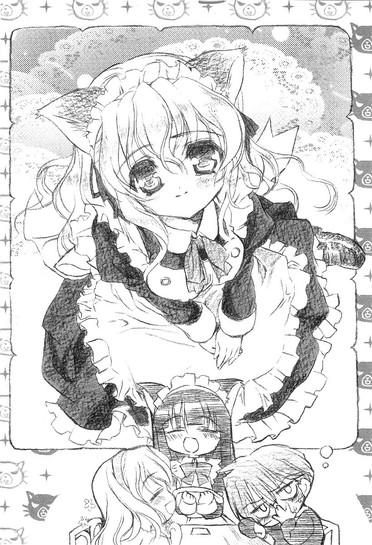
「せっかく来たんですから、メイドさんといっしょに記念撮影です」
「いやちょっと待て──」
俺が止める間もなく、どこからともなくデジカメを取り出した春香は行動に出た。
「すみません、あの......いっしょに写真を撮らせていただいてもよろしいですか？」
テーブルの脇を歩いていたネコミミメイドさんを呼び止めて、そうストレートに切り出した。しかし、
「すみません、当店では写真撮影はご遠慮いただいていますので......」
とネコミミメイドさん。
「え、そうなんですか......？」
「はい。申し訳ありませんが......」
ネコミミメイドさんが頭を下げる。よ、良かった。春香には悪いが、おかげで店内での写真撮影なんて半ば羞恥プレイに近い恥ずかしいマネをしなくて済んだな。
──と安堵するのはまだまだ早かったみたいだった。
「ダメ......ですか。メイドさんと写真、撮りたかったのですが......」
捨てられた仔猫みたいにしょぼんとする春香。そのあまりに落胆した姿を見かねたのか、ネコミミメイドさんはちょっと考える素振りを見せて「う～ん、少しだけお待ちください。もしかしたら何とかなるかもしれないです」と言って店の奥に小走りで消えていった。いや何とかしてくれなくていいです......などと突っ込むヒマもなく、すぐにネコミミメイドさんは戻ってきた。
「お客様、こちらまでお越しください」
「？」
「えーと今、店長に事情を話して撮影の許可をもらってきました。私でよろしければ、どうぞ写真を撮ってもらって結構です。ただし他のお客様の手前、お店の奥でこっそりと撮影ということになっちゃうんですが......」
「ほんとですか？ ええ、それでいいです。ありがとうございますっ」
花が咲くような笑顔で春香がぺこりと頭を下げた。それを見たネコミミメイドさんが何やら恥ずかしそうに頬を染めている。何というか、春香の笑顔は男女関わりなく全ての人のハートをがっちりとキャッチするエンジェルスマイル（必殺）なのである。ううむ、もしかして希少な女性ファンクラブ員を一人増やしちまったんじゃないのか（星屑守護親衛隊。現在の男女比五：一）。
かくしてこの日、『白銀の星屑』とネコミミメイドさんそして俺の三人が仲良く笑っている（俺は引き攣ってたかもしれんが）という、後世まで語り継がれそうな非常にコメントがしづらい写真が生まれたのだった。
さて（満面の）笑みのネコミミメイドさんに見送られ、俺が心の底から疲労してメイド喫茶を出た直後のことだった。また何か新しいモノを見付けた春香が本日五度目の特攻をかけ、いいかげん慣れてきた俺が店の前にあった汚いベンチに腰を下ろしてぼんやりと景色を眺めていた時のことだった。
「あれー、もしかして裕人じゃない？」
人ゴミの中から、あり得ない声が聞こえた。
とりあえず他人のフリをしてあさっての方向を見たのだが、ヤツはそれで諦めてくれるような殊勝な性格をしていなかった。
「ねー裕人だよねー？」
「......」
「裕人ー？」
「......」
「あー、ムシだー。そういうことするんなら僕にも考えがあるよー」
「......」
「ふーん、いいんだねー。あのねー、白城学園二年一組の綾瀬裕人くんは幼稚園の時にバラ組担任の岩倉先生に──」
「......分かった。俺が悪かった、信長」
観念すると、見慣れたというよりはもはや見飽きた顔の幼馴染は「うんうん、それでいいんだよー」と子供みたいに嬉しそうに笑った。
「けど信長......何でお前がここに？」
「ん？ 変なこと訊くねー、僕が休みの日はほとんどここに来てるってこと、裕人が一番よく知ってると思うけどー。僕らの聖地だしねー」
......そういやそうだった。
「ま、今日はちょっと用事があったんだけどねー。あ、正確には昨日からかー。てゆーかこっちにしてみたら裕人がここにいるってことの方が驚きだよー。普段僕が誘っても全然乗ってくれないのにー」
お前の誘いだからイヤなんだよ。こいつとこの街の組み合わせは俺にとって最悪のカップリングである。盆と正月どころか仏滅と葬式がいっぺんにやって来たって感じだ。
まあそれはともかくとして、確かにこいつの言う通りこいつがこの街にいることは驚くべきことじゃない。それはある意味海に魚がいることが当たり前のようなもんだ。真性アキバ系であるこいつが、休日にここにいなくてどこにいるのかって感じである。
問題は、春香と二人で出かけるということに気を取られすぎてそのことをすっかりさっぱりキレイに忘れていた俺の脳ミソの方にある。ちっ、覚えていればそれなりに対策も立てられたものを。
「どしたの裕人ー、顔色悪いよー」
「いやちょっと頭痛が......」
「へー、大変だねー。成分の半分が優しさで出来てる頭痛薬、あげようかー？」
頭痛のタネがそんなことを言いやがる。
「あー、それより信長、お前も色々忙しいんだろ？俺に構わず行ってくれていいぞ」
「えー、そんなことないよー。メインイベントはもう終わったしー、特に急いでやらなきゃいけないこともないしー」
「でも俺といても退屈だろ？ せっかくの休日なんだから好きに羽を伸ばした方が......」
「何か裕人、僕にどっか行ってほしいみたいだねー」
「い、いやそんなこと......」
めちゃくちゃあるんだがな。少なくとも春香が戻ってくる前に消えてくれないと、色々と厄介なことになるのはもう明白である。火炎を見るよりも明らかである。
「ふーん......ま、何でもいいけどさー。分かったよー。もう用事は済んだしー、僕は眠いから、大人しく帰って寝ることにするー」
本当に眠そうな顔でカバみたいに大きな欠伸をして信長が伸びをした。ムダにタフなこいつにしては珍しい。
「昨日からちょっとしたイベントがあってねー。並びっぱなしでほとんど寝てないんだよー。でもおかげで目的のブツは無事ゲット出来たからいいんだけどねー。あははー」
何かこいつはこいつで色々と大変みたいだな。
「じゃーねー裕人、また明日学校でー」
右手に持った紙袋をぶんぶんと振りながら、信長は駅へと歩いていった。
４
そして何だかんだで時間は過ぎてゆき。
いよいよ（春香にとって）本日のメインイベントである、携帯ゲーム機購入の時間が近づいてきた。
「時刻は現在午後四時四十八分......いよいよメインイベントです」
ここまで順調にイベントをこなしてきて上機嫌の春香の後を付いて、最終目的地である電気屋へと向かう。ちなみに俺の両手には二つの紙袋。本日の（春香の）入手物である。中身はほとんどがあちこちでもらった無料配布の冊子やカタログ、ポスター等で、その他にもマンガ（『イノセント・スマイル』今月号やら）に小説などが少々。量はそんなに多くないが、紙モノが多いためけっこう重い。
「裕人さん......だいじょうぶですか？ あの、やっぱり私、半分持ちます」
「いや、平気」
気遣ってくれるのは嬉しいが、荷物持ちくらいしないとほんとに何しに来たんだか分からんからな。
「でも......」
「ほんとに大丈夫だって。重い荷物を持つのは昔から慣れっこだし」
小学生の頃からルコやら由香里さんやらに時給五十円で（ほとんど強制的に）荷物持ちをやらされてたからな。真夏のあっつい日に俺がクソ重い荷物にひーひー言ってる横でヤツらは楽しそうにソフトクリームを舐めてたっけ。......いや、今になって冷静に考えてみると、それって児童虐待とかそういうのじゃないのか、おい。
自らの被虐の思い出を振り返り少し鬱になった俺を、春香が心配そうに覗き込んできた。
「何か顔色が悪いような気がするのですが......あ、あの、やっぱり荷物、重いんじゃないですか？」
「いや......ちょっと過酷な過去を思い出して」
「過酷な......ですか？」
「ちなみにシャレじゃないぞ」
「？」
春香の頭の上にでっかいハテナマークが浮かぶ。
「あー、何でもない。こっちのこと。それよりさっさと行こう。せっかくここまで来たのに、売り切れでもしてたら悲惨だからな」
と、荷物を勢いよく持ち上げ春香の前に立って歩き出した俺だが、
「裕人さ～ん」
すぐに春香に呼び止められた。
「道、そっちじゃないですよ？」
「......」
そういえば、俺は行く先がどこだか正確には分かってなかったんだっけ。
「こっちです」
「......はい」
うなずいて、春香の後に続く。
しかしあれだ。
まさかこの時何気なく言った言葉がまさか現実のものになろうとは、全く想像もつかなかったね。
「......売り切れ？」
「はい。真に申し訳ございませんが......」
メガネをかけたいかつい顔の店員さんが深々と頭を下げる。
現在俺たちがいるのは、某大型電気店３Ｆのゲームコーナーである。ぴったりお買い物のしおり通りの時間にここに辿り着いた俺たちを待っていたのは、『ポータブル・トイズ・アドバンス』限定版シルバーモデルの空き箱の上に貼られた〝売り切れ〟の文字だった。
「限定版のシルバーモデルは大変な人気でございまして、予約分で七割方が販売済みで、残った三割も午前中に完売してしまっております」
それも大変な混雑で、開店前もしくは前日から並んでいないと購入はまずムリだったでしょう、とフォローだか何だかよく分からんことを付け加えた。
「どうにかして、手に入りませんか？」
「当店の系列店にも在庫はございませんし、他店に行かれたとしてもこの時間ではもうムリではないかと──」
俺の質問に丁寧に答えてくれる店員さん。マウンテンゴリラみたいな顔の割に実はけっこういい人かもしれない。
まあつまり話を総合すると。
「見込みが甘かった......ってことか」
本気でその限定シルバーモデルとやらが欲しかったら、開店前──それこそ早朝くらい──から並ぶくらいの覚悟が必要だったってことだろう。午後五時にのんびりと来店なんてそれこそ問題外だ。
「......」
隣を見ると、魂が抜けかけて頭の上にふわふわと浮いているのが見えそうなほど愕然とした顔の春香が立っていた。
完全に、茫然自失って顔だった。
「あー、春香」
普段はほとんど完全無欠なのに、ここ一番の肝心なところが抜けてるのは春香の特性だが、そこまでアレな顔をされると、何て声をかけていいんだか分からなくなってしまう。
「まあ今回は、運が悪かったってことで」
「......」
「春香？」
「......え？ あ、はい」
虚ろな瞳で何とか返してくる春香。目が完全に死んでる。こりゃ......相当のダメージみたいだな。
「とりあえず出よう。これ以上ここにいてもしょうがないし」
むしろいたたまれない気分になるだろう。
「......はい。そうですね」
力のない声でそう答えて、春香はエスカレーターのある方へと歩き出そうとした。その身体が途中でふらりと揺れる、
「春香？」
「あ、あれ？」
俺が声をかけるのと、春香の身体がそのまま床に向かってゆっくりと傾いていくのとはほとんど同時だった。
「！」
床に着く寸前に何とか春香の身体を受け止めることに成功する。うわ、腰細いな。おまけにいい匂い......ってそんな不埒なことを考えてる場合じゃないだろ！
「大丈夫か、春香！」
俺の腕の中で、春香はまぶしそうに目を細めた。
「は、はい。何だか少しふらっとして......」
貧血か何かだろうか。確かにただでさえ白い春香の顔が、今はさらに紙のように白くなっている。どうする......ここは店の人に助けを求めるかあるいは救急車でも呼ぶか──
「あの、裕人さん。私、平気です。これくらいなら少し休めば楽になると思います」
俺の考えていることが分かったのか、春香が力なく首を振った。
「でもな......」
「お願いします。大事にして裕人さんに迷惑をかけたくないんです」
......仕方ない。ここは春香の意思を尊重しよう。
「......分かった。じゃあとりあえず店を出て、どこか休める場所に行くぞ。──ちょっとガマンしてくれ」
「え？ ゆ、裕人さん!?」
目をシロクロさせる春香を抱き上げる。何を勘違いしたのか周囲から口笛やら歓声やらが上がったがムシして、俺はダッシュで店を出た。
......しかしお姫様抱っこなんて、するのもされるのも（されたくないが）生まれて初めの経験だな。
休めそうな場所を探して、着いた先は小さな公園だった。
「つ、疲れた......」
さすがに人一人抱きかかえての全力疾走は身体に堪える。いや春香は全然重くなく、むしろ羽毛みたいに軽かったのだが、それでも帰宅部で万年運動不足の身には少々辛いものがあった。俺ももうトシだな......。今度通販のアレでも購入することを本気で検討した方がいいかもしれん。ちなみにどうでもいいが、アレとは深夜に外人さんがさわやかな笑顔で宣伝していた怪しげなルームランナーの出来損いのような一品──「ＨＥＹ、ナンシー！今日はいいものがあるんだ！」「わあ！何かしら、ビル！」みたいなくだりで始まるアレである。確か分割払い可で税込み一万二千八百円也だったか。......いや、ほんとにどうでもいい話だな。
「よいしょっと」
抱えて走っている最中に眠ってしまったのか、眠り姫よろしく穏やかな寝息を立てる春香をベンチに寝かせて、俺は一息吐いた。
──それにしても倒れるなんてな。
まあ、あそこまで楽しみにしていたゲーム機購入である。それだけに失敗した反動はものすごいのかもしれんが......
ベンチの上で、規則正しく胸を上下させている春香を見る。
何にせよあと少し待ってみて目を覚ます様子がないようなら、本気で救急車を呼ぶこととかも考えた方がいいかもしれん。いくら大事にしたくないからって、春香の身体の方が大切だ。
さて救急車を呼ぶとしたら携帯で呼ぶべきか、それとも今ではもう化石並みにすっかり少なくなってしまった公衆電話を探してそっちで呼ぶべきか迷いながら、もう一度春香の方に目を遣ると──
「あっ......」
いつの間に起きていたのか。
こっちに顔を向けていた春香とぴたりと目が合った。それはもう、これ以上ないってくらいのばっちりのタイミングだった。
「......」
「......」
......何か、気まずい。
「あ、身体はもう大丈夫なのか？」
「は、はい」
慌てたように春香がうなずく。
「おかげさまでだいぶ落ち着きました。あの、昨晩はあまり眠れなかったので、おそらくはそのせいだと思うのですが」
「眠れなかった？」
「え、その、はい......今日のお買い物が楽しみでわくわくして、遠足の前日みたいに目が冴えてしまって──」
「そ、そうか」
「......」
「......」
沈黙。
目が合ったままの状態で、俺も春香も石像のように固まってしまう。
視線を外してしまえばいいだけの話なんだろうが、どうしてかそれが出来ないんだよ。近距離にある春香の整った顔。汗でほんのりと濡れた髪、澄んだ瞳、薄らと赤く染まった頬、かわいらしい桜色の唇。それらから目が離せない。なぜか春香もこっちをじっと見つめたまま全然動かないし。
心臓がどくんどくんとやかましく動く。ノドがやたらと渇くし、何やら少し息苦しいような気もする。まさか、まさかこれって......心筋梗塞？......って俺にそんな持病（成人病）はねえ！身体が健康なことは（体力は六十歳のおじいちゃんレベルだが）、給食の肉ジャガに入っている肉の量並みに数少ない俺の長所の一つなのだ。
けど......だとしたらこれは一体何なんだ？
動悸はいまだにちっとも収まらず、それどころか壊れたエンジンのようにますますその勢いを増していく。もうほとんどオーバーヒート寸前である。
このままこの状態があと十秒も続いたら死ぬんじゃないかと思われたその時、突然ポケットから鳴り響いた不気味な音によって空気が動いた。
「......あ」
金縛りが解ける。
〝ワルキューレの騎行〟
映画『地獄の黙示録』に使われた、ワーグナー作曲の仰々しい音楽である。着信じゃなくてメールのようだが......この着信音ってことは、もう該当者は一人しかいないんだよな。
「ルコ......」
予想通り、携帯の液晶画面には我が姉上様からの簡潔なことこの上ない文面が表示されていた。
『今日の夕食はカレーが食べたい。材料買って、七時までには戻ってこい』
......まあ、二十三にもなって好物がカレーなのはどうだろうだとか、料理はおろか洗濯掃除の全てを弟に任せっきりなのは女として姉として何かが間違ってるだろだとか、いきなりメールしてきて七時までに帰れなんて少しはこっちの都合も考えろだとか、言いたいことはそれこそ山ほどあるんだが......今回ばかりはこのタイミングにスズメの涙くらいは感謝してやってもいいかもしれん。
「メ、メールですか？」
「あ──ああ、姉貴から」
なぜなら、そのおかげで辺りを覆っていた妙な雰囲気が少しだけ解消されたから。
「お姉さんがいるんですか？」
「あ、あれ。言ってなかったっけ？ 七つ年上なんだけど......」
「そ、そうなんですか」
とはいえそれは完全に消え去ってくれたわけではない。
おかしな沈黙だけはなくなってくれたが、春香は郵便ポストみたいに頬を赤らめたままだし、俺も俺で油断すると妙な行動をとりそうになる。......ほんとに何だろね、これ。
とにかく、ここは少しインターバルを取らなきゃマズイ。
「ま、まあそういうわけなんだが。それより......あ、そうだ。春香、ノド渇いたろ？何か飲み物でも買ってくるから、そこに座っててくれ」
「あ、ええ。あの......」
「すぐ戻ってくるから」
何か言いたげな春香をベンチに座らせて、俺はその場から駆け足で離れた。うう、だってあのままあそこにいたらヘンな気分になりそうだったんだよ。
近くにある自販機でコーヒーと紅茶を買う。そのついでに息を大きく吐いて深呼吸。落ち着け、俺。何だか知らんが鎮まれ、心臓。そのまま五回ほど息を吸ったり吐いたりを繰り返すと（客観的にはかなり怪しい人物だが）、ようやく胸の動悸が収まってくれた。ふう、これでとりあえずは一安心だ。あまり待たせるのも春香に悪いのでさっさと戻らんと。
再び駆け足で春香のところへと戻る。
「ほい、紅茶で良かったよな？」
「は、はい。ありがとうございます。私、紅茶大好きなんです」
黄色いレモンティーの缶を渡すと、嬉しげに春香は微笑み、こくりと口をつけた。
「何か......新鮮な味。こういうのも......美味しいかも」
「新鮮？」
別にどこにでも売ってる汎用レモンティーだと思うんだが。
「私、缶に入っている紅茶を飲むのって、初めてなんです」
......ナルホド。そういえば学園でもブリック（パック入りジュース）とかを飲む姿を見たことがない。いつも専用の水筒とティーカップ（ウエッジウッド製）を持参してるし。
こくこくとレモンティーを飲む春香。その隣で俺もコーヒーをちびちびと口にする。頭上では、山で七つの子が待っているのか真っ黒なカラスが一羽、カーカーと切なげに鳴いていた。
「あの......さっきはすみませんでした」
黄昏の中、春香がぽつりとつぶやいた。
「あんなに大勢の人の前で倒れてしまって......裕人さんに、とってもご迷惑をかけてしまいました」
「ん、あー、いや」
まあ確かに倒れた春香をお姫様抱っこして運ぶのは少々周囲の視線が痛かったが、それは春香が悪いわけではない。それにちょっとした役得もあったし。
「......ほんとにすみませんでした。今日はムリを言って、せっかく裕人さんにこんなところまで付き合ってもらったのに」
春香がうつむく。
「......私、ほんとにダメですね。おまけに私がぼやぼやしていたせいで『ぽーたぶる・といず・あどばんす』も売り切れちゃうし......。目的も果たせないうえに裕人さんに迷惑までかけて......もうダメダメです。『ダメっ娘メグちゃん』くらいにダメダメです。こんなことなら来ない方が良かったって、裕人さんも思ってますよね......」
缶をきゅっと握り締めて、そう息を吐く春香。うーん、テンションが地の底まで下がってる感じだ。落ち込む気持ちは分かるんだが......そこまで自分を卑下せんでもいいだろ。ていうかメグちゃんってだれだよ。
それに春香。お前の言ってることには一つだけ大きな間違いがあるぞ。
「待った。確かに限定モデルが買えなかったのは春香のミスかもしれんし、ちょっとばかり困ったのも事実だ。でもな......別に俺はムリして付いてきたわけじゃない。俺は春香と来たかったから来たんだ。そこだけは聞き捨てならない」
「え......」
「それに何だかんだいっても......今日は楽しかった。色々と俺の知らない新しい世界（ネコミミメイドとかネコミミメイドとかネコミミメイドとか）も見られた。だから来ない方が良かったなんてこれっぽっちも思ってないし、むしろ春香と来られて良かったと思ってるぞ」
これは本音だ。
「裕人さん......」
春香が、くしゃっと顔を歪めた。
「う......ぐすっ、あ、ありがとうございます。わ、私も、今日は楽しかったです。だ、だれかと買い物に行くなんて初めてで......本当に楽しかったんです。でも、でも楽しかったからこそ肝心の『ぽーたぶる・といず・あどばんす』が買えなかったのが、最後の最後にこんな風になっちゃったのが悔しくて、申し訳なくて、それでそれで......」
「あー、泣くな」
「はひ......」
とは言いつつも春香は泣いていた。マジ泣きだった。ポケットからハンカチを出そうとして......ハンカチなんて上品なものは持ってきてなかったことに気付いて、街でもらったポケットティッシュ（配布元：最近社長が逮捕された某有名消費者金融）を差し出した。
「ぐしゅ......すみません」
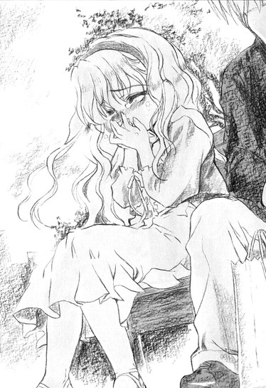
涙を拭う。春香が使うと大量頒布用の安物ティッシュさえもシルク質感の高級ティッシュに見えるから不思議だ。
それから春香が泣き止むまで十分ほど要した。
「そろそろ帰るか」
「......はい。そうですね」
すっかり泣き止んだ春香が、笑顔でベンチから立ち上がる。
「でも......まだちょっとだけ残念です、『ぽーたぶる・といず・あどばんす』」
「まあ、また今度の休みにでも探してみるか。もしかしたらどっかで売れ残りとかがあるかもしれないしな」
俺が言うと、春香はキツネに両頬をつままれて左右に力いっぱい伸ばされたみたいな顔をした。
「い、いいんですか？」
「ああ。言ったろ？ 俺も今日は楽しかったって。だから春香とまた出かけられるんなら、望むところだ」
「う、嬉しいです！」
スキップをしながら前に出る春香。その先には──
「春香、前！」
「え？」
遅かった。
ガンッ、と鈍い音。
「......痛いです」
──公園の外灯があった。そりゃ痛いだろうよ。相変わらずドジというか抜けてるというか......。でもそんな春香を見ていると頬が自然と緩んできてしまう。
「......裕人さん、人の不幸を笑うのはヒドイと思います」
「え、笑ってないぞ」
「わ、笑ってますよ！ 思いっきり笑ってます」
ぽかぽかとゲンコツで俺の胸を叩く春香。いや全然痛くないんだけどな、これが。
「あー、分かった分かった、俺が悪かった」
「......誠意が感じられません」
「いや誠意って言われても」
どうすりゃいいんだか。助けを求めるべく周りを見渡すと、視界の隅に何やら直方体の物体が映った。アレって......お、そうだ。
「だったら最後にもう一回アレやってくか？ 俺のオゴリで」
公園の外を指差す。そこにあったのは昼間に春香がやっていたガチャポン。ここってあの店の裏だったんだな。
それまでぷ～っと頬を膨らませていた春香の顔が、一瞬でぱあっと輝いた。
「ほんとですか？ やったあ！」
百円玉を渡し、春香がそれを硬貨投入口に押し込みレバーを回し、ガチャポンっと丸い物体が転がり出て来る。透明のプラスチックケースに包まれたその中身を見て、春香が叫んだ。
「こ、これって......〝はにトラポーズ〟です！」
......は？ 何？ 今のって日本語？
「『はにかみトライアングル』のヒロインで『ドジっ娘のアキちゃん』が得意とする決めポーズです。ほら、かわいいでしょ？」
春香の手の平の上では、蒼色の髪をした女の子がスカートの裾を指でちょこんと摘んでぺこりと頭を下げている。なるほど、略して〝はにトラ〟ってわけか。......にしてもこのポーズ、どっかで見たことねえか？
「私、これ宝物にしますね」
嬉しそうにフィギュアを胸に抱いて、春香がにっこりと笑った。
「......これを？」
このワケの分からんポーズをしたやつをか？これならあのピアノを弾いてるフィギュアの方が数段マシのような気がするんだが。
だけど春香は静かに首を横に振り、
「このポーズ、とってもかわいいんでお気に入りなんです。それに──」
ちょっとだけ頬を染めて、
「それに......裕人さんが買ってくれたものです。それだけで、私にとっては大事な大事な宝物です」
そんなことを言ってくれた。
......まいったな。
真剣に照れた顔してそんなことを言われるとこっちとしても何て答えればいいのやら。てかそれ以前に、顔が火照ってまともに春香の方を見られやしない。
夕方の涼しい風が頬に当たる。その心地よい涼気で顔を冷やしながらしばし（三分ほど）熟考して、俺はようやく何とか返事を捻り出すことに成功した。
「......大事にしてやってください」
......ま、それが気の利いた返事であったかどうかはともかくとして。
こうして、俺と春香の初めての買い物は終わったのだった。
ちなみに後日信長に聞いた話であるが、例の妙なポーズをしたフィギュアはレア中のレアモノで、全国でもいまだ五十体程度しか確認されていない天然記念物みたいな代物であるとか。......世の中って分からん。
第三話
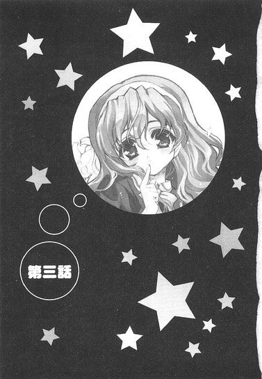
０
六月に入り、梅雨真っ只中だというのに全然雨が降らないのはいいんだが、代わりに一足早く夏を迎えたような蒸し暑い日々が来る日も来る日も延々と続き、いっそオーストラリアにでも移住してコアラやカンガルーと戯れるムツゴロウさんもどきな毎日でも送ろうかなどと考えてしまうくらいにほどよく脳が腐ってきたある日のことである。
放課後、俺はせっせと音楽準備室の掃除をしていた。
床にばらばらと散らばっている資料の数々を、系統別にまとめ直して本棚へと仕舞う。部屋の片隅でいくつも折り重なって、捨てられた自転車の成れの果てみたいになっている指揮台を起こし、その下敷きになっているスピーカーを引っ張り出す。事務机の上にゴミのように積み重なっていた楽譜を引き出すと、途端にホコリが粉雪のように辺りに舞った。
「ごほっ、げほげほ......」
音楽準備室は荒廃していた。
妻に三行半を叩きつけられて出て行かれた、甲斐性なしの男やもめの自宅のように荒みきっていた。
「ひでぇ......」
思わずそんな言葉が口をついて出る。
ある程度の惨状は予想していたが、まさかこれほどとは思わなかった。どうやら俺はあの人のポテンシャルをまだまだみくびっていたらしい。
片付けても片付けても片付かない音楽準備室（最悪）を見て、深々とため息を吐く。
さて、何だって俺がこんなことをやっているのかというと、これもひとえにこの部屋の主である音楽教師にしてうちのクラスの副担任（片付けられない女）が原因だったりするのである。
今から遡ること三時間前の会話。
「ねえ裕く～ん、今日ってヒマかな～？」
ホームルームも終わり、帰り支度をしていた俺のところにやって来た音楽教師は、ネコがアゴの下を撫でられたときのような甘い声でそうささやいた。
「全然ヒマじゃありません。まったくもって、これ以上ないくらい完璧に、予定が入りまくってます」
「実は、裕くんにお願いがあるのよね～」
「イヤです」
「聞いてくれたら、おねいさん、後でイイコト（はあと）してあげたりするんだけどな～」
「結構です」
「松コースと竹コースと梅コースがあるんだけど、どれがいい？」
「......俺、帰りますんで」
相変わらず人の話を全く聞かないアホな人は放っておいて帰ろうとすると、
「ちょ、ちょっと待ってよ」
がっちりと腕を掴まれた。ちっ、逃亡失敗。
「......何ですか？」
「だから、お願いがあるって言ってるじゃない」
「だから、俺もイヤだって言ってるじゃないですか」
この人の『お願い』にはロクなものがない。経験上、それはもう分かりすぎるくらいに分かりきっているのだ。
「そんなこと言わないで、聞くだけでも聞いてよ、ねっ？」
とはいえ、聞くだけは聞かないと帰してくれなさそうな勢いである。仕方なく、嫌々ながらも俺はうなずいた。
「......まあ、聞くだけなら」
「うんうん、裕くんのそういうところ、おねいさん大好きよ」
ぎゅっとその豊満な胸に抱きしめられる。うう。頬に触れた柔らかい感触と甘い匂いに思わずくらりとくるが、ここで負けては由香里さんの思うツボだ。
「で、何なんですか？」
尋ねると、由香里さんは神妙な顔をして語り始めた。
「実はね～、今朝、学年主任の先生から直々のお達しがあったのよ～」
「何て？」
「今日中に、音楽準備室を片付けなさいって」
「......さようなら」
くるりと踵を返そうとした俺の腕を由香里さんががっちりと掴む。
「ま、待ってってば。何で最後まで聞かないうちに帰ろうとするのよ～」
「聞かなくても分かりますよ。どうせ俺に片付けを手伝えって言うんでしょう。そんなの一人でやってくださいよ。この前だってトイレ掃除に付き合ったばっかりなんですから」
「あ、惜しい。近いけど違う」
「違う？」
絶対当たりだと思ったんだが。さすがにこの人もそう毎回毎回、他人に迷惑をかけるようなことばかりをやるわけではないのか。
と、この人に限ってそんなことを考えたのは甘かった。
「うん、違う。あのね、手伝ってほしいっていうか、私の代わりに一人で掃除をやっといてほしいのよね～」
「......」
この入、何考えて生きてるんだろう。
図々しいにも程がある。
「......いっぺん死んでください」
吐き捨てるようにそう言ってその場から立ち去ろうとした俺の身体に、由香里さんがすがりっいてきた。
「だ、だから待ってってば。私だって本当は手伝いたいと思ってるんだけど、今日はどうしても外せない大事な大事な用事があるのよ」
「......どんな用事ですか？」
「『ＳｅｒａｐＨ』のライブ（ぼそっ）」
「......は？」
空耳だと思いたかった。
「だから～、今日はこれから『ＳｅｒｅｐＨ』のライブがあるのよ。半年前に予約してやっとのことで取ったプラチナチケットなの～。これに行けなかったら私、欲求不満で死んじゃうかもしれない」
「それ......本気で言ってるんですか？」
「もちろん。本気よ」
授業中にも見せたことのない真面目な顔で言い切る由香里さん。
ちなみに『ＳｅｒｅｐＨ』とは由香里さんお気に入りのビジュアル系バンドの名前である。
「お願い裕くん～、助けると思って私の代わりに掃除して。してくれたら、お礼に今度いっぱいイイコト（はあと）してあげるから～。裕くんの他にこんなこと頼める人いないの。ね、一生のお願い～」
ほとんど押し倒さんばかりの勢いで俺の身体にぴったりと密着し、泣きそうな顔でそう懇願してくる。
そうまでされると、自業自得とはいえさすがに無下に断るのにも気が引ける。はあ......まあしょうがないか。今日のところは放課後もヒマなことだし、ここは一つ貸しを作っておくことにしよう。
「......分かりましたよ。分かりましたから胸を押し付けないでください。音楽準備室をキレイにしておけばいいんですね？」
「えっ、やってくれるの？」
「......まあ、いちおう」
そう答えると、ビジュアル系大好きの二十三歳女教師は身体いっぱいに喜びを表現した。
「ありがとう～。だから裕くんって好き♪」
「......それはどうも」
と、そういうことである。
以上のような経緯でこのゴミタメの掃除を引き受けたわけだが、今となってはその選択を激しく後悔していた。
「ひどすぎる......」
部屋の主の限りなく大雑把な性格は、僅か二ヶ月でそれまで小ぎれいだった音楽準備室を混沌あふれる夢の島へと変貌させていた。
半ば鬱になりながら、ホコリまみれになったベートーヴェンの肖像画をハタキではたく。降り積もったホコリの下から出てきたいかめしい顔には、額に大きく『肉』と書かれていた。小学生レベルのイタズラである。......楽聖も草葉の陰で号泣してるぞ、これじゃ。
何だかものすごく疲れた気分で『肉』マジックを落としていると。
ポロン♪
ふいにピアノの音が聴こえたような気がした。
空耳かと思い最初は気にしないことにしたが、しばらくしてどうもそうじゃないらしいことに気付いた。耳を澄ますと確かに旋律が聴こえてくる。重々しく激しくも、どこかもの悲しい旋律。隣の音楽室からみたいだ。
ちらりと壁にかかった時計を見ると、時刻はすでに午後七時近い。部活をやっている生徒ですらもうほとんど下校している時間である。こんな時間にピアノ？
真っ先に頭に浮かんだのは、七不思議の一つ、『ひとりでに鳴る音楽室のピアノ』だった。
──まさか、なあ。
そっと音楽準備室の扉を開き、隣を覗いてみる。ここからだと死角になっていて弾いている人物（であってくれ）の姿はよく見えないが、確かにピアノからは音が発せられているみたいだ。
少し迷ったが、俺は音楽室へと足を踏み出した。足音を忍ばせながらピアノに近づいてみる。人間の演奏者がいてくれることを心から願いながら、鍵盤側を覗き込んだ俺の目に映ったのは──
「......」
春香だった。
黄昏の中、春香が真剣な顔をしてピアノを弾いていた。
一気に力が抜けた。いや、何で春香がここに？
「......」
演奏に集中しているのか、春香は俺の存在に気付いていないみたいだった。ただ一心不乱に鍵盤に指を躍らせている。しなやかで優雅でそれでいて柔らかい動き。ピアノを弾いているというよりも、まるで何かダンスでも踊っているようにも見えるその姿に、俺は思わず見入ってしまった。
時間にして五分くらいだろうか。
「ふう......」
ようやく曲が終わり、春香が息を吐いた。
「お疲れさん」
「えっ？」
俺が拍手をすると、真冬にカブトムシでも見つけたみたいな顔で春香が目を丸くした。
「あ、あれ？ どうして裕人さんがここに？入ってきた時には確かだれも......」
まあ演奏を終えたらいきなりいるはずのない俺が隣にいたんだから、驚くのもムリはない。
俺はざっと事情（準備室の掃除をしていたこと）を説明した。
「あ、そうなのですか。それはとってもお疲れ様でした」
にっこりとねぎらいの言葉をかけてくれる春香。それだけであのゴミ部屋の掃除で蓄積した疲労が癒されていくような気がする。まさに癒しの天使って感じだ。
「それより春香こそ何でこんな時間に？」
むしろそっちの方が謎だろう。春香が音楽室にいること自体は全然おかしくないが、今は時間が時間である。
すると春香は、ちょこんと小首を斜めに傾けて言った。
「それはですね、ええと、話すと少しややこしくなるのですが......」
「聞かせてくれ」
興味ある。
「はい、それでしたら。あのですね、実は私、さっきまで図書室で勉強をしていたんです。世界史の勉強をしていたのですが、そこにシェークスピアについての記述が載っていまして──」
「シェークスピアって、劇作家の？」
「はい。私、大好きなんです。『マクベス』とか『真夏の夜の夢』とか、とっても素敵だと思います」
「そ、そうだな」
曖昧にうなずく。
いやシェークスピアなんて『ロミオとジュリエット』くらいしか知らんし。それもだいたいのあらすじしか。
「けど、それとピアノとどこが結びつくんだ？」
「あ、はい。それはですね、シェークスピアの作の中に『テンペスト』というお話があるのですが、同名のソナタがベートヴェンの作品の中にもあるんです。ピアノソナタ第十七番『テンペスト』。シェークスピアの名前を見ていたら何だか急にそれが弾きたくなって......コンクールも近いことですし、その練習も兼ねて帰る前にちょっとだけ弾いていこうかなって思ったんです」
「な、なるほど」
勉強→世界史→シェークスピア→『テンペスト』→ピアノ、との思考経路を辿ったわけだ。確かになかなかややこしいが、いちおう理解は出来た。
「それにしてもこんな時間まで勉強してたのか......」
放課後すぐからやっていたとして、ざっと三時間半である。俺の一週間の総勉強時間よりも多いかもしれん。
「はい。中間試験も近いですから」
「......中間試験」
その言葉に、一気に現実に引き戻された気がした。
そうだ。今の今まですっかり忘れていたが（というよりも心が考えることから逃げていたのか）、二週間後には地獄の中間試験が待ち構えている。
前期と後期の二期制を採る白城学園では試験の回数自体は年に四回と少ないが、代わりにその成績が悪かった者には鬼のような処遇が用意されていたりするのだ。端的に言えば赤点（三十点未満）を取った者には夏休みのおよそ三分の一を占める補習が義務付けられる。いや三十点以上なら楽勝に聞こえるかもしれんが、あいにく俺の出来の悪いスイカみたいな頭だとそれもかなり危なかったりするんだよ。
「裕人さんも、中間試験の勉強は進んでいますか？」
「いや全然」
何せ今初めて思い出したくらいである。進むどころかスタートすらしていない。
「全然、ですか。でもこれからやる予定はあるんですよね？」
「そりゃあ、まあ。俺、バカだし」
やりたくはないが、やらなきゃ今年の夏はないものと覚悟しなきゃならない。二度とない十七の夏を、狭苦しい教室で山のようなプリントと気温以上にむさ苦しい教師陣（なぜか白城学園は男性教師の独身率が高い）と向かい合って過ごすなんてまっぴらごめんだった。
「けどよく考えたらノートからしてまともに取ってないんだよな......」
普段の授業の七割を睡眠学習にあてている俺のノートの日付は、三日坊主かつ気まぐれな人がつける日記帳のごとく、四月の次は六月だったりするのである。
「......だれか、ノートを写させてくれる人を探さんと」
とはいえこれといったアテがあるわけではなかった。去年までなら信長（なにげに成績優秀）が第一候補だったんだが、今年からやつとは違うクラスになってしまったため、あまり期待は出来ない。かといって同じクラスのやつだと三バカ（名は体を表すの代表格ども）とかしかいないし。
......やばいかもしれんな。冗談抜きで。
そんなかなりテンションの下がった俺を見て、春香は何かを考えこんでいるようだった。口元に指をあてながら、首を斜め四十五度にちょこんと傾けている。
そのままの状態で三十秒。
やがて何かを考えついたのか、俺の顔を見て春香はこうつぶやいた。
「あの裕人さん、でしたら......いっしょに勉強しませんか？」
「え......」
勉強？ 俺と春香が？
「はい。ノートも、私のでよろしければどうぞ写してください。あんまり上手にまとまっていないかもしれませんが......」
いやそれは大丈夫だろう。春香、字は上手だし。
「だけど迷惑じゃ......」
俺と春香じゃ天と地ほどに学力が違う。ゆえに俺にとっては助かるが、春香にとっては何のプラスにもならんだろう。それどころかヘタすりゃマイナスである。
でも春香はふるふると首を振る。
「そんなことないです。お勉強も、一人でやるよりだれかといっしょにやった方が楽しいです」
そういうもんなのか？ 普通は一人の方が集中出来るという話をよく聞くが。しかし春香さえオッケーならばこの申し出はかなりありがたい。
「......ほんとに、いいのか？」
「はい。もちろんです」
春香即答。
「だったら......頼む」
ここはお言葉に甘えておこう。実際、今のままじゃかなりピンチだし。
「で、時間と場所はどうする？ 春香がヒマな時で構わないが......」
「あ、そうですね......」
再び春香がううん、と考え込む。
「それでは、日にちは日曜日でどうでしょうか？時間は一時くらいからで、場所は......えと、私の家でよろしいですよね？」
「ああ、それで大丈夫──」
あまり深く考えずに返事をしようとして。
「......ん？」
その言葉の中に、何かとんでもない単語が含まれていたことに気付いた。今、私の家とか何とか言ったような......
「あの、何か？」
「い、いや......」
たぶん聞き違いだろうな。いくらなんでも春香が俺なんかを家に招待するわけがない。きっとそれを望むあまりに、俺の心が幻聴を作り出したんだろう。うん、そうに違いない。そう納得しかけた俺に、春香はにっこりと笑いながらもう一度繰り返した。
「では日曜日に私の家でいっしょにお勉強です。忘れないでくださいね？」
１
というわけで、なぜだか春香の家でいっしょに試験勉強をすることになったのだが。
日曜日。
俺はいきなり迷子になっていた。
「えと、これがうちまでの地図です。駅からは歩いて十分くらいなので、迷うことはないと思うのですが......」
と、春香から地図を受け取った時点で気付くべきだったのだが、あいにく春香の自宅にご訪問ということで傍から見たらちょっとやばいくらいに浮かれまくっていた俺はそのことを全く失念していた。ようやくそれを思い出したのは最寄り駅に着いて初めて地図を見た時だったのだが......まったくもって後悔先に立たずというやつである。
春香からもらった地図を開く。
そこには、八目ウナギが十五匹ほど集団ヒステリーを起こして狂乱麗舞している図があった。
しかも脇にはパラノイアみたいな目をした（おそらく）小鳥であろう生物が不気味な笑いを浮かべながら「こっちだよ♪」とウナギのハラに尖った棒のようなモノを付き立てている。......これは何だ？新手の心理テストか？
「......」
本気で泣きたくなった。
地図の隅っこに小さく書かれている〝ぷろでゅーすどばい春香〟の美しすぎる文字が今は恨めしい。
しかし......どうしたもんか。
適当に進んでみようにも、最初の交差点ですでにどっちに行きゃいいのかすら分からん（絶望的）。電話して直接道を訊こうにも春香は携帯を持ってないし、乃木坂家の電話番号なんて覚えてない。住所こそまともに記載されているものの、それを見ただけじゃ地元民じゃない俺にはさっぱり分からんし、辺りには交番もないときてる（お手上げ）。
「ダメだこりゃ......」
途方に暮れて、旅に疲れた渡り鳥のごとくぐったりと道端に座り込んでいると、突然背後から声をかけられた。
「どうかしたんですか、おに～さん」
振り返ると、女の子がこっちを覗き込んでいた。中学生くらいの、きらきらとした目の輝きが印象的な子で、かなり整った顔立ちをしている。服装は薄いピンク色のサマーセーターにプリーツスカート。頭の横でちょこんと二つに結んだ髪型がかわいらしい。あと一、二年もすれば間違いなく美少女と呼ばれるレベルだろう。
「さっきからうーうー唸ってるけどお腹でも痛い？霊柩車呼ぶ？」
「いや火葬場へ送ってどうする......」
「あ、こういう場合は救急車か」
女の子が屈託なく笑う。あんま笑うところじゃない気もするんだがな。
「で、ほんとどうする？ 具合悪いんなら人を呼ぶけど？」
ちょっと真剣な顔になった女の子。
「いや別にそういうわけじゃないんだ。ただ道に迷ってただけで──」
と、そこでふと思った。どうも感じからしてこの子は地元の子みたいだ。だとしたらこの地図が分かるんじゃないか。春香の地図も、もしかしたら俺が読み取れないだけで、見る人が見たらちゃんと地図としての役割を果たしているのかもしれない。
一縷の希望を託して地図を見せると、女の子はあからさまにイヤそうな顔をした。
「何これ？ 妖怪画？ 姑獲女とか......」
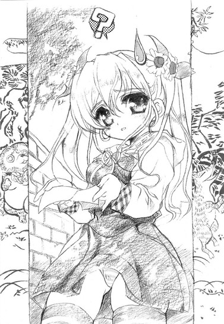
「......」
「百鬼夜行？」
希望は一瞬にして完膚なきまでに叩き潰された。......まあ、分かっちゃいたが。
「......それ、地図らしいんだ。いちおう」
真実を告げると、女の子は飛び上がらんばかりに驚いた。
「......地図って、これが？ ウソ!?」
「いやほんと」
俺としてもあんまり信じたくないんだが、ホントなのである。
「うわ～、どう見てもこれ、妖怪画とか悪魔画とかにしか見えないんだけど──」
女の子が珍しいモノでも見るような目で地図（？）を眺める。その点に関しては俺も全く同意見だ。
「ひょっとしてこれが道のつもりなのかなあ。このヤマタノオロチみたいなの。うわ、こっちにはぬらりひょんみたいなのがいる。あっ、ここには唐傘オバケも」
などと騒いでいた女の子だったが、
「......って、ん？」
その視線がある一点に差し掛かったときに、動きがぴたりと止まった。
「......げ、これってまさか」
そして無言でびりびりと地図を破り捨てた。
「お、おい......」
いや破りたくなる気持ちは痛いほど分かるんだけど、それがなくなると乃木坂家への手がかりが全く完全になくなるんだが。
「えっと、おに～さん。たぶん、あれ見ても永久に目的地に辿り着けないよ？」
「それはそうなんだが......」
しかしあんなもんでもないよりはマシかもしれない。......タダより高いものはないって言葉はこの際気にしないとして。
「あれならない方がマシ。うん、絶対マシ。だから、わたしが新しいの描いたげます。おに～さん、何か描くモノ持ってる？」
女の子は一刀のもとにそう斬り捨て、右の手の平をひらひらと差し出した。よく分からんが、どうも地図を描いてくれるらしいので、素直に持っていたメモ帳とボールペンを差し出す。
「住所はいちおうこれらしいんだが......」
細切れになった地図の、住所が書かれている部分（達筆）を拾って女の子に見せるが、女の子はそれをちらりと見ただけで、すぐに腕を動かし始めた。
「はい。さらさらさら、と」
慣れた手付きでペンを走らせる女の子。早いな。
「出来たよ。はい」
「おお」
そこには、春香が描いたアレとは月とスッポンどころか満月とミドリガメ、比べるのも失礼なくらい見事な地図があった。
「うまいもんだな......」
これならきっとサルでも辿り着ける。
「そんなことないよ～。すっごく簡単な道のりだもん。さっきの妖怪画みたいに、分かり難く描く方が難しいくらいで」
とは言うものの、女の子はまんざらでもないようだった。
「でもとにかく助かった。ほんとにさんきゅー」
「いいっていいって。こんなの感謝されるほどのことじゃないよ。──それに、こっちにも責任があるわけだし......」
「？」
「ん、え、えっと何でもないの。それじゃわたしはもう行くから。またね、おに～さん！」
「あ、ちょっと！」
呼び止める間もなく、女の子は風のように走って行ってしまった。
......一体何だったんだろうな。まあおかげで助かったけど。
２
女の子が描いてくれた地図のおかげで、何とか無事に乃木坂家に辿り着くことが出来た。
出来たんだが......
「何だ、こりゃ......」
それが俺の口から出た最初の言葉だった。
目の前にあるのは巨大な門。視界に収まりきらないほど長く、アルカトラズ刑務所並みに高い塀。その遥か向こうに見えるは中世ヨーロッパの貴族が住むような豪壮な屋敷。庭にはローマの休日に出てきたみたいな噴水なんかもありやがる。
ここが本当に日本なのか、少しばかり疑いたくなるような光景だった。いや乃木坂家が金持ちだってことは知ってたが......これはいくら何でも限度ってもんを超えてるだろ？
だがまだこれで終わりではなかった。
全然終わりではなかった。
さらに我が目を疑いたくなることに、呼び鈴を鳴らした俺を出迎えてくれたのは......何とメイドさんだった。メイドさん。この前アキハバラで亜種（ネコミミ付き）を見たが、まさかこの現代日本家庭に実物が存在していようとはね。もう驚きを通り越して言葉も出ない。
メイドさんは俺を見ると、恭しく頭を下げた。
「綾瀬裕人様ですね？ 春香お嬢様からお話は伺っております。どうぞお入りください」
「は、はあ」
生まれて初めての『様』付けに感動するヒマもなく、アホみたいに広い庭をメイドさんの案内で進んで行く。うわ、何か森みたいなのがあるし。おまけにその脇にはさらさらと小川までもが流れている。もうちょっとした自然公園だな、これ。
「こちらになります」
広い広い庭を抜け、屋敷の中に足を踏み入れる。半ば城みたいな外観の屋敷は、やっぱり中も城みたいだった。てか吹き抜けのホールなんて初めて見たし、豪華なシャンデリアやアンティークの鎧の置物がデフォルトで装備されているなんて、平均的な中流家庭に育った俺からすればほとんど正気の沙汰ではない。
「すげえ......」
というかすごすぎる。
呆気にとられていると、メイドさんがさらりと怖いことを告げてきた。
「私の後を離れないようにしてください。はぐれると大変なことになりますので」
どこの迷宮だよ......。とはいえ確かにこの広さ。方向音痴な俺が迷ったらたぶんえらいことになるな。屋敷内で遭難なんて恥ずかしいことはしたくない。
それからメイドさんの先導で、角を七つ曲がり、やたらと長い廊下を二つ直進し、階段を三つ上り下りしてようやく辿り着いた客間らしきところ（つーか広すぎて客間なんだかホールなんだか分からん）で、やっと春香と会うことが出来た。敷地に入ってからここまでの所要時間二十分......あり得ない。
「あ、裕人さん、いらっしゃいませ」
部屋の中央にでん、と置かれていたアンティークっぽいソファから立ち上がって、白いサマードレス姿の春香が満面の笑みで迎えてくれた。
「葉月さんも、案内ごくろうさまでした」
「いえ、仕事ですので」
そっけなくメイドさんが答える。
「立ち話もなんですから、どうぞくつろいでください」
勧められてソファに腰を下ろす。おお、ふかふかだ。
「よろしければお茶をお淹れいたしますが」
「あ、お願い出来ますか？」
メイドさんの申し出に、春香が答える。
「はい、もちろん。葉はいかがなさいますか？」
「えっと、確かニルギリのファーストフラッシュがありましたよね。それでロイヤルベンガルタイガーを二つお願いします」
「ティーフードはどうしましょう？ マドレーヌとプラムプディング、ビクトリアケーキでしたらすぐにご用意出来ますが」
「う～ん、それじゃプラムプディングで」
「分かりました。では十分ほどお待ちください」
そんなやりとりを交わしてメイドさんが出て行った。いやどうでもいいが出てきた単語の半分くらいが分からんかったんだが......。ロイヤルベンガルタイガーって、モンスターの名前か何かですか？
「少し待っていてくださいね。葉月さんの淹れる紅茶、とっても美味しいんですよ」
......紅茶の名前だった。
紅茶なんてそれこそ缶とかペットボトルに入ってるやつしか飲んだことない俺に、そんなのが分かるはずもない。ていうか、普通分からんだろ。
十分きっかりで、メイドさんは戻ってきた。
「ロイヤルベンガルタイガーと、プラムプディングになります」
俺たちの前にカップとお茶菓子を配し、メイドさんは背筋をぴんと伸ばして春香の後ろに立った。どうもそこが定位置らしい。
そんなメイドさんに、春香が顔を向ける。
「え～と、ちゃんと紹介しておきますね。こちらは桜坂葉月さん。私たちの身の回りのお世話等をやってくださっているメイド長さんです」
メイド『長』ってことは他にもいるんだろうか、メイドさん。
「桜坂葉月と申します。以後お見知りおきを」
そつのない動作でメイドさんがぺこりと頭を下げる。言葉こそ丁寧なものの、その表情はぴくりとも動かない。うーん、春香に対するさっきの反応といい、クール系の人なのかな。美人なんだけど、ちょっと苦手なタイプかもしれん。
と、心の中で考察していると、
「葉月さんは、ぶっきらぼうに見えるけどとっても優しい人なんですよ」
俺の考えてることが分かったのか、春香がこっそりと耳打ちしてきた。
「この間も、夕食の残り物を近所のノラネコに分けてあげていましたし、お休みの日には必ずペットショップを覗いたりしてるんですよ。趣味もヌイグルミ集めで、お部屋にはかわいいヌイグルミがいっぱいあります」
ヌイグルミねえ......。うーむ、この冗談を言ってもぴくりとも反応しないどころか思わず人間やめたくなるような絶対零度の視線を返してきそうな人が、クマやらネコやらのファンシーなヌイグルミを部屋に集めて名前とかを付けてるってのか。悪いけど想像がつかん。
「......春香様、聞こえております」
葉月さんが横からぼそりと抗議する。おや、何かその頬が少し赤い。
「あ～、葉月さん、照れてる」
「........................そんなことは」
めちゃくちゃあるみたいだった。
それからしばらく、メイドさんを交えて三人で話をした。
確かに話してみると、葉月さんは見た目ほどとっつきにくい人じゃないことが分かった。
話しかければ普通に答えてくれるし、ジョークを言えば反応はしてくれる（笑ってはくれなかったが）。ただ感情を強く面に出すことがほとんどないため、何を考えてるんだかが非常に分かりづらいのが難点だが、春香曰く「慣れてくれば微妙な表情の変化が分かりますよ」とのことらしい。うーむ、そういうものなのか？
３
色々とインパクトの強い出来事が多すぎて忘れかけていたが、俺が今日ここ乃木坂邸にやって来たのは二週間後に迫る中間試験へ向けて勉強をするためである。けして乃木坂家のブルジョワっぷりを拝見しに来たわけではない。
お茶を飲み終わった俺たちは、その本来の目的を達成すべく、客間から春香の部屋へと移動していた（ちなみに途中で巨大なバルコニーやらダンスホールやらミニシアターやらを見かけたりしたことについてはもう突っ込む気すら起きん）。
で、その春香の部屋だが......何というか、思ったよりも普通の部屋だった。
いやそりゃあ広さにして三十畳ほどあって部屋の中央に巨大なグランドピアノが鎮座していて天蓋付きのベッドがある部屋を普通と呼んでいいわけがもちろんないんだが、そういう意味ではなく、俺としてはもう少しアキバ系の混沌とした部屋を想像してたんだよな。
「あ、その辺に適当に座っていてください。テーブルを出しますので」
俺にそう言って、春香はさっきからウォークインのクローゼットの中で何やらごそごそとやっている。クローゼットだけでおそらく俺の部屋よりも遥かに広いだろうという事実にはこの際目を瞑っておこう。
高価そうな絨毯の上に座り込んで改めて周りを見てみても、やっぱり普通のお嬢様の部屋って感じだった。少なくとも目に映る場所にアキバ系の片鱗はない。
まあこれはこれでこの上なく『白銀の星屑』らしい部屋のような気もする。信長の部屋みたいにアニメのポスターやフィギュア、おびただしい数のマンガや小説に埋め尽くされた腐界だったらかなりイヤだったかもしれんしな。
そんなことを考えていると春香がテーブルを手に戻って来たので、何気なく訊いてみた。
「この部屋って、ポスターとかないんだな」
「あ、ええ......」
「この前、アキハバラでいくつか貰ってたけど、あれとか貼らないのか？」
あの中には春香お気に入りの『ドジっ娘アキちゃん』やら何やらのポスターもあったはずだ。それにガチャポンで当てたミニフィギュア。春香の性格上、これらのお気に入りのモノは部屋の目立つところに飾っていてもおかしくなさそうなもんだが。
「それは──」
春香が一瞬口ごもる。ん、何かマズイこと訊いたのかな。
「それは、私も飾りたいと思います。かわいいですし、出来ればいつも目の届くところに置いておきたいです。でも......しょうがないんです。だって私がこういう趣味を持っていることは、家族にも秘密なんですから」
「え？」
家族にも？
「私の家は両親、特にお父様がとても厳しくて......そういったアニメのポスターやフィギュアなんかは、それこそ見付かったら即座に捨てられてしまうと思います。教育上良くないって。だから、部屋の目立つところには置けないんです」
うつむく春香。
なんつーか......そりゃあ大変だな。ふむ、春香にどこか一般常識が欠けている部分がある理由が少し分かった気がした。この部屋、やたら広い割には娯楽に関する物がやけに少ないのもそういうわけか。テレビもないしパソコンもないしな。携帯を持ってないのも、たぶんその延長なんだろう。
「そういえば、家の人っていないのか？」
ふと思った。
もしも件のお父様とかがいらっしゃるのだとしたら、早めに挨拶しといた方がいいような気がする。俺なんかどこからどう見ても、手塩にかけて育てた愛娘に取り付く悪い虫（エキノコックスとか）にしか見えんだろうし。
「今日は私しかいないです。お父様はアメリカの〝ぺんたごん〟というところに出張していますし、お母様も経営している料理学校の講義で夜中まで帰ってきません。お祖父様も北海道にクマ狩りに出かけてしまっていて朝からいませんし──」
「......」
えっと。
あなたのお父上は何者ですか？ ......ヘタしたら消されるんじゃないか、俺。
そんな俺の気持ちを分かっているのかいないのか、春香はどこまでも平和そうな顔でにっこりと笑った。
「というわけですので、気を遣わないでご自分の家にいるようにリラックスしてください。さ、それではそろそろ勉強を始めましょうね。初日は英語のリーダーと世界史なので、英語からやりましょう」
さて、さすがに入学以来学年トップを維持しているだけのことはあり、春香はめちゃくちゃ頭が良かった。どのくらいすごいのかというと、自分は淡々と応用問題集を解きながら、隣で学園指定の基礎問題集をやってる俺の間違いを指摘しかつそれに適切な解説を加えることが出来るくらいである。
「あ、ここの不定詞はですね、未来というか運命をあらわす特殊な用法なんです。訳すと、『彼は都会に行ったきり、二度と故郷に戻ることはなかった』になりますね」
「それはつまり、彼は都会に出て一山当ててやるぜと勢い込んで上京したところ世間の風当たりは思ったよりも強くて彼なりにがんばってはみたものの定職も得られずコンビニのバイトで糊口をしのぐ毎日で最後には契約更新で賃貸アパートを追い出されて故郷に錦を飾るなんて夢のまた夢のまま公園で一人孤独に野垂れ死んだ、ってことか？」
「え、ええ、まあそうかもしれませんが......」
「ふむふむ」
「これは不定詞と動名詞の区別の問題です。前者が『タバコを吸うために立ち止まった』になるのに対して、後者は『タバコを吸うことを止めた』という意味になります」
「つまり前者が道端だろうとどこであろうとタバコを吸わずにいられず条例違反で罰金を食らいまくった末期のニコチン中毒者で、後者がそれまでは熱烈な愛煙家であったにもかかわらず子供が産まれた途端に一転してタバコを完全禁止、うちの子の前でタバコを吸うヤツはぶっ殺してやる、的な考えに変わった子煩悩な禁煙者ってこと？」
「......ま、まあいちおう。中毒かどうかは知りませんが」
「なるほどなるほど」
てな感じに。何か俺の果てしないバカさ加減がうかがえるやりとりではあるが。
ほとんど俺が春香に教えてもらうカタチではあったが、それでも勉強は順調に進んだといえるだろう。てか解説中も春香の右手は自分の問題を解き続けてたし。
「えと、ここはですね......」
そして本日何回目かになろうという春香先生の解説が始まろうとして、ふとその左手がテーブルの上にある俺の消しゴムに触れた。消しゴムはその反動でおむすびのごとくころころころりと絨毯の上に転がり落ちた。
「あ、すみません」
春香が身を乗り出そうとする。でも俺からの方が位置が近い。
「いいよ、俺が拾うから──」
「いえ、私が──」
そう言って俺たちが手を伸ばしたのは、奇跡的なくらいに全く同時だった。
「......」
「......」
指先に柔らかい感触。触れているのは、断じて消しゴムなんかではない。
心臓が、どくりと動く。
「あっ、あの......」
「あ、わ、悪い」
慌てて手を引っ込めるが、胸の動悸は消えてはくれなかった。どくんどくんどくん。クスリでも盛られたみたいに不自然に心臓が酸素を求めている。かなりオーバーヒート気味。サウナにでも入ってのぼせた時みたいに頬が熱い。
何だ？ 何か......ヘンな気分だ。見れば隣で春香まで何やらぽーっとした顔で頬を真っ赤に染めている。まるであのアキハバラの公園で感じたような妙な──色にすればピンク色の──もやもやとした雰囲気が部屋の中を包んでいるみたいな......
目の前には潤んだ春香の瞳。
よく考えてみれば、今この部屋には俺と春香の二人しかいない。二人しかいないということは他にはだれもいないってことであり、二人きりってことだ（当たり前だ）。閉じられた空間。年若い男女。二人きり。これらのキーワードから連想される言葉は......密室殺人？って違うだろ！そうじゃなくて、もっとこう初々しいというか、穏当というか健全な言葉は思い付かんのかね。
などと自分の想像力の偏りを嘆いている場合じゃない。
とにかく、今はこの不可思議なピンク色に染まったどこかインモラルな空間からいかに脱するかを考えるのが先決である。このままじゃ俺の理性が周回軌道を外れた人工衛星のごとく宇宙の彼方にすっ飛んでいくのも時間の問題だ。......よし、ここは心を落ち着かせるために素数でも数えることにしよう。えっと最初は０から......あれ、０って素数だったっけ？それとも１から？あれ？
──いきなり詰まってしまった。
我ながら、数学二（十段階中）の成績は伊達ではない。何せ数学の教師に、「頼むからお前だけは、三年になっても理系コースには来ないでくれ。な？」と泣き顔で懇願されたくらいである。そう、言わば折り紙付きだ。バカであることの。
......自分で言っていてアレだが、何だかものすごく悲しくなってきた。
やるせない気分になり春香の顔に視線を戻すと、春香もじっとこっちを見ていた。
目が合った。
春香がぼんって音がしそうなくらいに顔を赤くする。そのまま落ち着かなく視線をあちこちに彷徨わせて、そして何かの覚悟を決めたかのようにゆっくりと目を閉じた。......いや春香さん、何でそこで目を閉じますか？
そのまま十秒が経過。
うーむ、さすがにこのまま放置ってのはかえって春香に失礼なのか？こういった青春な場面に遭遇したことがいまだかつて一度もない俺には、さっぱり分からん。
もうこうなったら勢いに任せて行くところまで（どこだよ）行ってしまおうか、それとも俺も目を瞑って寝たフリでもしようかと両極端に悩み（言い訳になるが、この時の俺はまともな精神状態じゃなかったんだよ）、結局前者を選択しようとしたところに、
「お二人で良い雰囲気のところを申し訳ありませんが」
突然、背後から声がした。
「!?」
振り返ると......そこにメイドさんがいた。
「うわあっ！」「きゃあ！」
「......私の顔はそんなに驚かれるような造作をしておりますでしょうか？」
少しばかり心外そうな顔でメイドさんが答える。そうじゃなくていつからここに!?
「五度ほどノックをしましたが、返事がないようなので失礼とは思いながら勝手に入らせていただきました」
いや......いくら春香に気を取られてたとはいえ全くもって気配を感じなかったんですが。メイドさん恐るべし。
「は、葉月さん、何のご用でしょうか？」
春香が慌てた声で尋ねる。
「はい。実は先ほど美夏様がお戻りになられたところ、春香様にお話があると仰っておられるのですがいかがなさいましょうか？」
「え、美夏が？」
「はい」
メイドさん、こくりとうなずく。
「あの子、今日はお友達のお家へ遊びに行くって言ってませんでしたか？どうしたんでしょう」
「詳しくは分かりませんが......『面白そうだから、早めに切り上げて帰ってきちゃった♪』と仰ってました」
「面白そう......ですか？」
春香が首を捻る、
「あの春香、美夏って？」
「え？ ああ、裕人さんにはまだ言ってませんでしたね。私の妹です」
「妹？ 春香、姉妹いたんだ」
「はい。中学二年生なのですが」
そういえば前に信長（ストーカー）がそんなことを言ってたな。
「すみません、そういうことですので私、ちょっと美夏のところに──」
「ああ、りょうかい」
「ほんとにすみませんです......。すぐ戻ってきますので、適当にくつろいでいてくださいね」
４
春香とメイドさんが行ってしまい、部屋には俺が一人残された。
適当にくつろいでと言われたものの、何だかこの部屋は広すぎて落ち着かない。狭いオリから急に広い実験スペースに放り出されてとまどうマウスみたいなもんか。
じっと座ってるのも退屈だったので、部屋の中を色々と見てみることにした。
まずは部屋の中央にどん、と置かれているグランドピアノ。メイドさん曰く、スタンウェイのフルコンだかファミコンだかそんな名前の代物で、時価にして二千万円ほどするとかしないとか。......うちの家、買えるな。しかも土地付きで。
「......」
何だか底知れない敗北感に苛まれて、俺は目の前の黒い楽器から目を逸らした。
ピアノの向こうにある本棚を覗いてみる。
本棚には、いくつもの楽譜が収められていた。ベートーヴェン、モーツァルト、ショパン、リスト、シューマン、ブラームス......音楽の授業で出てきて何とか名前だけは知ってるってレベルだ。
「これ......全部弾けるのか？」
何か『超絶技巧練習曲集』とかいう、楽譜にあるまじき壮絶なタイトルのやつもあるが、春香のことだからたぶん弾けるんだろうな。この前音楽室で見た春香の演奏は、ある意味超絶技巧と呼ぶにふさわしかったし。
と、その中に、楽譜に紛れて一冊だけタイトルの付いていない本が置いてあるのが目に留まった。高級そうな布製の真っ白なカバーが丁寧にかけられた本。他の楽譜とは明らかに（いい意味で）扱いが違う。
何だろ、これ？
中身を見てみようと思ったのは、ほんの気まぐれだろう。ちょっとした好奇心もあったかもしれない。
本棚から取り出し、カバーを取ってみる。
「......」
中身は、マンガだった。
「......おい」
いや正確に言えばマンガ雑誌か。楽譜と同じＡ４サイズの少し古びた雑誌。タイトルは......『イノセント・スマイル』創刊号とある。
──ああ、コレね。
今でもこのタイトルを聞くと二ヶ月ほど前のあの図書室不法侵入事件を思い出して、色々と複雑な気分になる。思えば俺が春香と親しくなりこうして自宅にまで呼ばれるまでになったのも、ある意味、春香の愛読書でありあの事件の当事品でもあるこのシリーズのおかげだったりするんだよな。『創刊号』と書いてあるから、これはたぶん前に図書室で聞いた、春香がアキバ系に興味を持つきっかけとなった思い出の品ってやつなんだろう。それを考えれば、これだけがやたらと丁重に扱われているのにもうなずける。
春香の思い出の一品か......
ロングヘアーの女の子のイラストが微笑んでいる表紙に何となく目を落とすと、
「......あれ？」
そこで、何かが引っかかった。
それが何であるのか、はっきりとは分からない。だけどこの表紙を見ていると記憶の隅で何かが引っかかるのだ。心の奥で何かが騒ぐというか。何だか以前にどこかでこれと同じモノを見たことがあるようなないような──
「お待たせしました」
「!?」
その時ドアの開く音と春香の声が聞こえ、俺は反射的に『イノセント・スマイル』にカバーを付け直し本棚に戻した。
部屋に入ってきた春香が俺を見る。
「あれ？ 楽譜に興味があるんですか？」
「ん、ま、まあちょつと」
首を振って誤魔化す。隠してあるものを勝手に見られたと知ったら、春香もいい気分はしないだろうし。
「もし何か聴いてみたいのがありましたら言ってください。弾きますから」
にこにこと嬉しそうに春香が答える。う、そんな無邪気な顔をされると胸が微妙に痛むな。
「じゃあ後で頼む。それより、妹さんのところに行ってたんじゃなかったのか？」
「あ、そうでした。実は妹が......美夏がどうしてもご挨拶がしたいと言っているのですが、ご迷惑じゃないでしょうか？」
「いや、俺は構わないけど」
向こうから挨拶がしたいっていうのを断る理由もない。それに春香の妹ってのにも興味があるしな。やっぱり姉と同じく天然ぽわぽわなお嬢様なんだろうか。
「そうですか。美夏も喜びます。美夏、いらっしゃい」
「は～い！」
と、元気な声とともにドアの向こうからウサギのようにぴょんと飛び出してきたのは──
「ん？ あれ？」
「へへ～、こんにちは、おに～さん。また会ったね」
何とあの地図を描いてくれた女の子だった。え？この子が春香の妹？
「あ、驚いてるな。おに～さんもまだまだ甘いね。わたし、あの時ちゃんと言ったよ。『またね』って」
言われてみればそんな気もするが......でも何で俺が春香の知り合いだって分かったんだろ。
疑問が顔に出ていたのか、女の子は俺の耳に顔を寄せて小声でささやいた。
（あんな妖怪画を描くのって、お姉ちゃんくらいしかいないじゃん。ちゃんとサインまでしてあったし）
......なるほど。大いに納得。
（それにお姉ちゃんから、今日はお客様が来るって聞いてたしね）
えへへ、と笑う。そんな無邪気な表情は春香によく似ている。さすがに姉妹だけはあるな。
「......妖怪画？」
その隣で、春香が怪訝そうに首を傾げていた。
「あ、ううん、何でもないよ。こっちのことだから～。それよりお姉ちゃん、早く紹介してよ」
「あ、そうですね。何か二人とももうお知り合いみたいですけど......。この子がさっき話した私の妹で──」
「乃木坂美夏で～す。十四歳で、趣味はヴァイオリンとイノシシの餌付けとスカッシュ。よろしくね、おに～さん」
「......」
何か趣味のところで一部あり得ない響きが聞こえたような気もするが、聞こえなかったことにしよう。
気を取り直して自己紹介を続ける。
「あー、俺は綾瀬裕人。春香のクラスメイトだ。こっちこそよろしくな」
「えっ......裕人？」
と、春香妹がなぜかそこで反応していた。何だ？
「美夏、目上の人を呼び捨てにするのは失礼ですから......」
「いや別に俺はいいけど......何か俺の名前、変だったか？」
「あ、ん～ん、そういうことじゃないんだけど......」
「？」
「な、何でもない。──ふ～ん、それより〝春香〟か～」
春香妹......美夏が俺と春香の顔を見てにやっと笑う。
「な、何だよ」「な、何ですか」
「ん～ん、べっつに～。ただお姉ちゃんのことこんなに親しげに呼ぶ男の人、珍しいな～って」
そうなのか？ でも確かに学園ではみんな乃木坂さんとか春香様とか『白銀の星屑』とかだしな。てか不用意に呼び捨てなんかにしようものなら、先日の俺のような悲惨な目（屋上で簀巻き未遂）に遭うことは請け合いである。自分から核地雷を踏もうとする物好きはそうそういまい。
「べ、別に深い意味はないんですよ。ただ裕人さんはクラスメイトで、その、お、お友達ですから、それで......」
「ふーん、〝裕人さん〟ね～。お姉ちゃんが男の人を名前で呼ぶのも初めて聞いたな～」
「あ、そ、それは......」
しどろもどろになる春香。うーん、何となくこの姉妹の基本的な力関係が見えたような気がする。
ともあれ春香が困っているようなので、フォローを入れとこう。
「あー、ヘンな勘ぐりをしなくても、俺と春香はただの友達だから」
本当はちょっと違うのだが、例の趣味については家族に秘密だそうだから、こう言っておくのが吉だろう。
「そ～なの、お姉ちゃん？」
「そ、そうです。た、ただのお友達です。け、けして特別な関係とかではないです」
春香が戸惑うような何とも微妙な表情でそう答える。
それを見た美夏が含みのある笑いを浮かべた。
「ふ～ん。ナルホド、そうゆうことか」
「何だよ、それ」
「何でもな～い。つつけばまだいろいろありそうだけど、だいたいは分かったから今日のところはこれくらいでカンベンしといたげる。あ、それからわたしのことも美夏って呼んでね、おに～さん」
「りょうかい」
「よろしい♪」
しかし元気で活発な妹だ。春香とは良くも悪くも正反対。春香を月だとすると、こっちはさしずめ太陽ってところか。
それからはもう勉強どころじゃなかった。
俺は美夏にせがまれてウノをやったり人生ゲームをやったりチェスをやったりと（レトロだ......）、まったりのんびりだらだらとした時を過ごした。
「美夏、裕人さんはお勉強をしにいらっしゃったのですから......」
「え～、いいじゃん、ちょっとくらい。おに～さんはわたしと遊ぶの～」
「もう......」
とたしなめつつも、春香もそれほど強く注意する気はないみたいだった。
「ごめんなさい、裕人さん。美夏が初対面の人にこんなに懐くのは珍しいんです。よろしければ、お相手をしていただければ......」
「おっけ」
「わ～い、じゃあ次はトランプね」
というわけで、これじゃあもう試験勉強に来たっていうよりほんとにただ遊びに来たって感じだったが、楽しかったのでよしとしよう。あと一週間あるんだし試験勉強は何とかなるさ、きっと。明日は明日の風が吹く（現実逃避とも言う）。
で、気付けば夕方になっていた。
夕食を食べていってはいかがですか？ と春香は言ってくれたのだが、ウチには定時に食事を与えないと暴れだす問題人物が若干一名（時によりもう一名：某音楽教師）ほどいるので、後ろ髪引かれる思いながらお断りした。
「そうですか......残念です」
「せっかく誘ってくれたのに悪いな。今度はちゃんとエサを用意してから来ることにするから」
「エサ？ 裕人さん、ワンちゃんでも飼ってるんですか？」
「あー、まあ......」
手がかかるって点では似たようなもんだ。イヌの方が聞き分けがいい分だけ遥かにマシだが。
「ワンちゃんですか......。あ、そうだ。それなら昼間に食べたプラムプディングの残り、お土産に包みますね。よかったらワンちゃんにも食べさせてあげてください」
「いやそこまでしてくれなくても......」
「大した手間じゃありませんから。遠慮しないでください。私、ワンちゃん大好きですし」
葉月さんにそのことを伝えてきますね、と、春香は駆け足でぱたぱたと部屋を出て行った。いつの間にかウチにはイヌがいることが確定になってしまったみたいだ。
「ま、いいか......」
大きな間違いはないし。
「ね、おに～さん、ちょっとちょっと」
「ん？」
と、美夏がちょいちょいと俺に手招きをしていた。何だ？ここは定番として、本人がいない間に春香の子供の頃のアルバムを見せてくれるとかそういう展開か。
などと少し期待してそっちに行ってみると、
「おに～さん、この前はアキバ楽しかった？」
「!?」
いきなりそんなとんでもないことを訊かれた。
「お姉ちゃんと二人でデートしてきたんでしょ？い～な～。ね、もう手は繋いだの？キスは？」
「な......」
突然の質問に混乱し、言葉に詰まる。
「何を言って──」
ほんとに、突然何を言い出すんだ、この子は。
「ふっふっふ。とぼけてもムダだよ。わたしにはちゃ～んと分かってるんだから」
「と、とぼけるって、何のことだよ......」
アキバって......当然先月のあの春香との買い物のことを指してるんだよな。というかそれ以外あり得ない。でも、何でこの子があれを知ってるんだ？カマをかけてるにしても行き先が具体的すぎる。
俺の焦りを見て取ったのか、さらに美夏は突っ込んできた。
「ふ～ん、とことんとぼける気なんだ～。でもね～、もうネタは上がってるんだよ。確か連休明けの日曜日だったかな～？お姉ちゃん、新しい服着てうきうきで出かけていったんだよね～」
にやにやと笑う美夏。
......日にちと詳細まで合ってやがる。ということは......あんま認めたくないが、ほんとに美夏はあのことを知ってるってことに。いや、でも春香がこういうことをだれか（たとえ妹とはいえ）に話すとも思えないんだが......
悩む俺に、美夏はとどめを刺してくれた。
「お姉ちゃん、おに～さん専用のリッパな〝お買い物のしおり〟まで用意してたよね。妖怪画仕様の」
「......」
もう、認めるしかなかった。
「何でそのことを......」
うなだれる俺に、美夏は勝ち誇ったように、にまっと笑った。
「へへ～、実はね、〝お買い物のしおり〟をこっそり見ちゃったんだ～。ていってもわたしが悪いんじゃないんだよ。だってお姉ちゃん、リビングのテーブルに堂々と置きっぱなしにしてたんだもん。見るなってのがムリな話でしょ？」
「......」
「で、ちらっと見てみたら二冊あって、その一つに『裕人さん用』って書かれてて、この『裕人』さんってだれなんだろって不思議に思ってたら......お姉ちゃんが連れて来たお客さんの名前が『裕人』なんだもん。わたし、びっくりしちゃった」
「はあ......なるほどな」
納得した。イヤになるくらいに納得した。それならお買い物のことを知っていて当然である。
しかし何つーか......そういうところ（置き忘れ）は実に春香らしいな。完全無欠に見えていつも肝心なところで抜けに抜けまくっている。まあもう慣れたが。
「でさ～。ついでにもういっこ訊いていい？」
「......どうぞ」
もうここまで来たら何を訊かれても驚くまい。毒を食らわば皿までと思ったのだが。
「おに～さんは、お姉ちゃんの秘密のことも知ってるんだよね？」
「え......」
それは少し予想外の質問だった。
春香の秘密。それが指すものはもう一つしかないだろうが、果たしてそこまで答えてしまっていいものなのか？いや、そもそも家族は秘密のことを知らないんじゃなかったのか？それとも美夏にだけは特別に教えてあるのだろうか？......あー、もうワケが分がらん。
「ど～なの、おに～さん」
「い、いや......」
「あ、その目は知ってる目だな～。ほらほら～、大人しく吐いちゃえば楽になるぞ～」
迷っていると、美夏は俺の脇の下をこちょこちょとくすぐり始めた。
「こ、こら......俺はそこ弱いんだ」
「あ、それいいこと聞いた～、ほれほれ～」
「う、うははははは......や、やめ」
「ほれほれ～」
ひとしきりそんなじゃれ合いにも近いやり取りをやった後、ちょっと真剣な顔をして美夏が改めて言った。
「ね、おに～さん。真面目に答えてほしいんだ。おに～さんは、お姉ちゃんの秘密のこと、知ってるの？」
「......」
迷ったが、結局、本当のことを言うことにした。美夏の瞳に宿る光を見て、何となくそうするべきだと思ったから。
「......知ってる。きっかけは偶然だったけど、その後に春香本人から詳しい話を聞いた」
「そっか」
美夏の表情がぱっと明るくなる。
「うん。まあたぶんそうだろうとは思ってたんだけど、やっぱそうだったか。うんうん、我ながら女の勘ってのは当たるものよね～」
微妙に突っ込みどころのあることを言いながら笑う美夏。
「なあ、今度はこっちが訊いていいか？」
「ん、な～に」
「そっちこそ、何で春香の秘密のこと知ってるんだ？家族にも秘密なんだろ」
確かにあの〝お買い物のしおり〟を見れば予想がつくかもしれないが、美夏の口調からは、むしろそれよりもかなり前から秘密について知っていたように感じられる。
「あ、そのことか」
美夏が苦笑する。
「ん～、本人は必死に隠しているみたいだけどね～。わたしとか葉月さんには昔からバレバレだよ。お姉ちゃん、ウソつけないタイプだから。気付いてないのってお父さんとお母さんくらいじゃないかな。でもお姉ちゃんは隠したいって思ってるみたいだから、わたしが知ってるってことはまだ秘密にしといてね」
ぺろっと舌を出しながら笑う。この歳でそんなことまで考えてるのか。うーん、お姉ちゃん想いのよく出来た妹だ。うちのダメ姉とトイレットペーパー付きで交換したいくらいだな。
まあ、美夏たちが秘密を知っていることについてはこれで納得がいった。
でもまだ一つ気にかかることがあった。
「なあ、何で俺が春香の秘密を知ってるって思ったんだ？」
美夏も、俺が知っているというある程度の確信があったからこそ訊いてきたんだろう。これでもいちおう隠すために気を遣ったつもりなんだが。
すると美夏はあはは、と笑った。
「それは簡単。お姉ちゃんが、自分の秘密を知らない人を、アキバに誘うわけないもん。それもあんな妖怪画仕様──こ、こほん、イラスト付きの地図まで用意して」
「......あ」
確かにそれはまったくもってその通りだ。
「それに......そうじゃなくたって、お姉ちゃんの顔を見てれば丸分かりだよ」
「顔？」
「うん。だってあんなに幸せそうな楽しそうな顔したお姉ちゃん見るの、初めてだもん。あれは完全に心を許してる顔だった。あれはきっと全てを許した女の顔ね。──これもきっと、おにーさんの前だと本当の自分を出せるからなんだと思う」
「......本当の春香、か」
確かに学園での『白銀の星屑』としての春香よりも、こっちの春香の方が本物......というか素なんだろう。以前は気付かなかったが、学園にいる時の春香は僅かに表情が固い。にこやかに笑いながらもどこか周りに対して一歩退いているような、そんな感じがするのだ。
「きっと、お姉ちゃんはおに～さんのこと憎からず思ってるんだと思うよ。でもそれも何となく分かる気がする。わたしから見ても、おに～さんっていい人っぽいし。これでもわたし、人を見る目には自信あるんだよ」
「うーん」
姉妹にそろっていい人と言われてしまった。実際のところ、そんないいモンじゃないんだけどな、俺。
「おに～さん」
と、美夏がそれまでうって変わって真摯な面持ちになった。
「お姉ちゃんを......どうか見放さないで、やってください」
「見放すって......」
いや立場的にはどちらかと言えば俺が春香に見放される方かと。何せ『白銀の星屑』と凡庸な一学生だし。
しかし美夏はふるふると首を振った。
「お姉ちゃん......あの趣味が周りにバレたせいで、昔にけっこう辛い思いとかしてるの。見た目とか雰囲気とかがああだから、周りの人たちはみんな清楚で落ち着いた完璧なお嬢様ってイメージみたいなものをお姉ちゃんに押し付けて、それが破られると勝手に幻滅して離れていくって感じで。ほんとはドジで抜けてて、ちょっと変わった趣味を持ってるだけの普通の女の子なのに」
それは......あるかもしれんな。うちの学園にもファンクラブはあるが、果たしてそのうちの何人が春香の中身を知ってるだろう。そして何人が中身を知っても今までと同じように春香のことを見ることが出来るだろう。ガチャポンにはまったり、妙なマンガを愛読してたり、携帯ゲーム機が買えなくて泣いたり......知れば知るほど完璧なお嬢様──『白銀の星屑』の本来のイメージとはほど遠い。
「お姉ちゃんには、お姉ちゃんのことを色眼鏡なしで見てくれる人が必要なんだと思う。ありのままの、自然体のお姉ちゃんを見てくれる人が。そして何となくだけど、おに～さんにならそれが出来る気がする」
だから、と言って、美夏は俺の目をしっかりと見た。
「勝手なこと言ってるのは分かってるけど......でも、どうかお姉ちゃんと仲良くしてあげてください。わたし、もうだれかに裏切られて泣いてるお姉ちゃんを見たくないから......」
ぺこりと頭を下げる。
──ほんとにこの子は春香のことを大事に思ってるんだな。言葉の端々、態度からそのことがひしひしと伝わってくる。いい子なんだな......この子は。
だからってわけじゃないが、俺は美夏の頭に手を置いて、出来るだけ優しい口調で言った。
「......心配しなくても大丈夫だ。俺が春香を見放すなんて、そんなことあるわけない」
「え......」
「春香は大事な友達だし、それに......」
「それに？」
「......か、かわいいとも思ってるしな。ドジで抜けてて天然なところも、ちょっと変わった趣味を持ってるところも、全部ひっくるめて」
そうでなければ、春香の中身を知ってから二ヶ月近くもこんな関係（真夜中の学園に不法侵入したり、放置プレイをされたり、ファンクラブに睨まれたり）を続けていない。
「おに～さん......うん、やっぱりおに～さんはわたしの見込んだ通りの人だっ！」
美夏が歓声をあげて俺に抱きついてきた。その勢いで束ねてある髪の毛が鼻先をかすめ、ふわりといい匂いが舞う。春香と同じフローラル系の柔らかな香り。同じシャンプーを使ってるんだろうか。何だか春香に抱きつかれているような錯覚に襲われて、頭がぼーっといい気持ちになってくる──
と、その時。
「お待たせしました」
がちゃりとドアが開き、春香が戻ってきた。
「ワンちゃんのお土産、ばっちり用意出来ました。──あら？」
「は、春香......」
紙袋を片手に部屋に入ってきた春香。その視線は、じっと俺と美夏に注がれている。
「は、春香、いやこれは」
最悪のタイミングだった。客観的に見れば、どう言い訳しても俺が美夏を抱きしめている（あるいは襲っている）ようにしか見えない。
「み、美夏からも何とか言ってくれ」
「おに～さん、いくらわたしがカワイイからって、いきなり抱きしめるのは早いと思う。物事には順序ってものがあるんだから。きゃっ♪」
いや「きゃっ♪」じゃないだろ！
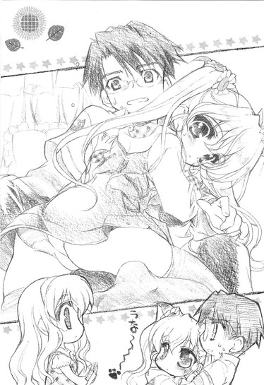
もうどうしていいか分からず、浮気現場を妻に踏み込まれた夫のようにその場で凍り付いていると、春香がにっこりと笑った。
「もう美夏、そんなに裕人さんに甘えちゃダメですよ。裕人さん、困ってます」
「は～い」
イタズラを咎められた子供みたいな顔をして美夏が離れる。その様子を、春香はにこにこと穏やかな顔のままで見守っている。あれ？
「......春香、怒ってないのか？」
「え、どうしてです？」
頭の上にハテナマークを浮かべながら、ぽわんとした表情で不思議がる春香。ほんとに何とも思ってないみたいだ。......何だかそれはそれで少し寂しいような気も。
「お姉ちゃん、こういったことにはすっごく鈍いからね～」
腕を組みながら、うんうんと美夏がうなずいた。
「ま、それがお姉ちゃんの短所でもあり長所でもあるんだけど」
「？」
「あ～、いいのいいの、お姉ちゃんは分からなくて。それよりおに～さん」
「ん？」
小首をかしげたままの春香から俺の方に向き直り、美夏は改めてこんなことを言った。
「ああいうお姉ちゃんだから色々と大変かとは思いますが......どうかよろしくお願いします。......お義兄さん♪」
最後の〝おにいさん〟の響きが、少し他と異なっていたように聞こえたのは俺の気のせいだろうか。気のせいってことにしとこう。
５
「それではまた明日学園で、ですね」
門まで送りに来てくれた春香が名残惜しそうにそう言う。
「こちらがさっきのプラムプディングです。他に、少しオマケもつけておきました」
手渡された紙袋には「ワンちゃんへ♪」と書かれた字の横に、何か地獄の番犬ケルベロスみたいな生き物が狂気に満ちた熱い視線をこっちに送っていた。何から何まで突っ込みどころ満載のステキなお土産である。
「あの、よかったら駅まで車でお送りしますけど......」
「ありがたいけど遠慮しとく。大した距離じゃないから、歩いていくさ」
春香の申し出を謹んで辞退した。いや、だって徒歩十分もかからない距離だしさ（ちなみに屋敷内から門まで徒歩二十分である）。
「おに～さん、気をつけて帰ってね」
「ぜひ、またお越しください」
春香だけでなく、美夏も葉月さんも見送りにきてくれていた。ここまでわざわざ来てくれたことが、少し嬉しい。
「じゃ、また」
門の前で手を振っている三人に手を振り返して、俺は駅へと向かって歩き出した。
何だかんだで、今日はいい日だったと思う。
美夏や葉月さんといった面白い人たちと知り合うことも出来たし、春香のことを今までよりも知ることが出来て、何だかもう少し身近に感じられるようになった気がする。行く途中で道に迷ったり、気配のないメイドさんにおどかされたり、美夏に色々と答えにくいことを突っ込まれたりもしたけど、それだけで今日は俺にとっていい日だった。
こんな一日が、これからもたくさんあるといいんだけどな。
さて、これは全くもって余談であるが。
春香から貰ったお土産をうちのワンちゃんに渡したところ、
「おお、これは美味いな。こっちのすもも味のプリンもいいが、特にこの燻製肉は絶品だ。日本酒にとてもよく合う。いささか味が薄いような気もするが、それはまあご愛嬌だろう。貰ったものに文句を言ったらバチがあたるな」
と喜んでいた。非常に喜んでいた。
すもも味のプリンとはおそらくプラムプディングのことを指しているんだろう。まんまな表現であるが、横文字に弱い人だからそれはいい。それはいいんだが──
「......燻製肉？」
そんなもん入ってたのか？ そういえば春香、オマケを付けたとか言ってたような言ってなかったような......
イヤな予感がして、恐る恐る姉の傍らに置かれているモノを覗き込んでみる。
そこには、大きく『最高級ビーフジャーキー』と記載された袋があった。......ただし、その横に『犬用』と書かれた。
「......うわ」
幸いなことに、すでに酔っ払っている姉はそれに全く気付くことなく上機嫌でジャーキー（犬用）を口にしている。そんな姉を横目で見つつ、俺は無言でジャーキー（犬用）を全部袋から出すと、家にあったビニールパックにそれらを移し替え、『犬用』と書かれた方の袋をゴミ箱にそっと投げ入れた（証拠隠滅）。だってバレたらたぶん......コロされる。
「ん、どうした？」
「あ、い、いや。湿気るとまずいだろうから、袋、入れ替えておいたぞ」
「おお、すまんな」
珍しく礼などを言って、ルコはさらにジャーキー（犬用）に手を伸ばした。よほどこれ（犬用）が気に入ったみたいだ。
まあ食べても死ぬことはないだろう。というか、最近のペット用食品は人間が食べるものよりも高品質であるという話も聞く。だから大丈夫だ。おそらく。
「......じ、じゃあ俺はもう寝るから。ルコも早く寝ろよ」
「ああ。これを飲んだら寝るよ」
そして俺はリビングを後にした。
結局、その日のうちに春香からのお土産であるビーフジャーキー（犬用）は、全てルコの腹の中に納まったのだった。
第四話
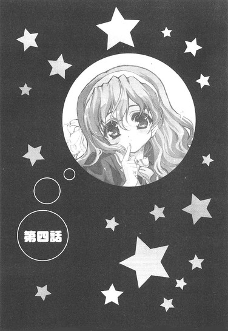
０
七月。
中間試験も終わり、学園全体が来るべき夏休みに向けて段々と騒がしくなりはじめていた。
どこどこへの旅行の計画だとか、終業式までにはだれだれに告白するだとかで教室中がどこか落ち着かないそわそわとした雰囲気に包まれる中、何とかかろうじて補習を免れることに成功した俺は（とはいってもかなりきわどい点数のものがいくつもあった）、三バカに一アホ（信長）が加わった四人（......客観的には五バカに見られてるかもしれんが）と、いつものごとくだらだらと昼休みを過ごしていた。
「やっぱり夏は海だろ。飛び散る水飛沫、降り注ぐ太陽、焼けた砂浜、白熱するスイカ割り。これこそ日本の侘び寂びってやつだ！......男しかいないけどな」
「そうですね。深緑に包まれた山の中で涼気を堪能するのも乙なものです。日本の夏とはそういうものです。......人喰いグマに襲われるかもしれませんが」
「ああ、そうだな。近所の公園で一晩中飲んで騒いで脱いで歌って語り明かす。これが夏の醍醐味だ。......たぶん警察に捕まるだろうがな」
こいつら、三人とも夏がキライなんだろうか。おまけに全然会話が噛み合ってないような......。三人が三人ともボールを投げっぱなし状態である。
「夏といえばさー、何といっても有明だよねー」
信長は信長でまたワケノワカランことを言ってるし......。有明って、九州まで行くつもりか、こいつは。
「おい裕人、お前はどう思う？ やっぱ男は海水浴だよな？」
永井がいきなりこっちを向く。そういう議論を俺に振るな。ていうか、俺も頭数に入ってたのか。
「いいえ、海なんて有害な紫外線の照射場みたいなものです。やはりここはマイナスイオンが豊富に満ち満ちた癒しと安らぎの場である山でのキャンプを選ぶのが賢人の選択かと」
「公園で宴会が一番だろ？ 金もかかんねーし」
「やっぱ同人誌だよねー？」
四人がずい、と顔を寄せてくる。うっ、暑苦しい。
いや俺は海でも山でもどこでも別に構わんのだが（信長はそもそも何を言ってんだか分からんし）、いっしょに行くのがこいつらってところが一番問題なんだよな......。どこに行っても絶対に何かロクでもないトラブルが起きそうな気がする。そもそも、これらの計画全てが男のみで構成されてる（すなわち色気の『い』の字もなし）ってところが何よりも悲しい。
「あー、とりあえず俺の意見は保留ってことで」
何と答えてもどこからか文句が出そうだったので無難にそう逃げておくと、
「またか。お前は本当にいいかげんだな」
「その全てにおいて等閑な性格、直さないと痛い目を見ると忠告したはずですが」
「けっ、この中途半端な根無し草ヤロウが」
「裕人は昔から優柔不断なんだよねー。外食するときもメニューを選ぶのにやたらと時間かかるしさー」
言いたい放題だった。まあ別に今さらこいつらに何と言われようと気にはならんけどさ。
再びあーだこーだ不毛な議論を始めた四人は放っておいて、机につっぷす。
──夏休みと言えば、春香はどうするんだろうな。
ふと気になった。
三バカプラス一アホたちの意味不明な計画はほんとに心の底からどうでも良かったが、そっちはかなり気になる。
やっぱりお嬢様だけあって南の島でバカンスを楽しみながら優雅にクルージングだとか、軽井沢の別荘で備え付けのテニスコートで汗を流しながらのんびりと避暑とかなのかね。
ちらりと教室の反対側を見ると、その春香が食後のお茶を楽しみながらのんびりと読書をしていた。相変わらずその姿は優雅で、しとやかにたたずむ白百合を連想させる。読んでいるのは高価そうなカバーに覆われたいかにも文学的な香りを感じさせる文庫本だが、その中身が必ずしも外観と一致しないということは先日以来もうよく分かっている。頼むから人前で落としたりしないでくれよ（すげえやりそう）。
春香がふとこっちを見た。目が合う。すると少し恥ずかしそうに頬を染めて、でも嬉しそうにぱたぱたと手を振ってくれた。うーん、とてつもなくかわいい。
出来ることなら三バカたちとなんかじゃなくて春香とどこかに行きたいんだが（それも二人で）......まあそれは調子に乗りすぎってもんだろう。いかにここ数ヶ月の間に少しは親しくなったとはいえ、夏に二人だけでどこかへ出かけられるほどの仲じゃない。
だけど、訊いてみるだけは訊いてみてもいいかな......
「え、夏の予定ですか？」
「おう。春香はどっかに行ったりするのか？」
放課後。廊下でたまたますれ違った時にさりげなくそう訊いてみると、春香はかわいらしく小首をかしげた。
「えと......そうですね、美夏や葉月さんたちといっしょに葉山の別荘に行くのは決まっています。八月にはロンドンでピアノのコンクールがありますし、あとはお祖父様と尾瀬にテニスへ行く予定もあります」
「ふんふん」
予想から大きくは外れていないラインナップだ。さすがお嬢様。
「うーん、あとは何かあったかな......。あ、一つ行きたいところがありました」
「どこだ？」
「〝なつこみ〟です」
「......」
......何それ？
「『イノセント・スマイル』に書いてあったんですけど、何でも『ドジっ娘アキちゃん』と『ダメっ娘メグちゃん』の茶道ヴァージョンの限定ふぃぎゅあが売られているそうで......。それがとっても素敵なんです」
夢見る少女の瞳でそう語る春香。それだけで〝なつこみ〟とやらがどういうものかだいたい分かった。分かりすぎるくらいに分かった。
「それって、どこでやってるんだ？」
「有明の東京ビッグサイトと書いてありました。でも一人だと不安なので諦めようかとも思っているんですけど......」
「ゆりかもめか......」
それならそう遠くもないな。
「もしよかったら、いっしょに行くか？」
そう提案してみた。
「い、いいんですか？」
「ああ」
「あ、ありがとうございますっ」
興奮した面持ちで春香が立ち上がる。ほんとに嬉しそうだな。
ひとしきり喜んだ後、
「あ、それじゃ私そろそろ行きますね。今日、掃除当番なんです」
と言って、にこにこ顔で春香は去っていった。
かくして少々（かなりか？）色気には欠けるものの、春香と二人きりでどこかへ行くという、念願の夏の予定が決定したのだった。
春香と別れて下校しようとすると、校門のところで呼び止められた。
「お～い、おに～さん」
「ん？」
聞き覚えのある舌ったらずな声。
見ると校門の辺りでこっちに向かって手を振っている小柄な影が一つあった。
「美夏？」
「へへ～、おに～さん、久しぶり」
たたたっと駆け寄ってくると、制服姿の美夏はそう挨拶した。
「どうした？ 春香に何か用か」
「うん、用っていうか、ちょっとこの近くまで来たから寄ってみたの。いっしょに帰ろうと思って。お姉ちゃん、まだいる？」
「ああ。でも出てくるまでにはもう少しかかるんじゃないか」
掃除当番だと言ってたから、たぶんあと二、三十分はかかるだろう。しかし考えてみると、『白銀の星屑』に掃除当番とは、何とも似合わん組み合わせである。
「そ～なの？ ね、おに～さん。だったらお姉ちゃんが来るまで話し相手になってくれない？せっかく会えたんだし。それともこれから何か用事でもある？」
「いや、大丈夫だ」
彼女がいるわけでもなしバイトをやっているわけでもなし、やることといえば七時までにルコの夕飯を作ることくらいである。俺の放課後のスケジュールは基本的に空きまくっているのだ。......自分で言ってて悲しいが。
「わ～い、やった」
ぴょんぴょんとその場で飛び跳ねて美夏が喜ぶ。どうでもいいが、スカートでそういうことをするのはやめた方がいいと思う。
「で、最近お姉ちゃんとの仲はどう？」
ひとしきり喜んだ後、美夏はいきなりそんなことを尋ねてきた。
「いやどうって言われても」
夏にいっしょに出かける約束はしたものの、それ以外には特に進展はない。というか、学園内ではヘタに春香と仲良くするとファンクラブに目を付けられるため、人前では落ち着いて話も出来ないのである。
「う～ん、ダメダメだなあ。そんなんじゃ、おに～さんがお義兄さんになる日はまだまだ遠いぞ～」
そう言って、俺の腕に抱きついてくる美夏。
「お、おい」
「えへへ、ちょっとくらいならいいじゃん。わたし、お兄ちゃんも欲しかったんだよね～。今のところ、おに～さんが将来のお義兄ちゃん候補ナンバーワンだし」
美夏がイタズラっぽく笑う。
「それとも、おに～さんはわたしのこと、キライ？」
「いや、そういうわけじゃなくてだな......」
まあ何だかんだいって美夏はかわいいし、懐かれるのは悪い気はしない。俺としてもこんな妹がいたらいいなと思うこともある。
ただ──
「人前でってのは、問題あると思うぞ......」
さっきから何やら周囲の視線がやたらと俺たちに集中していた。
すれ違う人、通り過ぎる人がこっちをちらちらと見てはひそひそと小声で何かをささやいているのだ。
その中のいくつかが聞こえた。
「ね、あの子って中学生だよね？ 何あれ、男の方がナンパしてるの？」
「でもさっき〝おに～さん〟って呼んでたよ。兄妹なんじゃない？」
「〝おに～さん〟ねえ......。それって本物じゃない〝パパ〟とかと同義なんじゃないの」
「うわ、最低」
別の集団からは、こんな声も聞こえた。
「なあ、あの子、すごいかわいくないか？」
「ああ。でも、何かだれかに似てるような......」
「だれだっけ？」
「うーん......」
「で、あの男は何してんだ。ナンパか？」
「白昼堂々、校門で中学生をナンパか......最悪だな」
さらにはこんな声も。
「あれって二年の綾瀬じゃねえか？確か春香様にちょっかいだしてるってウワサの......」
「春香様に手を出して鞄きながら他の子をナンパだぁ？」
「しかも自分のことを〝おに～さん〟とか呼ばせて悦に入ってるらしいぞ」
「腕なんて組みやがって......変態が」
「......殺っとくか？」
「親衛隊、呼べば五分以内に二十人は集められるぞ」
後半の方、ものすごく物騒な会話が交わされていた。
身の危険を感じた。これ以上この場に留まっていたら生命が危ないと本能がレッドシグナルで警告していた。
「あれ、おに～さん、顔が青いよ。どしたの、具合悪い？」
美夏が顔をぐっと寄せてくる。
周囲からの視線が、刃物でえぐるようなさらに強烈なものになった。やばい......このままじゃマジで殺られるかもしれん。
ここはとりあえず一刻も早くこの場を離れるべきだろう（戦略的撤退）。
「あー、美夏。悪いが俺、急用を思い出したからここで──」
「あれ美夏？ どうしてここにいるんですか？」
死線を離脱しようとした俺を、校舎の方から響いてきたのんびりとした声が遮った。
「あ、裕人さんもいます。二人でどうしたんですか？」
春香だった。
ようやく掃除が終わったのか、嬉しそうに顔を綻ばせながらこっちに向かってとことこと歩いてくる。う、春香もやって来た以上、ここでいきなり俺が消えるのは不自然だ。
「お、おい、春香様だ......」
『白銀の星屑』の出現で、にわかに周りが騒がしくなる。慌てて頭に怪しい赤いハチマキを巻きだすやつも（それもけっこう多数）出てきた。
「春香様、あの女の子と知り合いなのか？ 親しそうだぞ」
「あれって......もしかして美夏様か？」
「だれそれ？」
「お前知らねえのかよ、モグリか？ 春香様の妹だ」
「そういえば顔、似てるな」
「かわいい......」
「でもあいつ、何で春香様の妹とあんなに親しげに腕なんて組んでやがるんだ？」
「......まさか妹にも手を出してやがるんじゃ」
「フタマタ......」
その言葉に、ざわりと辺りの空気が揺れた。
「......おい、親衛隊、集められるだけ集めろ。あのヤロウ......春香様だけじゃなくて美夏様にまで手を出しやがって。バットとか木刀とかあるやつは持ってくるようにも言え」
「ラジャ」
周りの雰囲気が殴り込み前の組事務所みたいな剣呑なものへと変化していく。やばい、本気でやばい。
「そ、それじゃ美夏、春香も来たことだし俺はこのへんで。春香もまた明日──」
「え～、せっかくだから途中までいっしょに帰ろうよ」
左腕に美夏がぶら下がってくる。
「あ、私もそれに賛成です。裕人さんといっしょに帰る機会って、あまりありませんので」
右腕の袖を春香がきゅっと掴む。
「い、いや......」
それはもう普段なら両手に花どころか胡蝶蘭（最高級品）といったところなのだが、今の状況ではそれは葬式（もちろん俺の）で飾られる弔花に他ならなかった。
「ちょっといいかな、綾瀬くん」
突然、強い力で後ろから肩をがっちりと掴まれた。
振り返ると、そこには岩のような顔に白いハチマキを巻いた野生の熊みたいな男が立っていた。目を真っ赤に血走らせて親の仇のごとく俺を睨み付けている。
「少しばかり話があるから、俺といっしょに校舎裏まで来てもらえる？」
その鋭い目がぎらりと光る。......こいつ、どっかで見たことあると思ったら空手部の主将（全国大会三位）だよ。先日、絡んできた他校の不良五人をボコボコにして病院送りにしたとかいう......
「ああ、もちろん時間は取らせないからさ。......痛いのは一瞬だけだよ」
にっこりと笑ってそう言うが、目が全く笑っていない。
あからさまな破壊と暴力の匂いを感じ、俺は必死に春香と美夏の二人に目で訴えかけた。『タ・ス・ケ・テ・ク・レ』。それを受けて姉妹は、ああなるほどとばかりにうんうんとうなずいた。
「何だ、おに～さん、友達と約束があったんだ」
「お友達との約束なら仕方がないです。残念ですけれど、私たちのことは気になさらずにそちらに行ってください」
二人そろってにっこり。
「全然違う......」
アイコンタクトは失敗だった。見事なまでに大失敗だった。いやどこをどう見ればこいつと俺が友達に見えるんですか......。
「じゃーね、おに～さん」
「さようなら、裕人さん」
姉妹の背中が遠ざかっていく。
「ああ、キミはこっちだから。親衛隊のみんながお待ちかねだよ」
半ば引きずられるようにして春香たちとは反対方向へ連れて行かれる俺。
その後、突如現れた信長（どうも俺が美夏といるところから見ていたらしい）に助けられて（信長がぼそりと何かを耳打ちしたところ、空手部主将は真っ青になって逃げていった。相変わらずこいつは謎だ......）何とか逃げ出すことに成功したものの、それからしばらくの間、俺はファンクラブからの一級指名手配犯となり隠遁生活を送るハメになったのだった。
また別のある日のこと。
その日もまた春香に会いに来た美夏（なぜか最近よく来る）に校門前で捕まり、一般生徒から冷たい視線を浴びせられた挙句、ファンクラブ員に校舎裏に運れていかれそうになりながらも命からがら逃亡に成功し、半ばボロボロになって帰宅すると、一階のリビングの方から二人分の笑い声が聞こえてきた。
「ふふ、それは面白いな」
「あはははは、やっぱそうよね～」
ルコの声と......もう一つ、すごく聞き覚えのある声。この妙に高いテンションからして、まずあの人に間違いないだろう。
疲労がいきなり倍加した気がした。
一瞬そのまま二階の自分の部屋に引きこもりたい衝動に駆られたが、挨拶もしないでそんなことをすると後々もっと厄介なこと（翌日に校内放送で呼び出されたり、音楽の授業中に『あの素晴らしい愛をもう一度』の独唱をやらされることになったり）になるのはこれまでの経験で身をもって知らされている。仕方がないので、嫌々ながら俺はリビングへと足を向けた。
「ただいま」
がちゃり、とリビングの扉を開く。
「おお、帰ってきたか」
「お、裕くん、おかえり～。おじゃましてるわよ～」
思った通り、そこにはソファの上で足を組んでふんぞり返っているバカ姉と、その隣でぷらぷらと手を振る親友の音楽教師の姿があった。
「......」
この人たちは二人とも肩書き上は立派な社会人なはずなのになぜ高校生である俺よりも早く帰宅しているのかとか、まだ午後四時半なのにもかかわらず何だってテーブルの上に日本酒の空瓶が二本ほど載っかっているのかとか、突っ込みどころは山とあったのだが、たぶんそこらヘンは命が惜しくば深く突っ込んじゃいけないんだろう。まあ、こんなの（キッチンドランカー）はいつものことだしな。......なお悪いが。
「今日はいつもより遅かったな。何か用事でもあったのか？」
「いや別に」
据わった目でじっとこっちを見る姉から目を逸らす。こいつらにあえて春香たちのことは話すこともあるまい。出来上がった酔っ払いども（それもかなりタチが悪い）にわざわざ酒の肴を提供するなんて、それこそ飢えたトラの前に自らの腕を差し出すようなもんだ。
しかし。
「春香ちゃんとかその妹ちゃんにヘンなことしてたんじゃないでしょうね～？」
俺は何も言ってないのに、一升瓶片手に、由香里さんがにやりとファウスト博士みたいな笑みを浮かべた、
「......何の話ですか？」
「隠したっておねいさんにはムダよ。ここのところ裕くんが春香ちゃんと妹ちゃんと仲良くしてるってことは、信長くんからの情報で分かってるんだから」
「......信長？」
確かにあいつは俺が春香に興味を持ってたことを知っている。でもあいつはそういったことを他言するようなやつじゃない。適当そうに見えてそういったところは意外に律儀なやつなのである。その信長が、よりにもよって知られたら一番メンドウなこのセクハラ音楽教師に教えるはずがないんだが......
すると由香里さん、再びにやりと笑い、
「ま、信長くんも最初は言うのを渋ってたみたいだけどね～。でも優しく〝か・ら・だ♪〟に訊いてみたら快く洗いざらい答えてくれたわよ。『わ、分かったよー。僕が知ってることなら全部喋るからさー、い、いやむしろ喋らせてくださいー。うわー、僕はまだキレイな身体のままでいたいんだー。裕人、ごめんねー』って」
「......」
その場で何が行われたのかは......考えない方が心の健康のためにはいいんだろうな。生贄となった哀れな幼馴染に少しだけ同情した。
「さすがに信長くんの情報は詳細かつ的確よね～。裕くんが周りの目を盗んでちょくちょく春香ちゃんと話をしてることとか、試験勉強をしに春香ちゃんの家にまで行ったこととか、妹ちゃんと校門のところで仲良くじゃれあってたこととか、まるで見てきたみたいに詳しく説明してくれたわよ～」
由香里さんの口ぶりからして、信長のやつ、持っていた情報を全て開示させられたのは間違いなさそうだ。はあ......てことは、この人に春香関係の情報は全て握られたってことか。うわ、最悪だ。
「......ん？」
ちょっと待て。
そこで思った。
春香と学園てちょくちょく喋っていたことや美夏との一件はともかくとして、何であいつ、俺が春香の家に行ったことまで知ってるんだ？このことはだれにも喋ってないのに......
『情報化社会っていいよねー。情報保護条例だプライバシーだなんて言っても、その気になれば結局個人情報なんて筒抜けだしー』
いつかの信長の言葉が頭に浮かぶ。
「......」
改めて、朝倉信長という人物の恐ろしさを垣間見たような気がした。てか絶対ストーカーだよ、こいつ......
色んな意味で俺が絶句していると、由香里さんはさらに続けた。
「ま、もっとも信長くんに聞く前からも薄々気付いてたけどね。だって最近、学園内じゃ有名よ？あの『白銀の星屑』にちょっかいをかけてるクソヤロウがいて、さらにそいつはその妹ちゃんまで毒牙にかけようとしてる人間のクズだって。それを聞いた時、私ぴ～んときたのよね。これもう絶対に裕くんのことだって」
......いや由香里さん、どうしてその人間像から真っ先に俺が浮かんでくるんでしょうか。
「だって裕くんならいかにもじゃない。普段からむっつりスケベだし」
「......」
俺の抗議にさらりと答える由香里さん。
「......裕人。幼女偏愛はいかんぞ。私はお前をそんな風に育てたつもりはないんだが──」
「......」
姉は姉で真面目な顔でそんなことを言いやがるし、
「でも裕くんの性格じゃ幼女ちゃんにも尻に敷かれそうよね～」
「......」
由香里さんも由香里さんでさらに好き勝手なことを言いやがる。......くそ、何か本気でグレたくなってきたぞ。
「あ、裕くん、怒ってる？」
「......そりゃあもう」
変態プラスヘタレ呼ばわりされて仏顔でいられるほど俺は人間出来てない。
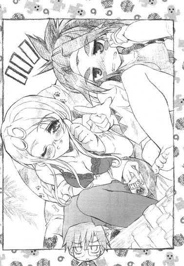
「ごめんごめん、そんな怖い顔しないでよ。ほんの冗談なんだから。でも薄々気付いてたってのはホント。だって前から裕くん、春香ちゃんのこと色々と気にかけてたじゃない。いつかのホームルームの一件とか」
「......う」
そこをつかれると痛い。
「確か、裕くんがいきなり繁殖期のシマウマのごとく発情して春香ちゃんに覆いかぶさったのよね～。いや、私が必死に止めたから被害は未然に防げたものの、色欲に狂ったケダモノを抑えるのには苦労したわ～」
「過去を捏造すんな」
あんたあの時ほとんど何もしてないだろ。
「ま、恋することはいいことよ。恋があるから愛があるわけだし、愛があるから人類は今こうやって繁栄してるわけだしねー。愛は地球を救う。ラヴ・アンド・ピース♪」
何だかいいことを言っているように見えて実はその場のノリで喋ってるだけの酔っ払いは、すげえ楽しそうな顔で親指を立ててぐっと俺の方に突き出した。
「どお、裕くんも私といっしょに地球を救ってみない？」
「遠慮しておきます」
ピンク色のオーラを出している酔っ払いに、〇・五秒でそう答えた。
「よよよ、フラれちゃったわ～。ルコ～、裕くんが冷たいよ～......」
「......いや、私としても由香里が義妹になるのは心の底から遠慮したい」
「うう～、姉弟そろって北極に吹く北風みたいに冷たいのね～......」
何やら泣きマネを始めた人はとりあえず放置しておく。
「それじゃ俺は宿題があるんで部屋に戻りますんで。飲むのもいいけどほどほどにしといてくださいよ。ルコも」
「心配するな」
その言葉に一片たりとの信憑性もないことはもはや疑いようもないんだが。せめていつかのように家の中で火炎放射（口にアルコール度数九十六％のウオッカを含んでライターの炎に向かって思いっきり吹き付ける。注１：良い子は絶対にマネしないでください）をやって消防車を呼ばれるようなマネだけは避けてほしい。
「......ほんと気を付けてくださいよ」
俺はリビングのドアに手をかけ部屋へ行こうとして、
「裕くん」
と、背後から由香里さんに声をかけられた。いつになく真剣な声。何だ？振り返ると、そこにはまるでホンモノの教師のような顔をした（注２：本物です）由香里さんが、こっちをじっと見つめていた。
「......私ね、これだけは言っておきたいと思うの」
「何ですか？」
普段と異なる、どこか厳かですらあるその雰囲気に、少しばかり身構えながら問うと、由香里さんは実に真面目な声音でこんなことを言いやがった。
「......年下よりもね、やっぱり年上の方がいいわよ？何といってもテクニックに天と地ほどの差が──」
「うるさいだまれ」
......ダメだ、この人。
春香と知り合って以来の俺の日常は、概ねこんな感じだった。
学園では三バカや信長とだべり、チャンスを見ては春香と色々なことを話し、放課後はルコや由香里さんにからかわれる。休日は時々春香の買い物に付き合ったり、なぜか美夏の買い物に付き合わされることもあったりした。
春香と出会って以来、微妙に変化した日常。
それはちょっとばかりエキセントリックで、色々と苦労も多い。
でもそんな日常が、俺は気に入っていた。
だってそれはそれまでの退屈な日常より、確実に面白かったからな。
１
夏休みまであと二週間に迫ったある日の放課後。
由香里さんに呼ばれて職員室へと向かっていた俺は、どこからか呼び止める声を聞いて、廊下を振り返った。
「裕人さ～ん」
耳心地の良いソプラノボイスを辿ると、廊下の向こうの方で春香がぶんぶんと手を振っているのが見えた。何かとても嬉しそうな表情だ。
「裕人さ～ん」
再び指名される。
その辺を歩いていたヤツらが一斉にこっちを見る。その視線の一部に殺気のようなモノが含まれているように感じるのは気のせいでしょうか？見覚えのあるハチマキをしてるヤツらも何人かいるし。
だけど春香は相変わらずそんなもんどこ吹く風でにっこりと笑って、
「あのですね、〝この前お話ししたモノ〟を持ってきました。よろしかったらこれからいっしょに見ませんか？」
ぱたぱたとこっちに向かって走り始めたのだが。
「あ、おい春香、足下！」
その進路上には掃除の時間にだれかが置き忘れたのか一枚の雑巾が落ちていて──
「え？」
こっちに来るのに夢中で全く足下が見えていない（見ていない）春香が、ピンポイントでそれを踏んづけるのはもはやお約束だった。
「え、ええっ......？」
そして衆人環視の中、春香は宙を舞い、
「き、きゃあっ！」
一回転して、見事に廊下に墜落した。
走る→滑る→見事に転ぶ、の素晴らしいコンボだった。
「い、痛いです......」
床にしこたまぶつけたのか、痛そうに腰をさする春香。その横ではカバンの中身が完全にぶちまけられている。あー、またハデにやったもんだな、こりゃ。
助け起こそうと春香のもとへ行こうとして......そこで、周囲の視線に気が付いた。
何やら見てはいけないものを見てしまったような、たまたま物陰から殺人事件を目撃してしまった家政婦みたいな視線。そんな視線が春香に集中している。
最初はただの注目だと思った。
あの『白銀の星屑』が廊下のど真ん中で見事にすっ転んだことに、注目が集まっているだけかと思った。
しかし。
春香の傍らで悪魔召還辞典のごとく開かれている雑誌のようなものを目にした瞬間、その視線のほんとの意味が分かった。イヤってくらいに。
〝この前お話ししたモノ〟とやら。
たまたまめくれて顕わになっているページには、どんな偶然か今の春香と全く同じポーズで痛そうにお尻をさすっている蒼髪の女の子のイラストがあった。『ドジっ娘アキちゃん』ドジポーズＮＯ．Ⅲとか書いてある。
「......」
辺りの時間は完全に止まっていた。
空手師範が寸止めの手本を見せようとして思いっきり弟子の顔面にクリーンヒットを食らわせてしまった時みたいな、そこはかとなく気まずい雰囲気が廊下を漂っている。
「ま、またやっちゃいました......」
状況がつかめていないのか、最初のうちは廊下にぺたりと座り込んだまま恥ずかしそうにそんなことを言っていた春香だったが、やがて周囲の異様な静寂に気付いたみたいだった。
「あ、あれ......みなさん、どうしたんでしょう？」
「......」
「あの、どうしてこんなに静まり返っているのですか？」
俺を見てそう不思議がる。どう答えたらいいか分からず俺が言葉に詰まっていると、さらに不思議そうな顔をして春香は周りを見回した。ヤジウマをしていた何人かの生徒と目が合うも、そいつらはみんな一様に気まずそうな顔をして素早く春香から目を逸らした（まあムリもないんだが）。
「??」
春香の頭の上にでっかいハテナマークがいくつも浮かんでいた。全く何が何だか分からないって顔だ。
「あの裕人さん、一体何が──」
助けを求めるように再びこっちに視線を向けようとして、
「え......？」
その途中に落ちている、これ以上ないってほどに自己主張している物体に気付いてしまった。
「え、どうして〝なつこみ〟のカタログが......え？え？」
春香の顔色がかわいそうなくらいに変わった。朝会で校長先生の長話の最中に貧血で倒れる寸前の生徒みたいに真っ青になった。
「え？ だって私、ちゃんとカバンの一番奥に仕舞っておいたはずなのに。何で、どうして......」
受け入れたくない現状に心がついてこないのか、春香はあたふたとするだけで立ち上がることもしない。
「春香、とりあえず立てるか？」
転んだ拍子に乱れたスカートの裾を直してやり、右手を差し出す。だが春香の様子は少しヘンだった。
「あ......わ、私、私......」
「春香？」
虚ろな瞳で辺りを呆然と見回し、廊下に視線をさまよわせる。
「や、やめて......そんな目で見ないでください。私、私は......」
「お、おい、落ち着けって......」
俺の声も聞こえていないのか、両手で頭を抱え込むようにして春香が首を振る。まるでそうすることで周りの視線が全部消えるとでもいうかのように。
「わ、私はっ......」
そして春香はその大きな瞳に涙をためて、
「っ......」
そのまま落ちているカバンを掴むと、呼び止める間もなく全速力で走り去ってしまった。
「は、春香......」
残されたのは、いまだドジポーズとやらのページが開かれたままのカタログと俺。う、視線イタイ......。
「なあ......アレって、本当に乃木坂さんのなのか？」
「分かんない......でも彼女のカバンに入ってたのよね」
「でもあの『白銀の星屑』があんな怪しいもん持ってるなんてこと......」
周りからはそんな囁きが聞こえてきた。うーん、こりゃマズイな。このままだと春香の秘密が盛大にバレかねない。そこまでいかなくても、『白銀の星屑』があんなカタログを持っていたなんてことがウワサになったらそれだけでも十分に大問題だ。もしそんなことになったら、春香はきっと泣くだろう。春香の泣き顔は......もう見たくない。
よし。
だったらここはもうこれしかないだろ。
「あ、これってもしかして！」
俺はわざとらしく大声を出し、残されたカタログを指差した。
「これってもしかして......俺が三日前に落として探してたカタログか？ああ、やっぱりそうだ！乃木坂さんが拾って持っていてくれてたんだな。さすがは乃木坂さん！」
......かなり棒読みかつ説明臭い台詞になってしまった。俺にはどうやら役者の才能は全くといっていいほどないみたいである。
だがそれでも、周りのヤツらは俺の大根芝居（それも桜島大根並み）を信じたみたいだった。
「......そうだよな。あの乃木坂さんがこんなもん持ってるはずないし」
「春香ちゃん優しいから、あんなものでも捨てずに持ち主を探してたのね」
「あいつ一組の綾瀬だろ？ ほら、あの朝倉の親友の。ならこういう怪しいもんを持っててもおかしくねーしな」
「ふーん、綾瀬くんもそういう趣味だったんだ。何かイメージ崩れたなあ」
「そう？ 別に綾瀬なんてどうでもよくない？」
「まあもういいじゃん。行こーよ」
好き勝手なこと（人のことどうでもいいとか言うな）を言いながら、ヤジウマ共はちりぢりに解散していった。
......ふう。何とか誤魔化せたみたいだな。
胸を撫で下ろし、俺は廊下に散らばった春香の私物を拾い集め始めた。教科書、ノートにペンケース。それに楽譜と例のカタログ。かなり勢いよくコケたせいかあちこちに分散していて大変だったが、それでも全部集めるのに一分とかからなかった。
「やれやれ......」
立ち上がる。
ともあれ、これで一件落着だと思った。春香の秘密はバレずにすんだし、このカタログは明日にでも人目につかない場所で返せばオッケーだ。春香の様子が少しおかしいように見えたのが気にはなったが、きっとそれも突然の出来事にいつか（図書室半壊時）みたいに半パニック状態に陥っていただけだろう。そんな風に簡単に考えていた。
だけどその考えは、少しばかり楽観的すぎたみたいだった。
翌日。
春香は学園を休んだ。
２
「はい、それでね～。フランスでは近代になってドビュッシーやラヴェルなどの印象派と呼ばれる人たちが台頭してきて──」
壇上では、由香里さんが教師とは思えない女子高生チックな丸文字を板書しながら、流暢に教科書の内容を説明している。
「この印象派の人たちの特徴はね～、それまでの古典主義音楽に見られる三つの要素、旋律、和声、リズムからの脱却を図ったもので～、ま、簡単に言えば頭の固い先人の考え出した固っ苦しいルールとかをほとんどムシして、感性の赴くままにやりたいようにやったってことね～」
口調は軽いがその分だけ分かり易い説明。なにげにこの人、教師としての能力は高いんだよなあ。......中身はほとんどエロオヤジなのに。まあ、個人の人格と教育の能力とは完全に別次元の問題であるという生きた見本である。
だけどそんな由香里さんの説明も、今の俺の頭にはほとんど入ってこなかった。まあもともと退屈な音楽史の授業（と言ったらおそらく鉄拳が飛んでくるだろうが）な上に、そんなことよりももっと気がかりなことがあったから。
教室の斜め後ろを見やる。
そこにある、本来春香が座っているはずの席には、今日はだれも座っていなかった。
いや今日も、という表現の方が正しいか。
心の中でため息を吐く。
今日で、春香が学園を欠席して三日目である。
先日の〝カタログ露出事件〟（命名：俺）以来、春香は学園に姿を見せていない。由香里さんに訊いたところ「体調不良のためお休みだって～。何か体力を消耗させるようなことでもやったのかな～？このこの～」と非常にセクハラな返答が返ってきた（相手にしても疲れるのでもちろんノーリアクション）。
ほんとに体調不良ってことは......たぶんないだろう。
いまだに俺のカバンの中に入りっぱなしのカタログのことを考える。あの時の春香の反応......今にして思えば少し過剰だったような。いくら自分の特殊な趣味がバレそうになったとはいえ、あそこまでパニックに陥るだろうか。
いくら考えても、俺のニワトリ並みの頭じゃ分からない。
だが何にせよ、このまま放っておくことはためらわれた。
──見舞いに、行ってみるか。
こんなことを信長やら由香里さんやらに知られたらまた鬼の首を取ったがごとく（俺から見ればやつらの方がオニだが）からかわれまくること必定であるが、気になるもんは気になるんだからしょうがない。
放課後になるのを待って、俺は乃木坂邸に行くことを決めた。
文句あるか。
そういえばあの事件以来、俺の周囲で変化したことがもう一つあった。
「またありやがる......」
下駄箱を開くと同時に、中からドサドサと落ちてくる手紙の山。軽く見積もって全部で五十通はある。もちろんこれらはラブレターなんて夢あふれる代物じゃなくて、ほとんどが不幸の手紙や嫌がらせの手紙、それらに類するモノである。
「やれやれ......」
全部拾い集めて焼却炉へと持っていく。心情的にはそのまま放置しておきたいが、怪文書のほとんどに俺の名前が書いてあるため始末しないと責任が全て俺にかぶさってくるのである。ったく......出したヤツらもそこまで計算してるんなら大したもんだ。その細やかな心遣いをもうちょっと違った方向に活かせばこの世知辛い世の中ももう少しは住みやすくなるだろうに。
などと嘆きつつ、道すがらいくつか怪文書の中身を見てみる。
そこには、「春香ちゃんに近づく害虫め！ 怪しい本を春香ちゃんに拾わせてんじゃねえよ、ファック！」とか「あんたみたいなサルには春香様は似つかわしくないのよ。身の程を知りなさい、オタク野郎！」「春香様のフィギュアとか造ってんじゃねえだろな、この変態が！」とか、実に頭の悪そうな煽り文句が書かれていた。
心の底からため息を吐く。
このテの嫌がらせの手紙は前々からもあった。春香と馴れ馴れしくするなだの春香の半径五メートル内に近づくなだの春香と同じ空気の中に存在するなだの、そんな内容のやつである。
それも信長が好意でやってくれた情報操作のおかげで一時期はだいぶ少なくなってきたように思えたんだが、先日の一件以来また大量に届くようになり始めている。しかも今までとは多少毛色の違うやつが。
「はあ......ったく」
どうも学園では、『白銀の星屑』にべったりとくっ付いているクソヤロウ（俺）＝怪しいフィギュアを愛でるアキバ系、という公式が確立しようとしているらしい。原因は探るまでもなく先日のアレだろうが、今回ばかりは信長に情報操作をしてもらうわけにもいかない。あのカタログの持ち主が俺でないということになれば、必然的に春香の方に嫌疑がいくからな。それに信長も信長で、「わー、裕人もこっちの道に覚醒してくれたんだねー。わーい」などと素直に喜んでいたから、頼んでもやってくれんかもしれん。
「にしてもどいつもこいつも......アキバ系がそんなにキライなのかね」
あるいは単に俺のことがキライなだけかもしれんが。
いや冷静に考えてみるとむしろそっちの方が可能性としては大きいか。実際、アキバ系のマスターとして認知されている信長に今までこういった嫌がらせがあったと聞いたことはない。それどころかあいつは、そのフレンドリーかつユニークなキャラクターから、ある意味学園のマスコット的存在として、周囲の人間には意外なほどに好かれているのである（見た目は美少年だし）。
これらのことから結論すると、
「......つまり、キラわれてるのは俺個人ってことか？」
ちょっと鬱になった。うう、俺が何をしたっていうんだよ......
まあしかし、なるようにしかならないだろ。
人のウワサも七十五日。そのうちみんな俺のことなんて忘れてくれるに違いない。そう思うことにする。物事を深く考えないことは俺の短所でもあり長所でもあるのだ。
怪文書をまとめて焼却炉に投げ入れる。
んなことより今は春香の方が心配だった。怪文書の始末も無事に終わったことだし、さっさと乃木坂邸へと向かうとしよう。
校門へと足を向けようとした俺の前に、
「やあ、綾瀬くん。今日もゴミ捨て大変だね」
茶髪ロンゲでホスト風の長身の男が、イヤミったらしい笑みを浮かべて立ち塞がった。
......だれだ、こいつ。
初めて見る顔だが、少なくとも好感の持てる雰囲気ではなかった。理由などない。だが一般女性のほとんどが無条件でゴキブリを嫌うように、俺は本能的にこいつを好きになれないと感じていた。
「ああ、自己紹介が遅れたね。僕は三年の佐々岡。佐々岡修斗」
にやにや笑いを貼り付かせたまま、芝居がかった仕草で男が頭を下げる。
その名前には聞き覚えがあった。
確かバスケ部の主将で、春香にフられた過去もあるイケメン（ただしプチ整形）。その性格と女癖の悪さで学園内では有名な最上級生である。出来れば関わり合いになりたくない人物ナンバーワンだった。
「......で、その佐々岡先輩が俺に何の用ですか？」
どうせロクな用事ではあるまいと予想しつつも訊いてみる。
「いやなに、春香ちゃんに寄生虫のごとく張り付いている無粋なオタクヤロウのツラってやつを、一度は直に拝んでおこうと思ってね」
「......それはおヒマなことで」
予想はバッチリ当たってくれやがった。
はあ。試験のヤマとかは全くもって当たらないクセに、どうしてこういうろくでもないことだけは当たるんだろうね。自らの不運を嘆きつつ、俺は佐々岡の方に向き直った。
「......だったら、十分に見ることが出来てもう満足したでしょう。そこ、どいてくれますか？俺はこれから用事があるんで、アンタに構ってるヒマはないんですよ」
押しのけるようにして佐々岡の横を通り過ぎようとする。だけど佐々岡の野郎はニヤニヤと癇に障る笑みを浮かべて、再度俺の前に立ち塞がりやがった。
「......何ですか？」
「まあ待てよ。キミに一言だけ言っておきたいことがあってね」
「......手短に」
三秒以内にすませろ。
「何、簡単だ。......キミ、春香ちゃんにまとわりつくのやめろよ。目障りだからさ。春香ちゃんだって、怪しい美少女フィギュアを眺めて悦に入っているキミみたいな人種に近づかれたくないと思っているに違いないからね。はっきり言って、春香ちゃんがカワイソウだ」
......フィギュアを眺めて喜んでるのは実は春香の方なんだけどな。まあ何であれ、こんなヤツの言うことを聞く気なんてこれっぽっちもありゃしない。
「用件はそれだけですか？ んじゃ俺はこれで」
「ま、待ちたまえ！」
「何ですか？」
しつこいな。
「何だじゃない！ 今の僕の話は聞いてたんだろ？だったらここで誓えよ。もう二度と春香ちゃんには近づかないってさ」
「お断りします」
「うん、分かればいい......って、断る!?」
「ええ。別に俺にはアンタの言うことを聞かなくちゃいけない義理はありませんので」
当たり前だ。
「......っ」
その返事が気に食わなかったのか、佐々岡はあと一歩のところで皇帝暗殺に失敗した宰相みたいな気難しい顔になり、
「ふ、ふん、まあいいさ。キミなんて、放っておいてもそのウチ、春香ちゃんの方から捨てられるよ。何せオタクヤロウだしね」
と、鼻で笑った。
もういいからそこどけ。
佐々岡の野郎を振り切って校門までやって来ると、
「おに～さん！」
美夏がいた。
何やら腰のところに両手を当てて、仁王立ちでこっちを睨みつけている。うわ、何か髪の毛が逆立ってないか？
「おに～さん、お姉ちゃんに何したの!?」
いきなりそれだった。
「......原因をハナから俺に求めるのはどうかと思うぞ」
だが俺の抗議を全く耳に入れず、
「だってお姉ちゃんがあんなに落ち込む理由なんて他に考えられないもん！おに～さん、お姉ちゃんに、ヘ、ヘンなプレイとか強要したんじゃないのっ？」
顔を真っ赤にして美夏が叫ぶ。......お願いだがら下校途中の生徒が大勢いるこんなところで『ヘンなプレイ』とか大声で言うのはやめてください。
「ナ、ナースとか、バニーとか、裸エプロンとか......」
さらに超具体的な内容を付け加える美夏。
案の定、周囲からすげえ蔑んだ視線が俺に突き刺さった。完全に変質者を見る視線だった。......もういいけどな、どうでも。
「あのな、だから俺のせいじゃないんだって」
説明するが、美夏からは疑惑の視線が返ってくる。
「ウソ！ じゃあ何でお姉ちゃん、あんなになってるの!?三日前に学園から帰ってくるなり部屋にこもりっきりで全然出て来なくて、ゴハンもロクに食べてないんだよ！ときどき部屋から聴こえてくるピアノも『葬送行進曲』とか『悲愴』とか『死の舞踏』とかで......」
それはかなり怖いな。
「それに夜には泣き声とかも聞こえて......あれじゃまるで中学のあの頃みたいな──」
そこまで言って、美夏ははっとした表情になった。
「......もしかして、お姉ちゃんの秘密、バレたの？」
すがるような瞳で俺を見上げる。
「いや未遂。危ないところだったけどな」
「それじゃ何で......」
「あー、でも春香はバレたと勘違いしてるかもしれん。ていうか、やっぱ体調不良じゃなかったんだな」
「あ、うん......」
美夏が控えめにうなずく。
「いちおう本人は体調が悪いからって言ってる。でもあれは絶対に違うの。お父さんとお母さんは特に気にも留めてないけど......あれはあの時と同じだもん。葉月さんもすごく心配してる」
「あの時と言うと......？」
「あ、え、それは......」
珍しく美夏が口ごもる。言いにくい内容、なんだろうな。
「俺が聞いていいような話じゃないならムリにとは言わないが──」
「......そういうわけじゃないんだけど」
「でも、もし出来るものなら聞きたい。その話、たぶん春香の今の状態と関係あるんだろ？」
「......」
美夏は少し考え込むようにうつむいて、
「......そうだね。うん、おに～さんは知っておくべきなのかもしれない」
それから何かを振り切ったかのように顔を上げた。
「分かった、話す。おに～さんにだったら話してもだいじょぶだと思うから。あのね、お姉ちゃんは──」
３
そして俺は再びあの乃木坂邸へとやって来ていた。
相変わらず凱旋門並みに巨大な門を抜け、森林公園以上の広さの庭を越え、どこぞのダンジョンのように複雑な構造の屋敷を歩き──
合計二十分ほどかけて、ようやく春香の部屋の前に到着する。
「春香様、裕人様がお見舞いにいらっしゃいました」
葉月さんがドアをノックすると、中で少し物音がした。
「お姉ちゃん、おに～さんがお土産に銀果堂のケーキを買ってきてくれたの。お姉ちゃんもいっしょに食べようよ～」
ガタリバタバタ、と中から何やら動揺したような音が聞こえた。
ちなみに俺が今右手に持っているケーキ（一日限定十個販売）は春香の大好物らしく、三日に一度は必ず食べているとかいないとか。それでもあのスリムな体型を維持しているんだからスゴイ。
「......出ていらっしゃいませんね」
さっきの物音以来、反応がない。
美夏が腕を組んで首をひねる。
「う～ん、おに～さんとケーキのダブルコンボでだいぶ動揺してるみたいだから、もうちょっとって感じなんだけどな～。とりあえず、ここでお茶しよっか？葉月さん、用意してくれる？」
「はい」
どこから持ってきたのか、葉月さんは折り畳み式の簡易テーブルを手早く組み立て、その上にテーブルシートを敷く。さらにどこからか四人分のイスを取り出し、ティーポットとカップを並べ始め...................................................
....................................って、ちょっと待て。こんな大荷物どこに持ってた？確かさっきまでこの人、手ぶらじゃなかったか？
「それは企業秘密です」
尋ねると、涼しい顔してメイドさんはそう答えた。企業秘密ってあんた。実はそのメイド服のポケットが四次元に繋がっているとかそういうんじゃないだろうな？
「企業秘密です」
「いや......」
「企業秘密です」
「だから......」
「企業秘密です」
「......分かりましたよ」
もうそういうことにしておこう。諦めて、俺は大人しく（出所不明の）イスに腰掛けた。
メイドさんが、ポットに手をかけて俺たちを見回す。
「ヌワラエリアでよろしいでしょうか？」
「何でもいいよ。わたしはお姉ちゃんみたく紅茶マニアじゃないから」
「......右に同じく」
というか言われるまでそれが茶葉の名前だってことすら分からんかったし。
そんな感じで、いつの間にか春香の部屋の真ん前（廊下である）でお茶会が始まった。
「わ～、おいしそ～♪」
「ザッハ・トルテですね。切り分けましょうか？」
「うん、お願い～」
鮮やかな手付きで葉月さんがケーキにナイフを入れていく。チョコレートの甘い香りが辺りにふわりと広がる。春香のお気に入りだけあって、ほんとにうまそうだ。
と、その時、背後でカタリ、と小さな音がした。
「ん？」
「！」
振り返ると、そこにはドアの隙間からこっそりとこっちを覗いている春香の姿があった。俺の視線に気付くと、ぱたぱたと慌ててドアを閉じる。......もしかしてケーキにつられて顔を出したのか？
（よしよし、惹かれてる惹かれてる）
小声で美夏がそう囁く。......やっぱそうなのか？
（よろしければ、フルーツコンポートもお持ちしましょうか？）
（あ、いいかも。お姉ちゃん、大好物だし）
（では......）
葉月さんが廊下を滑るように去っていき、
（お待たせしました）
果物を煮込んだようなモノが載ったトレイを持ってあっという間に戻ってきた。何やら独特の匂いがする。
（これはフルーツコンポート。季節の果物をシロップで煮て、ラム酒を加えたものです）
葉月さんがそう解説してくれた。なるほど、ラム酒か。
カチャ。
と、再びドアが開く音がした。匂いに惹かれてまた春香が顔を出したみたいだった。だが俺たちの視線に気付くと、用心深いリスのようにすぐに顔を引っ込めてしまう。まあそんな小動物みたいな仕草もかわいかったりはするんだが。
（ん～、あと一押しだと思うんだけど）
（それでは今度はジンジャービスケットを持ってきますか？）
（うん、お願い）
とまあ、そんな天岩戸まがいのことを何度か繰り返したのだが、それでもあと少しのところで春香は出て来てくれなかった。
「もう～......粘るなあ、お姉ちゃん」
とうとうシビレを切らしたのか美夏は、
「よ～し、こうなったら......」
すう、と息を吸い込んで、
「ほら～、出て来ないんだったら、ケーキもおに～さんもわたしが貰っちゃうよ～。ねっ、おに～さん」
「う、うわっ！ おい」
大声でそう叫んで、がばっとネコのように俺に抱きついてきた。おお、柔らかい。
「おに～さん、ごろごろ～」
「こ、こら」
ほ、ほっぺたを擦りつけるな！
「もうお姉ちゃんなんか放っておいてわたしとデートしようよ～、デート。二人だけでさ～、アキハバラとかいいよね～」
「だ、だから待てって」
「うにゃ～」
じゃれついてくる美夏を何とか振りほどこうとしていると、突然ドアの向こうからドタン！とすごい音がした。
「だ、だめですっ！」
続いて勢いよくドアが開かれ、中から必死な顔をした春香が両腕をぶんぶんと振り回しながら出て来た。
「ゆ、裕人さんはだめですっ！ 他のことならともかく、裕人さんだけは譲れません！ゆ、裕人さんは、アキハバラには私とだけ行くんですっ！」
「......」
「......」
「......わお」
沈黙する俺と葉月さんと、なぜか楽しそうな声をあげる美夏。
そこに至って自分の言ったことのイミにようやく気付いたのか、春香の顔が酸性反応を起こしたリトマス紙みたいにかーっと真っ赤になった。
「わ、私、何言って......す、すみませんっ！」
ばたん、と再びドアが閉じられてしまった。続いてかちゃん、とカギ及びストッパー（チェーンが進化したようなモノ。高級ホテルなんかによく付いている）のかかる音。
「う～ん、逆効果だったかな......」
「いえ、作戦としては良かったと思うのですが......」
「そうだよね～。う～ん、おに～さんの色男♪」
「......スケコマシ」
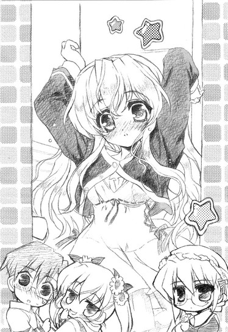
二人（特に後者のメイドさん）が好き勝手なことを言う。
ともあれこれで振り出しに戻ってしまった。いやむしろストッパーまでかけられたので三歩進んで四歩戻るといった感じか。
「......こうなったらもう、強行突破をせざるを得ません。ここ三日、まともに食事を摂っていらっしゃらないので、春香様のお身体が心配です」
メイドさんが一歩前に出る。
「それはそうですけど、でも強行突破ったってどうやって？」
チェーンと違って、ストッパーはペンチなどで簡単に切ったり出来ない。
「これを使用します」
と、メイドさんの手に（これまたいつの間にか）握られていたのは某ホッケーマスクを被った殺人鬼も真っ青の巨大なチェーンソー。だからんなもんどこから持ってきたんだよ......
「危ないですので、お二人は下がっていてください」
チェーンソーが、チュインチュインチュイン！と危険な音を発し始めた。......本気でこれを使う気か、この人。
「それでは──」
「待ってください。ここは俺が行きます」
ドアの前でチェーンソーを大上段に構えようとした葉月さん（使い方絶対間違ってる）を制する。
とりあえずあの件はちゃんとカタが付いたことだけでも教えておかなければなるまい。美夏から聞いた話からして、春香が落ち込んでるのは趣味がバレたと思っているからだ。ならば誤解を解けばこの状況も変わるに違いない。おそらく。
「しかし......」
「任せてください」
少なくともそんなチェーンソーを使うよりはマシなはずだ。
「......分かりました。お任せします」
「がんばってね、おに～さん」
美夏と葉月さん二人の視線を背中に受けながら、部屋のドアを軽く叩く。
「春香、ここ開けてくれ。この前のことで話がある」
「......」
無言。
「あー、きっと春香にとっても悪い話じゃないはずだ。それにほら、春香の好きなケーキもあるぞ」
「......」
まだ無言。
「というか、開けてくれないと葉月さんがチェーンソーを振り回して暴れるって言ってるんだが」
「......そこまでするとは言っておりません」
背後からメイドさんの冷静な突っ込みが入る。いやあなたならやりそうです。
「で、そういうわけなんだが、開けてくれないか？」
改めて尋ねると、少し迷うような気配がドアの向こうから感じられたがやがて、
「......分かりました。入ってください」
か細い声で、そんな返事が戻ってきた。
春香はヒザを抱えるようにしてベッド（天蓋付き）の上にちょこんと座っていた。
その傍らにはクマのヌイグルミと、雑誌のようなものが置かれている。
俺の姿を確認すると、春香は頬を薄らと朱に染めて目を伏せた。
「......あの、さっきはすみませんでした。そ、そのおかしなことを言ってしまって......」
「あー、俺は気にしてないから」
そのことに関しては今はあんま突っ込まない方が吉だろう。いや突っ込んではみたいんだけど。
「それより三日も学園休んで......心配したぞ」
「......すみません」
「いや別に責めてるわけじゃなくてな......」
叱られた仔犬みたいにしょんぼりとしてしまった春香を見ていると、何だかまるで自分がいじめをしているようなやるせない気分になってくる。
「とりあえず、大丈夫だから」
「え？」
「春香の趣味、バレてないから。あの後何とかフォローが上手くいった」
「そ、そうなんですか？」
春香がぱっと顔を上げた。
「ああ、だから春香は何も心配することない」
「あ、ありがとうございます。でも、あの状況でどうやってフォローなんて......」
確かにあれはかなり絶望的な状況だったからな......
俺があの時にやったこと（大根役者）を簡単に説明すると、春香の顔色が変わった。
「え、それじゃあ......裕人さんがカタログの持ち主だと思われているのですか？」
「まあそういうことに」
「そ、そんな......」
春香の表情が変わった。
「ん？ 何かマズイか？」
特に問題はないと思うんだが。
「だ、だって、裕人さんがヘンな目で見られてしまいます......」
なるほど、そのことか。確かにアレが原因で現在色々と弊害（怪文書とか佐々岡とか）が生じているが、別にそれくらいは昨今の世界情勢に比べれば全然大したことじゃない。てか春香の悲しむ顔を見るくらいなら、むしろ自分がイヤな目に遭った方がまだマシだって思えるんだよな。......不思議だ。今までこんな感情をだれかに持ったことなんてなかったってのに。
「それは別に気にしなくていい。春香が元気になれば、それで俺は満足だ」
だから俺はそう言ったのだが。
「そ、そんな、そんなこと......」
しかし、春香はその答えに納得がいかなかったみたいだった。
「裕人さんは分かってないです。それがどういうことなのか......周りとは違う、変わった趣味を持っていることが露見してしまうことがどういうことなのか......」
その瞳に、みるみるうちに大粒の涙が浮かびはじめる。
「ダメです......そんなのはダメなんです......。ゆ、裕人さんには、私と同じような思いはさせたくありません」
「春香？」
「......あんな、あんな思いはもう──」
うつむいて肩を震わせる春香。しばらくの間そうしていたが、やがて何かを決心したように顔を上げた。
「......裕人さん。これから少しお話をしたいことがあります。聞いて......いただけますでしょうか？」
「ああ。いいけど何の──」
言いかけて気付いた。こんな状況で春香が言おうとしている話。そんなものはもう、一つしかないだろ。それはすなわち、さっき聞いた──
その予想に違うことなく、春香は静かに口を開いた。
「──私の、中学生の頃のお話です」
＊
春香の語った内容と美夏から聞いた話とを総合すると、以下のようになる。
要するに、春香は今回やっちまったのとほとんど同じポカを、中学の時にもやっちまったとのことらしい。
詳しくは分からんが、昼休みの教室でたまたま持ってきていたマンガ（『はにかみトライアングル』第一巻）を、床に落ちていた牛乳の空パックに滑って転んで宙を舞って、クラスメイトたちの真ん前で見事にぶちまけたとかなんとか。......なんかその時の情景がありありと想像出来るってのが怖い。
そして見事に趣味がバレた。
中学の時も、すでに今と同じように周囲からは良い意味で特別視されていた春香が、そういった特殊な趣味を持っていたことは、退屈な日常に飽き飽きしていた中学生たちには恰好のネタであったようで、それ以来、春香を取り巻く状況は大きく変わってしまった。
別にムシされたり、表立っていじめられたりするようなことはなかったらしい。
ただ周囲の春香に対する態度、見る目は（悪い方向に）確実に変わり、それまで仲の良い友達だと思っていたやつらも、選挙に落選した国会議員の取り巻きのように、次第に春香と距離を置くようになっていったとのことだった。
美夏が言うには、その時の春香の落ち込みようは見るに耐えなかったらしい。
「あの頃のお姉ちゃん、すっごく痛々しかった。見てられなかった。それまでは明るくてよく喋るお姉ちゃんだったのに、だんだんと塞ぎ込みがちになって、あんまり笑わなくなって......夜とかには、時々一人で泣いてた」
美夏も葉月さんも何とかその状況を打開すべく色々とがんばったみたいだが、学校という閉鎖社会から見れば二人はあくまでも部外者である。それらはことごとく失敗に終わったらしい。
結局一度変わってしまった周りの態度は卒業するまで変わることなく、春香はそのまま塞ぎ込みがちなままで中学生活を終えた。
「ほんとならお姉ちゃん、そのまま付属の聖女──聖樹館女学院に上がる予定だったんだけど......そういう事情があったから、それをやめて白城学園に通うことにしたの。白城なら聖女からは離れてたし、お姉ちゃんの趣味のことを知ってる人もいなかったから」
聖樹館女学院とは、幼小中高大の十九年間一貫教育のエスカレーター式で、純粋培養の超お嬢様学校（生徒の八割は語尾に「～ですわ」を付けるとか、石を投げれば社長令嬢に当たるとか、学食にフランス料理のフルコースがあるとか噂されている）としてこの辺りでは有名な名門校である。まあ考えてみれば、確かに春香ほどのお嬢様が白城みたいな上の下レベルの進学校に通ってるってのは少しばかり不自然だったが、だけどそういう事情があったのならそれも納得出来る。
「お姉ちゃんが、趣味がバレることをあんなに怖がってるのはそのせい。その時のヤな思い出が、一種のトラウマみたいになってるんだと思う。......おに～さん。だからわたしはおに～さんに期待してるの。だってお姉ちゃんの趣味を知って、それでも変わらずに接してくれてるのって、おに～さんだけだから」
＊
話を終える頃には、春香の頬には涙が伝っていた。
「......だ、だから、ダメなんです。あのカタログの持ち主が裕人さんだなんて思われたら、こ、今度は裕人さんが周りからヘンな目で見られて、みんな離れていってしまいます」
思い出したくない昔の話をするのは相当に辛かったんだろうな。ノドの奥からしぼり出すようにして春香は言葉を紡ぐ。
「私、わ、私は......裕人さんに、そんなことになってほしく、ないです......」
「いやそれは」
春香の言うことは分かるが、必ずしも全員が全員そうってわけじゃないだろ。確かに純粋培養の聖女のお嬢様たちの目には、アキバ系なんてものはこの世のものとは思えないほど異質に映ってもおかしくないかもしれんけど......普通に考えれば十人に一人くらいは、肯定してくれるやつもいるんじゃないか？
俺の言葉に、しかし春香は首を振る。
「そ、それはそうかもしれないです。で、でも私のせいで、裕人さんが、そんなことになる必要はないです。もともとは私がいけないんですから......わ、私だけがヘンな目で見られればそれで──」
「そういうこと、言うな」
「だ、だって......」
春香の目を見据える。
「だいたいそんなことくらいで離れていく友達なんて、ほんとの友達じゃない。そういうやつらとは、そのことがなかったとしてもいつか何らかの理由で絶対にうまくいかなくなるに決まってる。離れていってよかったとまでは言わんが......そこまで気にしても仕方がないだろ？」
少なくとも俺はそう思っている。
そいつがアキバ系であるというだけで、その他の性格などの要素を無視して、付き合い方や態度を露骨に変えるやつなんて、友達でいても仕方がない。
「で、でも......」
胸の前で手をぎゅっと握り締める春香。
「でも......一人になってしまうのは辛いことです。私はそれに耐えられませんでした。今だって、耐えられる自信はありません。ひとりぼっちは......イヤです。みんな、イヤなはずです......」
そして辛そうに目を伏せた。
うーむ、かなり後ろ向きになってるな。話を聞く限りじゃムリもないことかもしれんが、いいかげんにそんな過去から春香を解放してやりたい。
「なあ」
だから俺は言った。
「一人、じゃないだろ」
「え？」
春香が顔を上げる。
「春香は、俺が変わった趣味を持ってるからって、俺から離れていくか？」
「そ、そんなことはありません。私は裕人さんのことが好きです。それくらいのことで、離れていったりはしません」
まあ、その『好き』に深い意味は含まれていないと考えておこう。
「だろ？ だったら少なくとも俺には春香がいる。一人じゃない」
「それは、でも......」
戸惑う春香に、俺はさらに続ける。というかむしろこっちこそが真に春香に言いたい言葉だ。
「それに......俺だって同じだ。たとえ世界中のやつらが春香のことをヘンな目で見たって、俺だけは春香の味方だ。いつだって、だれが相手だって、その結果俺がどんな目に遭ったって、フォローしてやる。それだけは約束するぞ」
「え、ええっ......!?」
断言してもいい。
もしも春香がもう一度この前みたいなことを、いやそれ以上のこと（......いつか本当にやりそうな気がするが）をやらかしてしまっても、やっぱり俺はフォローするだろう。その結果、周りからヘンな目で見られようが、良くないウワサを立てられようが、おそらく後悔はしないと思う。
何でかって？
そりゃ春香の秘密を知っているのが俺しかいないからだとか、春香の趣味を肯定したことへの責任があるからだとか、美夏に真剣な顔をして頼まれたからだとか、色々と理屈はつけられる。
けど、俺が春香の味方になると決めた一番の理由は、もっと単純で、もっと根本的なものだ。
要するに。
俺は気に入ってしまったのだ。この一見すると完全無欠のようで、実のところはドジで泣き虫で天然で、どこか放っておけない雰囲気を持った、ちょっとばかり変わったお嬢様を。
「だから、春香が一人になることもない。どんなことがあっても、俺は絶対に春香から離れていかない」
......って、自分で言って置いて何だが、これってもしかしてかなり恥ずかしい台詞なんじゃないのか？それこそ花火会場で「お前の瞳に映る花火を見ていたい......」とか言うくらいに。
「ゆ、裕人さん......」
でも春香は感極まった表情で、再びその大きな瞳いっぱいに涙をためていた。
「わ、私......きっとだれかにそう言ってもらいたかったのかもしれないです。私は一人じゃないって、どんなことがあっても傍にいてくれるだれかがいるって、ずっとそう言ってもらいたかったんです」
ガマンしきれなかったのか、春香の目から再びぽろぽろと雫がこぼれた。ポケットからハンカチを出してそれを拭おうとして、やっぱり今日もハンカチなんて上品なものは持ってきていなかったことに気付く。我ながら甲斐性ナシなことこの上ない。
ちょっと迷ったが、俺は指で春香の涙を拭った。柔らかくてすべすべとした肌。最初は驚いたような表情をしていた春香だったけど、すぐにされるがままになった。
「あの、一つだけお願いして、いいでしょうか？」
「ああ」
「少しの間だけ、胸を貸してほしいです」
「お安い御用だ」
「はい」
春香はこくりとうなずくと、俺の胸に顔をうずめて静かに泣いた。それがどういう意味での涙だったのか分からなかったけど、その間、俺はそっと春香の身体を抱きしめていた。
やがて春香は泣きやみ、顔を上げた。そしてウサギみたいに真っ赤な目のままで、照れくさそうにこう言った。
「......ずっと、傍にいてくださいね」
返事の代わりに、俺はもう一度春香の身体を抱きしめた。さっきは気付かなかったが、春香の長い髪からはとても心落ち着く柔らかい香りがする。そんな春香の髪を撫でようとして──
「......とても良い雰囲気の中、申し訳ありませんが」
「うわあっ！」「きゃっ!?」
気が付くと、また背後にメイドさんが立っていた。
磁石の同極のように、俺たちはぱっとお互いの身体から離れた。
「......ですから、私の顔はそんなに驚かれるような造作をしておりますでしょうか？」
かなり心外そうな顔でメイドさんが答える。だからそうじゃなくていつの間に部屋に入ってきたんだ？確かにカギは開いてたが、ドアを開く音とか足音とか気配とかが全くもってなかったぞ？
「二人の世界に入ってたから、気付かなかったんじゃないの～？」
これまたいつの間にいたのか、葉月さんの後ろで美夏が笑っていた。この二人、絶対おかしいよ......
「どうやら悩み事も解決したご様子ですので、どうかお食事をお摂りください。三日も食べていないのですから、ご空腹のはずです」
「あ、そういえば......」
思い出したかのように、春香のお腹がく～とかわいらしい音を立てた。
「......」
春香が真っ赤な顔になる。
そんな春香を見ながら俺は、お嬢様は腹の鳴る音も上品なんだな......と実にどうでもいい感想を抱いたのだった。
４
さてそれから一週間が過ぎた。
「あ、裕人さん」
朝の通学路。いつもの道を少し行ったところでたまたま春香と会った。
「お、春香。おはよう」
「おはようございます。いい朝ですね」
「ああ。まだちょっと眠いが」
「あ、ほんと。眠そうな顔してます。寝不足のパンダみたい」
ころころと笑う春香と、そのまま二人並んで学園へと向かう。周囲にはやはり同じ白城の制服を着た生徒が何人か歩いている。どうでもいいが、ここのところ何だか行きがけに春香と会うことが多いように思えるんだよな。気のせいだろうか？
「明後日で授業も終わりですね。そうしたらいよいよ夏休みです」
明るく微笑む春香。
あの日以来、春香はいつもの春香（にこにこぽわぽわの天然お嬢様）に戻り、元気に学園に通っている。その表情に、つい一週間前に見えた憂いはない。
「夏休み、とっても楽しみです。あ、そういえばこの間の約束......覚えてくれていますか？」
「もちろん」
「えと、日程はおそらく八月の中頃になると思いますので──」
ともあれ、コトは全て良い方向に向かっているように思えた。
今回の事件（春香の秘密露見未遂）をきっかけに、春香は過去のわだかまりのかなりの部分──さすがに全部とはいかないだろうが──を解消することが出来たようだし、俺は俺で春香との距離をちょっとばかり縮めることが出来た。災い転じて福となすとはまさにこのことである。
もっともこの状況においてもまだ一つだけ、懸案事項というかメンドクサイことが残っているのだが──
「おはよう、春香ちゃん」
と、歩いていた俺たちの前に突然長身の影が立ち塞がった。
「春香ちゃん、いつまでもそんなオタクヤロウといっしょにいるのやめなよ。そんなの春香ちゃんの価値を下げるだけだって」
佐々岡だった。
「そいつは怪しげなフィギュアとか眺めて喜んでる変態なんだよ？背も高くないし顔だって大したことない。頭がいいわけでもないし、運動神経がいいわけでもない。さらに怪しげなフィギュアとかを眺めて喜んでる変態ときてる。春香ちゃんだって、例のウワサを聞いてないわけじゃないでしょ？」
相変わらずのにやにや笑いを貼り付けたまま、俺をじろりと睨む。
そう。
懸案事項とはまさにこれのことだったりする。
俺についてのウワサ（とそれを攻撃材料にしつこく絡んでくる佐々岡）。
これがいまだに──それこそ殺っても殺っても湧いて出て来る真夏の蚊のように──しぶとく生き残っていたりするのである。まあさすがに十日も続けばいいかげんそんな状態（ウワサ蔓延）にも慣れてきたとはいえ、それでも面と向かって変態だの何だのと言われるのはあんまり気分がいいもんじゃない。というかむしろかなり悪い。
思わず渋面になった俺を無視して、佐々岡はさらに続ける。
「もう終わってるっていうの？ 学園にまでいかがわしいカタログとかも持ってくるしさ。救いようがないよ。ていうかキショイ？」
もう言いたい放題だな、こいつ。
「どこを探してもいいとこなんて何にもないじゃん。何で春香ちゃんがこんなやつと仲良くしてるのか僕には分からないよ。あ、もしかして春香ちゃん、そいつに何か弱みでも握られてるとか？それならそう言ってくれれば僕が何とかするよ。これでも僕は少林寺拳法二級で──」
「......やめてください」
佐々岡の言葉は最後まで続かなかった。
「裕人さんはとっても素敵な人です。優しいし、周りの人に心を配ることができる素晴らしい人です。私はそんな裕人さんを素敵だと思っていますし、そのことをあなたに否定されるのはとっても心外です。だから、やめてください」
「は、春香ちゃん？」
いつにない春香の様子に佐々岡がひるんだ。辺りを歩いていた生徒たちの何人かも、何事かと足を止める。もしかして春香......怒ってる？
「お話がそれだけでしたらこれで失礼します。......行きましょう、裕人さん」
「あ、ああ」
春香に手を引かれその場から立ち去ろうとして。
「ちょ、ちょっと待てよ！ それ一体どういう意味!?こいつみたいなオタクヤロウの何がいいってんだ？僕にも分かるように説明しろよ！おい、春香ちゃん！」
佐々岡が背後から強引に春香の手を掴んだ。うーむ、このテの偏った似非フェミニストはキレると厄介だからな。ここらで釘を刺しておかないと後々メンドウだろう。
「おい、アンタいいかげんに──」
俺はたまたま近くに落ちていた落葉清掃用のホウキ（市役所の人が忘れていったんだろう）を拾い上げ、佐々岡の頭をぶっ叩くべくそれを大きく振りかぶろうとして──
佐々岡の身体が、眼前で宙に浮くのを見た。
「......え？」
それは重力と物理法則に逆らった、現実的にあり得ない浮き方。ほとんどタケトンボみたいな勢いで、佐々岡の身体がぐんぐんと天高く舞い上がっていく。うわ、すげえ......。そしてそのまますさまじいキリモミ回転で宙を滑り、十メートルほど向こうにある街路樹に思いっきり激突して、ずり落ちるように地面に墜落した。遅れて「ぐえ」と死にかけたカエルみたいな声が聞こえた。
「......」
そして佐々岡の身体の発射地点......すなわち俺の隣には、何やら武道の型のようなポーズをした春香の姿。ふわりと舞い上がったスカートの下から一瞬だけちらりと白いモノ（!?）が覗く。い、今のはまさか......って、そんな助平オヤジみたいなこと考えてる場合じゃないな。
辺りがシーンと静まり返っていた。
道行く人々が、信じられないものを見るような目で、地面に情けなく転がっている佐々岡を見ている。
えっと。
いまいち信じられないんだが。
もしかしてこれ......春香がやったのか？
完全に理解の範疇外の出来事に呆けるばかりの俺と周囲の生徒をよそに、春香は口から日射病のカニみたいにアワを吹いて生まれたてのアザラシみたいにピクピクと痙攣している佐々岡（意識だけはあるらしい）の下に歩み寄ると、にっこりと笑ってこう言った。
「裕人さんの悪口、言わないでください」
「は、春香ちゃ......」
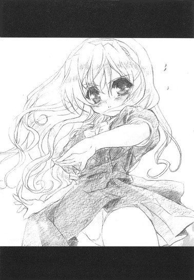
「それに......あなたの言うそのいかがわしいカタログ、本当は私が持ってきたものなんです。だから言いたいことがあるのなら、私に言ってくださいね」
「......」
春香の背中に、炎をまとった龍が吼えているのが見えた。
その笑顔の裏に隠された迫力に、さすがの佐々岡もそれ以上は何も言えなかったみたいだ。まあ単にダメージがひどくて喋れなかっただけかもしれんが。
「それでは裕人さん、行きましょう。遅刻してしまいます」
振り返ってそう微笑む春香は、いつもの天使のような表情に戻っていた。
......そういえば今さらながらに思い出したが、春香ってどこかの古武術の師範代の資格を持ってるとか何とか。いやそれにしたって今の佐々岡の飛び方、明らかに異常だったぞ......
「あの......裕人さん？」
停止している俺の顔を、心配そうに春香が下から覗き込んでくる。
「......いや、何でもない」
まあ、いいか。気にならないわけではないが（ていうかすげえ気になるが）、春香の屈託のない無邪気な笑顔の前では、そんなことは小さなことだ。春香の悲しむ顔を見ることがなければ、俺はそれでいい。
だけど地面を活きの悪いゾンビのように這いつくばっている佐々岡の姿を見て、一つだけ固く心に誓った。
この先、何があろうと春香を本気で怒らせるようなことだけは絶対するまい、と。
そしてこの一件を境に、あれだけうるさかった佐々岡はめっきりと静かになった。それどころか俺や春香を見ると、マングースに相対したシマヘビのように目を逸らしてそそくさと逃げ出す始末である。気持ちは分からんでもないが。
またそれと同時に、それまでさっぱり収まる気配のなかった俺についての悪いウワサまでもが、キレイさっぱり跡形もなく完全消滅したりもした。理由については──考えるまでもないだろう。あの場には俺たちの他にたくさんのギャラリーもいたしな。......今さらながらに春香の影響力の強さというものを再確認させられた思いである。
何にせよこれでようやく、残った厄介事の全てが解決されたことになる。
約二週間ぶりに戻ってきた日常。
とはいえファンクラブ員からは相変わらず親の仇のごとく睨まれてはいるし、「春香様から離れろ！このブタが！」みたいな内容の怪文書もなお時折届いたりもするのだが、そのことについてはもう諦めた。何だかんだ言って、俺が春香と仲良くしていることは事実であるわけだし。うーむ、せめて屋上で簀巻きにされかねないような、目立つことだけはしないように気を付けよう。
「裕人さ～ん」
──とは思うのだが。
「よろしかったらいっしょにお昼ご飯を食べませんか？」
──正直、それも難しいんじゃないかって気がする今日この頃である。
楽しそうな顔でこっちに向かって手をぱたぱたと振る春香。
ちなみに現在のシチュエーションは昼休みの教室である。最近、春香は以前に比べて学園でも積極的に俺に声をかけてくるようになった。それが俺に心を許してくれたということならば嬉しいことこの上ないのだが、いかんせん物事には必ず長所と短所の両面が存在するのである。
まあつまり。
昼休みの教室には当然ながら周りに大勢のクラスメイトたちがいるわけであり、そんな中で『白銀の星屑』がそんな行動をとれば注目を買うのは必至であり、
「綾瀬、お前ここ最近一段と春香様と仲がいいみたいじゃねえか」
「いっしょに昼メシねえ......けっ、調子に乗ってんじゃねえぞ」
さらにうちのクラス内にはファンクラブ員（しかもわりと武闘派）が多数存在しているのである。
「とりあえず、屋上で簀巻きか？」
「いや、花壇に埋めてチューリップにしてやるのがいいだろ」
「プールで逆さ吊りってのもあるな」
......はたして俺は無事に夏休みを迎えられるんだろうか。
かなり不安だった。
エピローグ
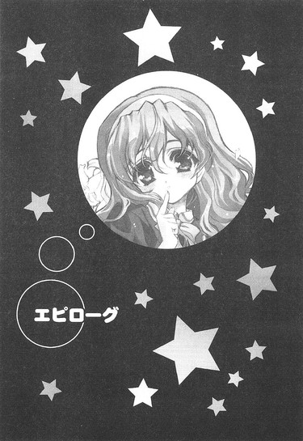
夏休みの初日。
俺は春香の部屋にいた。
「実は......裕人さんに、お見せしたいものがあるんです」
と言われてやって来たのだが、見せたいものって一体何だろう。......まさか、春香のメイド服姿をご披露してくれるとか!?ここにはリアルメイド服（葉月さん所有）があるわけだし──。いやいくら何でもそりゃないか。でも前に着てみたいとか言ってたよな......
などと我ながら春季発動期な考えに頭を悩ませていると、
「お待たせしました」
春香が、ティーポットを片手に戻ってきた。
当然、メイド服は着ていなかった。
「......ちっ」
「？ 何が〝ちっ〟なんですか？」
「い、いやこっちのことで......」
「？」
言えるわけがありません。
「よく分かりませんが......あ、セイロンブレンドのテ・フレスコでよろしかったでしょうか？」
「ああ」
とりあえず、それが紅茶の名前なんだろうってことが分かるくらいには俺も成長している。
オレンジの甘い香りのする紅茶を、春香がカップ（旧エドワード王朝のアンティーク。時価六十万円）に注いでくれた。
「そういえば、今日は葉月さんは？」
ふと、いつもはこういった仕事を一手に引き受けているメイド長さんの姿がないことに気付く。
「葉月さんはお休み中です。早めの夏休み、ということで田舎に帰省しています」
「へえ、田舎か」
そう言われてみれば、門のところまで迎えにきてくれたのも他のメイドさんだった。
「北海道だそうです。お土産にクマカレーを買ってきてくれるって言っていました」
「クマカレー......」
またマニアックなもんを。
「美夏の姿も見当たらないが......」
「あの子はお祖父様といっしょに山に狩猟に行っています。たぶん夜まで帰ってこないと思います」
「狩猟......」
渋すぎる趣味だ。というか、あの歳で猟銃をぶっぱなしたりして法律に触れはしないんだろうか。
「ちなみにお父様は〝なさ〟に出張で、お母様もパリに視察旅行に出かけていますので、今日はいないです。なので、ゆっくりしていってくださいね」
春香がそう付け加える。
なるほど。てことは、今日は春香と二人きりってことか。うんうん。美夏や葉月さんたちがいてにぎやかなのもキライじゃないが、たまにはそういうのもいいかもな──
「......」
......って、二人きり!?
自分で思い浮かべた言葉に思わず突っ込みを入れてしまう。
いやもちろん、この広大な乃木坂邸の維持を陰で支えている常駐メイドさんはたくさんいるんだろうから純粋な意味では二人きりじゃないかもしれんが、少なくともあの気配を殺せるメイド長さんのように、呼んでもいないのに気付いたらいつの間にか背後に立っているなんて無粋なマネをする人はいないだろう。だとすれば、実質的には二人きりも同然だ。
二人きり。
何とも素敵な響きである。
「あれ？ 裕人さん、何だか顔が赤いですが、どうかされましたか？」
「い、いや」
だがそう考えると何だか急に緊張してきた。さっきまでは気にならなかった春香の仕草の一つ一つになぜだか目が行ってしまう。
気を逸らすために頭の中で世界史の年号（１９１９ホテルヴェルサイユでヴェルサイユ条約、とか）を暗誦していると、
「──裕人さん」
間近に春香の顔があった。
「な、何だ？」
答える声が思わず動揺してしまう。うう、落ち着け、俺。
「今日は裕人さんにお見せしたいものがあるって言いましたよね」
「あ、ああ」
見せたいもの、と言われて再び頭にメイド服姿の春香を思い浮かべてしまうが（変態）、こちらを見つめる春香の表情が思っていたよりもずっと真剣だったため、すぐに気を引き締め直す。
「実は、これなんです」
そう言って春香は傍らに置かれている雑誌を大事そうに手に取った。
「これは......」
それはつい先日にこの部屋の本棚の片隅で見てしまったモノ。
「はい。『イノセント・スマイル』の創刊号です」
春香の思い出の品がそこにあった。
「あの......私といっしょに、これを読んでいただけませんか？」
「これを？」
「はい。ダメ......でしょうか」
「いや、それは構わないが......」
特別に断る理由もないためそう答える。でも何だって春香、そんなことをしたいんだ？
「......これは私にとって、特別な本なんです」
春香が静かに語り出した。
「私、落ち込んだりイヤなことがあったりした時には、いつもこれを見ることで自分を励ましてきました。辛いことがあっても悲しいことがあっても、きっとあの時のあの方みたいに私のことを慰めてくれる人がどこかにいる。そう信じて、私はイヤなことを乗り越えてきたんです」
胸にぎゅっと『イノセント・スマイル』を抱きしめる春香。
「そういう意味で、この本は私にとって特別なんです。あの方との思い出の品であって、とてもとても大事な、私の宝物です」
「そう、か......」
今でもその人物が春香にそこまで頼られているということは、俺としては何となく複雑な気分だったりする。いやそんな名前も顔も分かんないようなやつに嫉妬してもしょうがないんだけどさ。
少しばかり沈んでいると、
「だから、裕人さんにもこれを読んでほしかったんです。私を今まで支えてきてくれたものを......そ、その、今、私のことを一番支えてくれる人に」
春香は、そう言った。
「え......」
「私、嬉しかったです。裕人さんが私を庇ってくれたって聞いて......それで裕人さんが周りからヘンな目で見られたらどうしようかと思うと同時に、心の奥では、庇ってくれたことを嬉しいって思う私がいました。......ごめんなさい。私は悪い子だと思います。でも......本当に、嬉しくて──」
「春香......」
素直に嬉しかった。春香は俺のことを『自分を一番支えてくれる人』と思ってくれている。それが何よりも嬉しかった。
嬉しさのあまり一瞬辺りを走り回りたい衝動に駆られたが、実際にそれをやるとただのヘンな人（それも黄色い救急車を呼ばれるレベル）である。俺はこみ上げてくる喜びを何とか抑えて言った。
「それじゃ、いっしょに読むか」
「はいっ！」
春香と並んでベッドの端に座って、二人で『イノセント・スマイル』のページをめくっていく。
「私、ここのところの台詞が大好きなんです」
「ここのお話のクライマックスの部分がとっても面白くて──」
「このイラスト、かわいいですよね」
各所で春香が感想を述べる。その姿はいつにないほど生き生きとしていて、本当に春香はこの本に思い入れがあるんだなということを改めて思い知らされる。それはやっぱりちょっとばかり悔しいんだが、でも仕方がないことなんだろうな。恋人の元彼氏のことが気にかかる現彼氏の心境に近いものを味わいながら、ちらりと隣の春香の顔を見てみた。
楽しそうに、『イノセント・スマイル』のページを繰る春香。
──あれ？
その姿に、ふと違和感を覚えた。
それはあの日、春香がいないときにこの部屋でこっそりとこれを見てしまったときに感じたものと同じ、何かが心に引っかかる感じ。既視感といってもいいような気がする。
──俺は、どこかでこれと同じシーンを見たことがある？
夕暮れ時。オレンジ色に染まった公園。泣いている女の子。並んで本を読む俺たち。
その瞬間、ふいに頭に一つの映像が浮かんだ。
＊
それは確か信長に付き合わされて二度目にアキハバラに行った日の帰り道のことだった。
家路を急ぐ俺の目に入ってきたのは、夕日に照らされてオレンジ色に染まった公園と、その片隅にあるベンチに一人で座っている女の子の姿。
女の子は泣いていた。
人目もはばからずに大声で泣いていた。
そんな女の子の声に気付かないわけがないのに、周りを歩く大人たちはみんな見て見ぬフリをして足早にその場を通り過ぎていく。だれも女の子に声をかけようとする者はいない。
何だかハラが立った。
これだけ大人がいるんなら、一人くらい声をかけてやってもいいだろ。女の子が泣いてるんだぞ。
でもやっぱり、だれも女の子に声をかけるやつはいなくて。
女の子は変わらずにわんわんと泣き続けていて。
気付いたら、俺は女の子に声をかけていた。
「一人......なのか？」
「......」
女の子が、すすりあげながらもこくりとうなずく。
「家、帰らなくていいのか？ もう遅いぞ」
「......帰りたく、ないです」
ふるふると首を横に振る。何があったのかなんて俺には全然分からなかったけど、女の子が本気でそう思ってることだけは分かった。
放っておけなかった。
「隣、いいか」
そう訊くと女の子は少し驚いた顔をしたが、すぐに首を縦に振った。
女の子の横に座る。
「......」
「......」
しばらくの間、沈黙が続いた。
女の子のぐすっ、という泣き声だけが辺りに響く。
先に耐えられなくなったのは俺の方だった。
「なあ、何があったのか知らないけど、泣いてばっかりじゃつまんないだろ。何かしようぜ」
「......」
女の子が無言で俺の顔を見る。「するって、何を？」とその目が言っていた。
「そうだな......サッカーとか」
「......ボール、ないです」
その通りだった。
「だったら、かくれんぼとかは」
「......二人だけでやると、すごく寂しいです」
確かに。
「うーん......」
他にも色々と提案してみたが、人も物も少ないこの場では出来ないことばかりだった。
「まいった......どうするか」
女の子は顔をうつむかせて、じっと地面を見つめている。このままだとまた泣き出してしまいそうだった。何か女の子を楽しませることが出来るものはないか──
「ん、そうだ」
思い出したのは右手に持っていたモノ。今日一日中、アキハバラ中の本屋をムリヤリ巡らされてようやく手に入れたそれを紙袋から取り出し、女の子に見せる。
「いっしょにこれ読まないか？ まあ、マンガなんだけどさ」
「まん、が？」
女の子が少しだけ興味ありそうな顔を見せた。
「ああ。友達が言ってたんだが、けっこうレアアイテムらしいぞ」
「れあ、あいてむ......」
適当にページを開いて何ページか読み進めていくと、女の子は目を輝かせた。
「面白い......です」
女の子は、ちょっとだけ笑ってそう言った。それは初めて見た女の子の笑顔だった。
確かにそのマンガは面白かった。信長の買うこのテの本には全然興味のなかった俺だけど、これから少しはその認識を改めてもいいかなとも思った。あくまで少しは、だが。
それから二人で、並んでそれを読んだ。その間に会話はほとんどなかったけど、ページが進むにつれて女の子の顔が段々と明るくなっていくのが分かった。
全部を読み終える頃には、辺りはすっかり暗くなっていた。
「少しは元気、出たか？」
問うと、女の子は最初に見たときよりも少しだけ大きな声で、
「......はい」
と、うなずいた。
「それじゃ俺はそろそろ帰るけど、おまえは──」
「あ、私も......帰ります」
ベンチから立ち上がり、
「おかげさまで......元気、出ました」
そう言って女の子がぺこりと頭を下げる。その手には、今まで読んでいたマンガ雑誌。
「あ、そうですよね。これ、お返ししないと──」
名残惜しそうに見つめて、俺にマンガ雑誌を差し出す女の子。その宝物を手放すような目を見て、俺はついこう言っていた。
「......やる」
「え？」
「これ、やるよ。欲しいんだろ」
女の子が、その大きな瞳をお月様みたいに丸くした。
「え、で、でも......大事なものなのでは」
「まあそうらしいけど。でもおまえもこれ、好きなんだろ？」
「は、はい。好きです。とっても......」
女の子が力強く返事をする。
「だったらいいさ。きっとあいつが持ってるよりもおまえが持ってた方が、この本も喜ぶ」
「そ、そうなのでしょうか......」
「ああ」
この本を見て女の子は笑顔になった。それはつまり、事情はどうあれ女の子にとってこの本は笑顔の源の一つであるってことだ。だったら、きっとこの本は信長なんかよりもこの女の子が持つにふさわしい。そうに決まってる。ていうか、今俺が決めた。
俺は女の子の手に、強く本を握らせた。
「あ、あの......ありがとうございます」
「いいさ。それより、もう泣くなよ。おまえはたぶん、笑ってた方がかわいいから」
それはさっきの笑顔を見て何となく思ったことだった。
「え、あ......は、はい」
「それじゃあな！」
それだけ言って走り出す。
「あ、あの」
女の子の声がまだ後ろから聞こえてきたような気がしたけれど、門限（ルコの夕食）が迫っていたので俺は振り返らなかった。
そのマンガ雑誌は、その日から女の子の物となった。
ちなみにその後、信長にそのことを話すと、
「あ、あげたって、『イノセント・スマイル』の創刊号をー!?ぎゃー、な、何てことしてくれたんだよー。あれを手に入れるのに僕がどれだけ苦労したかー」
などとさんざん文句を言われたが、そんなに大事なもんなら俺に預けたままにしたりせずに自分で持ってろって話である。それに本屋巡りをさせられて苦労したのは俺も同じだ。だいたいお前、この本全部で三冊買ってたんだから、今さら一冊くらいなくたって問題ないだろ。
「問題あるよー！ あーもう、裕人は分かってないんだからー。大事な本は保管用と閲覧用と自慢用に三冊用意しておくのが常識なんだよー。あーあ、おかげで友達に自慢出来なくなっちゃったじゃないかー。裕人のせいだからねー！」
そこまで知らん。
アキハバラまで付き合ってやったんだから、それくらいガマンしてくれ。
＊
──思い出した。
完全に思い出した。
夕暮れ時。オレンジ色に染まった公園。泣いている女の子。並んで本を読む俺たち。
てことは、あのときのあの女の子は春香だったってことか？
「なあ春香、その『イノセント・スマイル』をくれたやつって......もしかして、小生意気なガキじゃなかったか？」
訊いてみる。すると春香は「違います」と、ふるふると首を横に振った。
「あの方は全然小生意気なんかじゃなかったです。とっても素敵な男の子でした。言葉遣いはちょっと乱暴なんですけど優しい方で......そうですね、ちょっと裕人さんに似ていたかもしれません」
はにかんだ表情で俺を見る春香。そのかわいらしい笑顔にあの時の女の子の控えめな笑顔が重なって──
「......はは」
何だか、おかしくなった。
つまり俺たちの関係は、三ヶ月前どころか、もっとずっとずっと昔から始まっていたのであり、そればかりか春香がこっちの道（アキバ系）に走った一因どころか、むしろのその大元の原因は俺にあるわけで──
「はは、あはは」
思わず声を上げて笑ってしまった。
そんな俺を、春香が初めてウーパールーパーを見た小学生みたいな不思議そうな顔で眺める。
とりあえず一つだけ確かなことは。
俺たちのこの不思議な関係が、これからも続いていくことだけは間違いなさそうだ。
あとがき
はじめまして、五十嵐雄策と申します。
このたびは第４回電撃ｈｐ短編小説賞で最優秀賞を頂戴し、デビューさせていただきました。......といっても、受賞作と本作は違うのですが。
本書のプロローグ、第一話は「電撃ｈｐ」30号、第二話は31号に掲載されたものを加筆修正したもので、第三話と第四話、エピローグは書き下ろしとなって打ります。
できるだけ読み易く、かつ読んでいて楽しいお話になるように心がけたつもりです。あくまで〝つもり〟なのでどこまでうまくいっているかは分かりませんが、少しでもそれが成功していると感じてもらえれば嬉しい限りです。
ちなみに本書はハッピーエンドになっております。鬱な展開とかが苦手～という人も落ち着いて読めるようにしたつもりなのですが、どうでしたでしょうか？
さてさきほども書きましたが、本作と第４回電撃ｈｐ短編小説賞受賞作の『幸せ二世帯同居計画』とは異なります。
なぜかと言いますとこれは実に単純でして、
〝私自身が、まさかそこ（受賞）までいくとは思っていなかったため、受賞のお報せを聞いた時にはすでに本作の執筆に入ってしまっていた〟
ということが理由として挙げられます。
そして途中まで書いてしまったのならまずはこっちを完成させてしまおうということになり、執筆を進めた結果、めでたくこのたび文庫化されたものが本作というわけです。
なので、受賞作についても続編の構想がないわけではありません。
私としてもできれば受賞作の続きも書きたいと目論んでいますので、読みたいと思われる方がいらっしゃいましたらむ葉書やメールをいただけたらなあ、とさりげなく宣伝してみたり。
......何だかいつの間にか話が横道に逸れてきてしまいましたが、これは『乃木坂春香の秘密』のあとがきです。
以下はこの本を出すにあたってお世話になった方々へ感謝を。
電撃 Short 3（「電撃ｈｐ」本誌やホームページで行われている読者参加企画）、電撃ｈｐ短編賞への投稿時代を経て、ようやくデビューに至ったのですが......。まずは電撃 Short 3 作品の頃から読んでくださっていた担当編集の和田様と三木様。疲れてくると脳の稼働率が一気に平時の30％くらいにまで落ちるような新人でスミマセン。メインとなるネタ出しからサブの小物のネーミングまで、様々な面でさんざんご面倒をおかけしましたが、中でもネーミングについては本当にお世話になりました。お二人のアドバイスがなかったら、『イノセント・スマイル』は今でも『スーパー萌え萌え大王』のままだったでしょう。お二人への心からの感謝と共に、自分の素敵すぎるネーミングセンスを改めて怖く思う今日この頃です。
イラストのしゃあ様。「電撃ｈｐ」掲載時から素晴らしいイラストをありがとうございました。どのキャラもイメージにぴったりで、途中からはイラストを思い浮かべながら本文を書いておりました。ネコミミメイドが特にラブリーです。キュートです。プリティーです。実に頭の悪そうな形容しかできない自分のボキャブラリーがアレですが、とても感謝しております。これからもよろしくお願いします。
またデザイナー様に校閲様をはじめ、この本が出るにあたり様々な方面でご尽力いただいたたくさんの方々。本当にありがとうございました。感謝の念でいっぱいです。
高校時代からの友人の松崎くんに村口くん。お酒を飲みながら君たちと交わす会話は、執筆において酔っ払いを書くのに非常に役に立ちました。また今度、飲みましょうね。
疲れた時に心を和ませてくれた我が家の愛犬（マルチーズ）。もうそろそろ八歳になるシニア犬ですが、いつまでも長生きしてください。
そして最後に、この本を手に取ってくださった皆様。
本当に本当に心から感謝しております。できるものならば一人一人に直接お礼を言いたいくらいなのですが、実際にそんなことをされても迷惑なだけだと思うのでやめておきます。
本書を読み終わって、あなたが少しでも楽しい気分になっていただけたなら、それだけで私にとっては何よりの喜びです。
それではまた再びお会いできることを願って──
底本：乃木坂春香の秘密
五十嵐雄策
二〇〇四年十月二十五日 初版発行
入力：海洋深層水
校正：鹿仔
底本２４５頁６行・ｔｘｔ２５２８行
木刀：「木刀」と「竹刀」でルビを修正。
底本２７１頁１行・ｔｘｔ２８０５行
癇：「癇」と「癪」でルビを修正。